ARIMAX/SARIMAX/VAR
Discription:
Literatue Review to choose variables and models
The key of my project big picture is to identify the impacts and correlations among Incomes and Housing Prices. Therefore, houseing prices such as home values, sale prices, and rental prices are very crucial to utilize models. Different aspects of the feature will be included such as the housing prices, incomes, gdp, gini index to check the affordability. By using the datasets and factors, we can evaluate the correlations and impacts among them to better help us understand the effect and gain insights about the disparities and inbalance of the wealth. In addition, it can also help us to make predictions for the future such that we can act now to solve the potential global issues.
Therefore, my models would be:
- ARIMAX Model for Home Value ~ Sale Price + Rental Price
The reason is that I think that Sale and rental prices are directly linked to home values. The sale price is an immediate indicator of market valuation, while rental prices reflect ongoing demand and income potential from properties. I expect a strong correlation between these variables and home value. By utilizing the ARIMAX Model, it can help me capture both the time series nature of housing data and the sale and rental prices to get a better understanding of the situation.
Then, the first model focus on the Housing Prices, the second model will focus on the income parts. The goal of my project is to find correlations and impacts among these features. Therefore, in this case, for personal income, saving rate and household savings are important factors that I should include in my analsyis.
- ARIMAX Model for Saving Rate ~ Household Income + Household Saving
The reason for chooing these three variables is that Household income and savings are fundamental determinants of the saving rate. Increased income typically leads to higher saving rates. Household savings directly contribute to the overall saving rate. And with more savings, there are more chances to look for a new home or look for a higher home prices. Which can also be connected to me first model.
Then, I must also evaluate the economic as a whole. Tehrefore, gdp deflator would be a good choice. By using, gdp, sale price, and saving rate, I combine the bigger effect of economic, individual aspect, and the market sale price together to evaluate the correlations and impacts.
- VAR Model for Sale Price, Saving Rate, GDP Deflator
I choose (VAR) model because I think that it is suitable for multivariate time series data where variables are interdependent. Since I want to look for connections among these three features, VAR allows for the examination of how a variable is affected by its own lagged values and the lagged values of others, crucial in studying economic systems.
- ARIMAX Model for GINI Index (Household Income + Household Saving + Sale Price)
Then, I decide to use the GINI index as my fourth major objective in ARIMAX model. It is a measure of income inequality, which also be affected by household income, savings, and property values. Higher income and savings typically indicate more wealth but there are many people that do not have high wealth which make the inequality. The sale price of homes can reflect wealth disparities as well. Therefore, the usage of the three variables and ARIMAX model can help capturing both the influences of these specific among each other and the time series nature of the GINI index. This model helps understand how current and past economic conditions impact income inequality.
Finally, I plan to use var model on home value, saving rate, gdp deflator, and sale price. The reason: Home values are also influenced by overall economic conditions, represented by the GDP deflator, and directly by the housing market dynamics, represented by sale prices. And by adding the saving rate, we can see that what are the total impacts of these varaibles as a whole.
- VAR Model for Home Value (Saving Rate + GDP Deflator + Sale Price)
A VAR model is very suitable for understanding the interactions as a whole. It allows for the assessment of how each variable influences and is influenced by the others over time, crucial in real estate economics.
Code
saving =ts(df1$W398RC1A027NBEA)
income =ts(df2$MEHOINUSA672N)
gini =ts(df4$SIPOVGINIUSA)
afford =ts(df5$FIXHAI)
saverate =ts(df6$PSAVERT)
gdp =ts(df7$A191RI1Q225SBEA)
saleprice =ts(df8$Mean.Sale.Price)
homevalue =ts(df8$Mean.Home.Value)
rentalprice =ts(df8$mean)1. (ARIMAX) Home value ~ Sale price + Rental price
Set Up The Variables
Code
dd1<-data.frame(homevalue,saleprice,rentalprice,df8$date)
colnames(dd1)<-c("homevalue","saleprice","rentalprice",'date')
knitr::kable(head(dd1))| homevalue | saleprice | rentalprice | date |
|---|---|---|---|
| 381885.7 | 394588 | 1489.368 | 2018-08-31 |
| 383510.8 | 396351 | 1495.171 | 2018-09-30 |
| 384594.7 | 391015 | 1492.019 | 2018-10-31 |
| 385442.7 | 385500 | 1483.661 | 2018-11-30 |
| 387043.6 | 384032 | 1482.177 | 2018-12-31 |
| 389061.8 | 385450 | 1477.878 | 2019-01-31 |
Code
lg.dd1 <- data.frame("date" =dd1$date,"homevalue"=log(dd1$homevalue),"saleprice"=log(dd1$saleprice),
"rentalprice"=log(dd1$rentalprice))
#### converting to time series component #########
lg.dd.ts1<-ts(lg.dd1,frequency = 4)
##### Facet Plot #######################
autoplot(lg.dd.ts1[,c(2:4)], facets=TRUE) +
xlab("Year") + ylab("") +
ggtitle("The Household Prices in USA")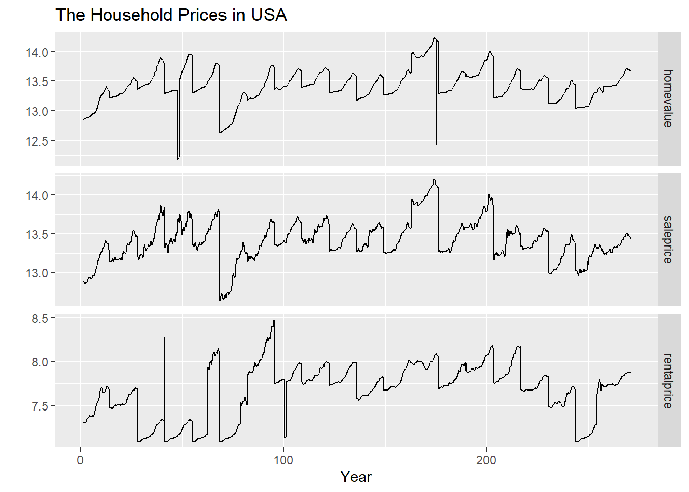
Auto Fit The Model
Code
xreg1 <- cbind(saleprice = lg.dd.ts1[, "saleprice"],
rentalprice = lg.dd.ts1[, "rentalprice"])
fit1 <- auto.arima(lg.dd.ts1[, "homevalue"], xreg = xreg1)
summary(fit1)Series: lg.dd.ts1[, "homevalue"]
Regression with ARIMA(2,1,2) errors
Coefficients:
ar1 ar2 ma1 ma2 saleprice rentalprice
0.0357 0.4180 -0.463 -0.4912 0.8765 0.1160
s.e. 0.1418 0.0786 0.147 0.1386 0.0422 0.0354
sigma^2 = 0.007652: log likelihood = 1100.12
AIC=-2186.23 AICc=-2186.13 BIC=-2151.35
Training set error measures:
ME RMSE MAE MPE MAPE MASE
Training set 0.001968005 0.08719397 0.02695833 0.01034377 0.2024629 0.3681705
ACF1
Training set 0.002220954Manual Fit The Model
Code
fit.reg1 <- lm( homevalue ~ saleprice+ rentalprice, data=lg.dd.ts1)
summary(fit.reg1)
Call:
lm(formula = homevalue ~ saleprice + rentalprice, data = lg.dd.ts1)
Residuals:
Min 1Q Median 3Q Max
-1.68312 -0.03521 -0.00042 0.03629 0.27205
Coefficients:
Estimate Std. Error t value Pr(>|t|)
(Intercept) 0.49700 0.18542 2.680 0.00747 **
saleprice 0.93209 0.01680 55.472 < 2e-16 ***
rentalprice 0.05678 0.01422 3.993 6.96e-05 ***
---
Signif. codes: 0 '***' 0.001 '**' 0.01 '*' 0.05 '.' 0.1 ' ' 1
Residual standard error: 0.1184 on 1077 degrees of freedom
Multiple R-squared: 0.823, Adjusted R-squared: 0.8227
F-statistic: 2504 on 2 and 1077 DF, p-value: < 2.2e-16We can see that the variables are pretty significant.
Check The Residuals
Code
checkresiduals(fit1)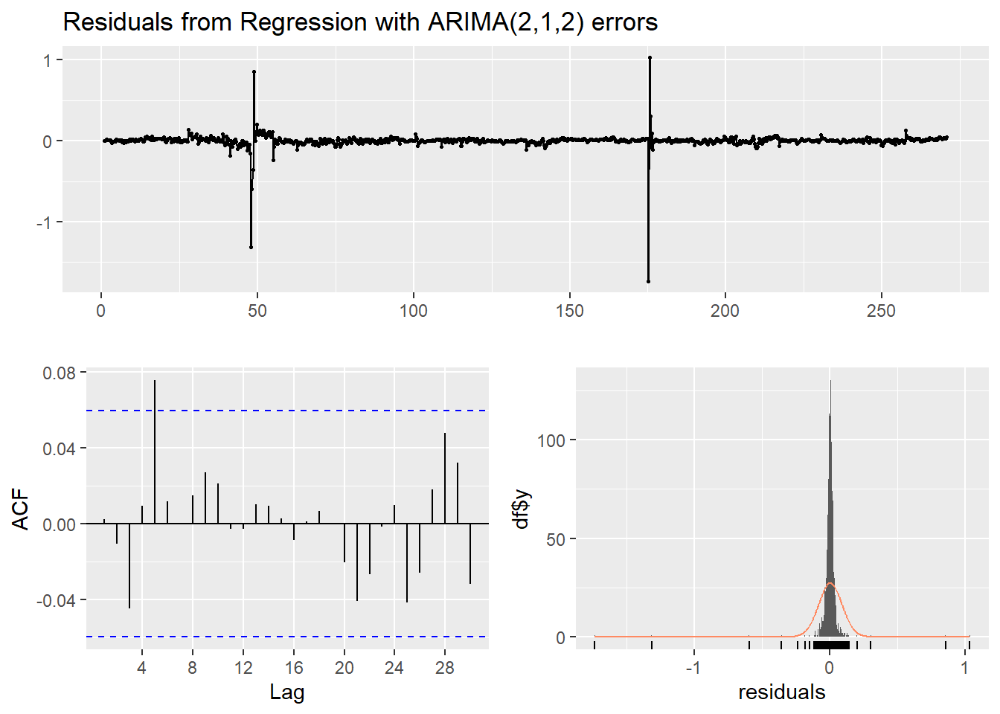
Ljung-Box test
data: Residuals from Regression with ARIMA(2,1,2) errors
Q* = 8.9982, df = 4, p-value = 0.06114
Model df: 4. Total lags used: 8Based on the output, there’s no indication that seasonal terms are being used and the datasets did not have too much seasonal pattern. Therefore, this is an ARIMAX model.
Check ACF and PACF
Code
########### Converting to Time Series component #######
res.fit1<-ts(residuals(fit.reg1),frequency = 4)
############## Then look at the residuals ############
ggAcf(res.fit1)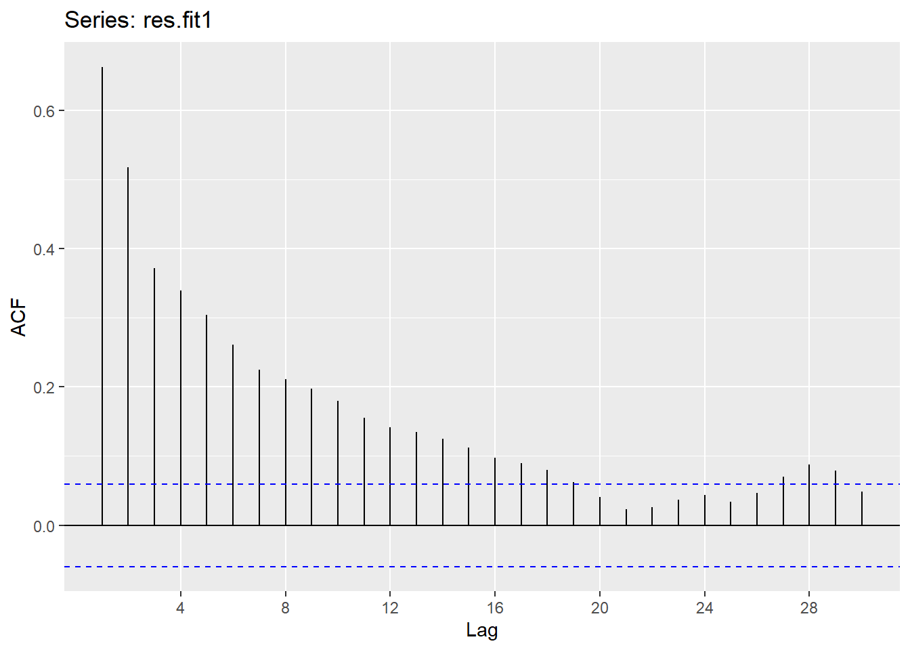
Code
ggPacf(res.fit1)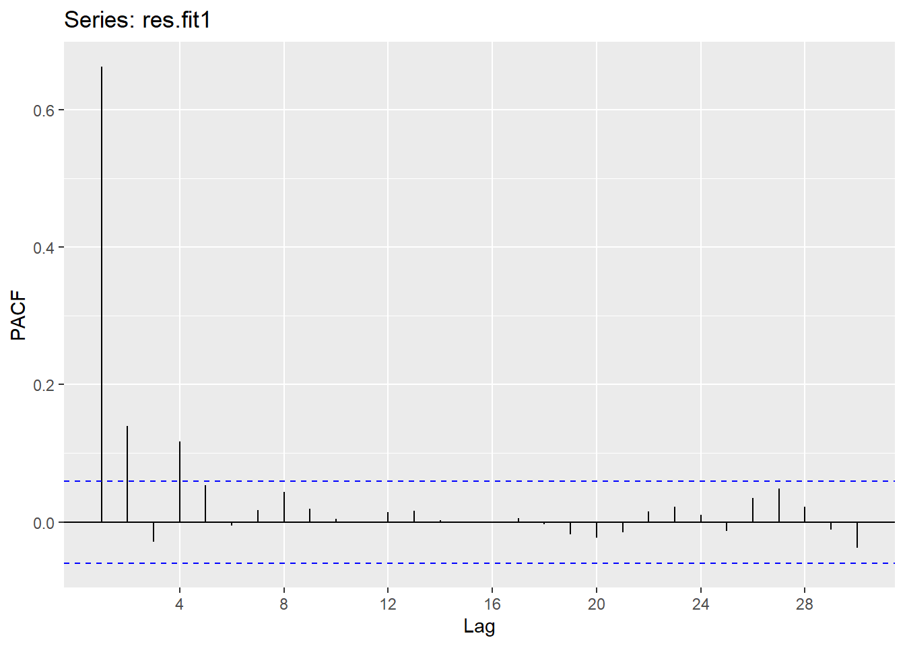
Since there is no major seasonal pattern. We use differencing directly
Differencing ACF and PACF
Code
# Extract the ACF and PACF plots without the theme
acf_plot <- ggAcf(diff(res.fit1, differences = 1)) +
labs(title = "ACF for first Order of Differencing and Seasonal Differenceing") +
theme(
panel.background = element_rect(fill = "#E0E0E0", color = "#E0E0E0"),
plot.background = element_rect(fill = "#E0E0E0", color = "#E0E0E0")
)
pacf_plot <- ggPacf(diff(res.fit1, differences = 1)) +
labs(title = "PACF for first Orders of Differencing and Seasonal Differenceing") +
theme(
panel.background = element_rect(fill = "#E0E0E0", color = "#E0E0E0"),
plot.background = element_rect(fill = "#E0E0E0", color = "#E0E0E0")
)
# Combine the plots
grid.arrange(acf_plot, pacf_plot, ncol = 1) 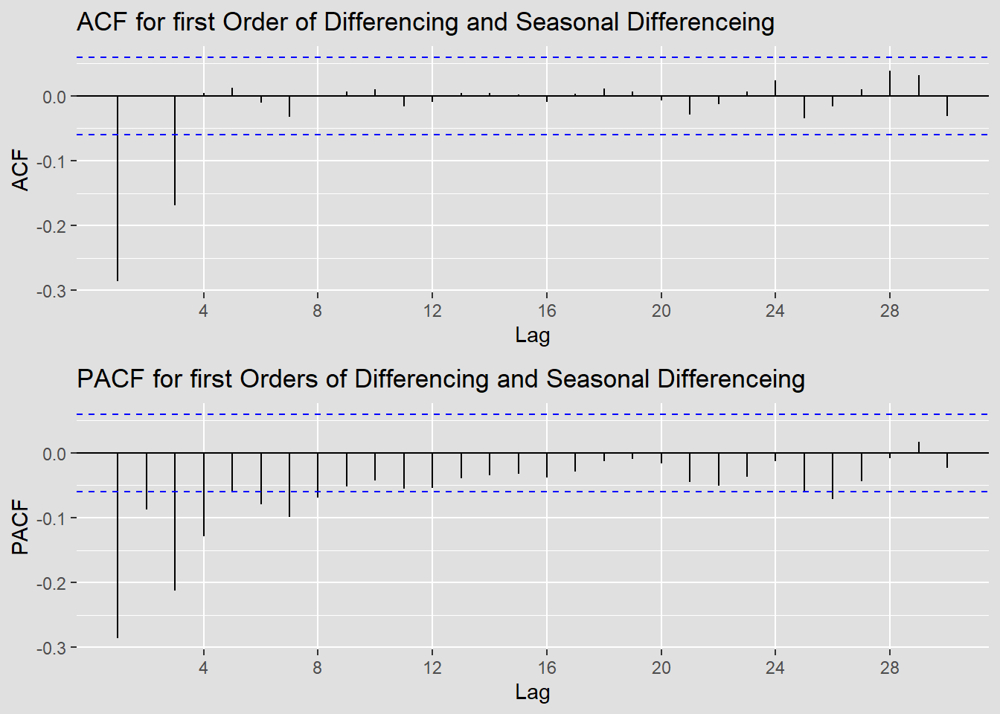
Now, it is mostly stationary for us to continue From ACF and PACF, it seems that we can consider: p = 1,2,3 q = 1,2,3. We use first order of differencing so d = 1. There is no major seasonal pattern, therefore, no P,Q,D in this case.
Model Diagnotistics
Finding the model parameters.
Code
d=1
i=1
temp= data.frame()
ls=matrix(rep(NA,6*23),nrow=23) # roughly nrow = 3x4x2
for (p in 3:5)# p=1,2,3 : 3
{
for(q in 3:5)# q=1,2,3,4 :4
{
for(d in 1:3)# d=1,2 :2
{
if(p-1+d+q-1<=8) #usual threshold
{
model<- Arima(res.fit1,order=c(p-1,d,q-1),include.drift=TRUE)
ls[i,]= c(p-1,d,q-1,model$aic,model$bic,model$aicc)
i=i+1
#print(i)
}
}
}
}
temp= as.data.frame(ls)
names(temp)= c("p","d","q","AIC","BIC","AICc")
#temp
knitr::kable(temp)| p | d | q | AIC | BIC | AICc |
|---|---|---|---|---|---|
| 2 | 1 | 2 | -2185.822 | -2155.919 | -2185.743 |
| 2 | 2 | 2 | -2163.551 | -2138.637 | -2163.495 |
| 2 | 3 | 2 | -2031.719 | -2006.809 | -2031.663 |
| 2 | 1 | 3 | -2183.857 | -2148.971 | -2183.753 |
| 2 | 2 | 3 | -2168.936 | -2139.039 | -2168.858 |
| 2 | 3 | 3 | -2024.416 | -1994.525 | -2024.338 |
| 2 | 1 | 4 | -2194.287 | -2154.417 | -2194.153 |
| 2 | 2 | 4 | -2166.447 | -2131.567 | -2166.343 |
| 3 | 1 | 2 | -2183.841 | -2148.954 | -2183.736 |
| 3 | 2 | 2 | -2164.637 | -2134.740 | -2164.558 |
| 3 | 3 | 2 | -2075.699 | -2045.808 | -2075.621 |
| 3 | 1 | 3 | -2183.029 | -2143.159 | -2182.895 |
| 3 | 2 | 3 | -2167.183 | -2132.303 | -2167.078 |
| 3 | 1 | 4 | -2192.632 | -2147.778 | -2192.464 |
| 4 | 1 | 2 | -2192.881 | -2153.011 | -2192.747 |
| 4 | 2 | 2 | -2171.137 | -2136.257 | -2171.032 |
| 4 | 1 | 3 | -2190.880 | -2146.026 | -2190.712 |
| NA | NA | NA | NA | NA | NA |
| NA | NA | NA | NA | NA | NA |
| NA | NA | NA | NA | NA | NA |
| NA | NA | NA | NA | NA | NA |
| NA | NA | NA | NA | NA | NA |
| NA | NA | NA | NA | NA | NA |
Code
temp[which.min(temp$AIC),] p d q AIC BIC AICc
7 2 1 4 -2194.287 -2154.417 -2194.153Code
temp[which.min(temp$BIC),] p d q AIC BIC AICc
1 2 1 2 -2185.822 -2155.919 -2185.743Code
temp[which.min(temp$AICc),] p d q AIC BIC AICc
7 2 1 4 -2194.287 -2154.417 -2194.153From here, we have two potential ones: (2,1,2) and (2,1,4)
Compare The models
Code
set.seed(236)
model_output11 <- capture.output(sarima(res.fit1, 2,1,4)) 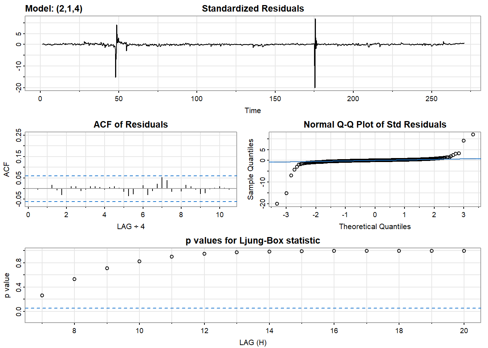
Code
model_output12 <- capture.output(sarima(res.fit1, 2,1,2)) 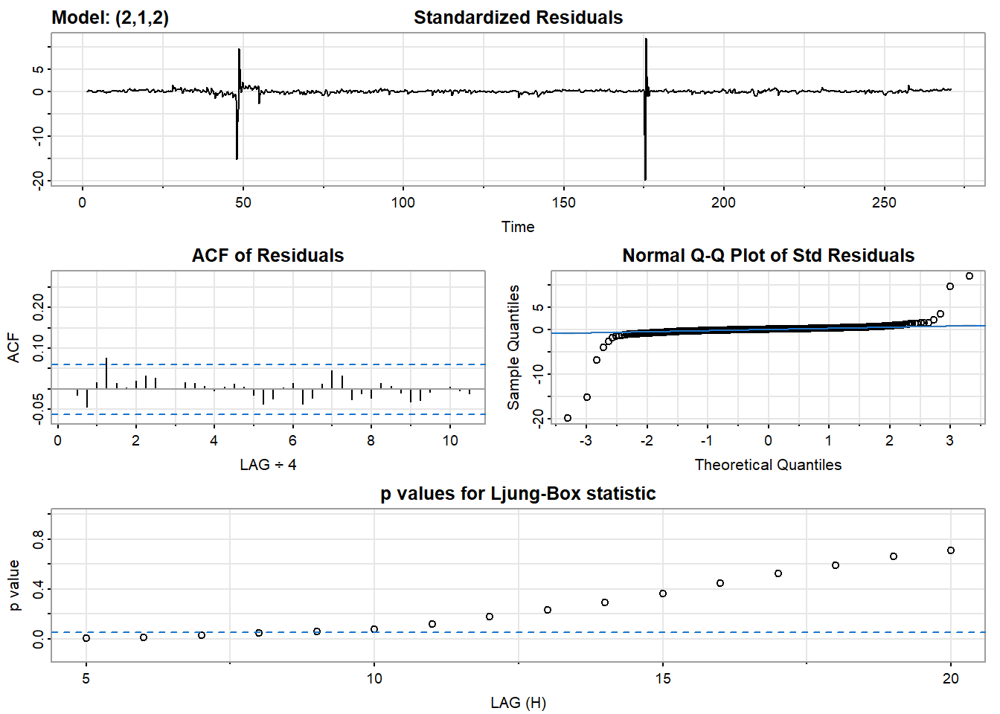
Code
cat(model_output11[90:123], model_output11[length(model_output11)], sep = "\n")Call:
arima(x = xdata, order = c(p, d, q), seasonal = list(order = c(P, D, Q), period = S),
xreg = constant, transform.pars = trans, fixed = fixed, optim.control = list(trace = trc,
REPORT = 1, reltol = tol))
Coefficients:
ar1 ar2 ma1 ma2 ma3 ma4 constant
0.8239 0.0553 -1.2526 0.1997 -0.1235 0.1795 1e-04
s.e. 0.1938 0.1511 0.1916 0.2323 0.0649 0.0393 1e-04
sigma^2 estimated as 0.007533: log likelihood = 1105.14, aic = -2194.29
$degrees_of_freedom
[1] 1072
$ttable
Estimate SE t.value p.value
ar1 0.8239 0.1938 4.2522 0.0000
ar2 0.0553 0.1511 0.3662 0.7143
ma1 -1.2526 0.1916 -6.5386 0.0000
ma2 0.1997 0.2323 0.8597 0.3901
ma3 -0.1235 0.0649 -1.9028 0.0573
ma4 0.1795 0.0393 4.5726 0.0000
constant 0.0001 0.0001 0.6131 0.5399
$AIC
[1] -2.03363
$AICc
[1] -2.033534
$BIC
[1] -1.996679Code
cat(model_output12[40:70], model_output12[length(model_output12)], sep = "\n")arima(x = xdata, order = c(p, d, q), seasonal = list(order = c(P, D, Q), period = S),
xreg = constant, transform.pars = trans, fixed = fixed, optim.control = list(trace = trc,
REPORT = 1, reltol = tol))
Coefficients:
ar1 ar2 ma1 ma2 constant
0.0580 0.4279 -0.4812 -0.4893 1e-04
s.e. 0.1428 0.0806 0.1486 0.1408 2e-04
sigma^2 estimated as 0.007625: log likelihood = 1098.91, aic = -2185.82
$degrees_of_freedom
[1] 1074
$ttable
Estimate SE t.value p.value
ar1 0.0580 0.1428 0.4063 0.6846
ar2 0.4279 0.0806 5.3077 0.0000
ma1 -0.4812 0.1486 -3.2384 0.0012
ma2 -0.4893 0.1408 -3.4748 0.0005
constant 0.0001 0.0002 0.6602 0.5093
$AIC
[1] -2.025785
$AICc
[1] -2.025733
$BIC
[1] -1.998071Based on this, I think the second one (2,1,4) is slightly better with less correlation and smaller AIC value.
Cross validation
Code
n=length(res.fit1)
n *0.3 [1] 324Code
k=324
rmse1 <- matrix(NA, 53,4)
rmse2 <- matrix(NA,53,4)
rmse3 <- matrix(NA,53,4)
st <- tsp(res.fit1)[1]+(k-1)/4
for(i in 1:53)
{
xtrain <- window(res.fit1, end=st + i-1)
xtest <- window(res.fit1, start=st + (i-1) + 1/4, end=st + i)
fit <- Arima(xtrain, order=c(2,1,4),
include.drift=TRUE, method="ML")
fcast <- forecast(fit, h=4)
fit2 <- Arima(xtrain, order=c(2,1,2),
include.drift=TRUE, method="ML")
fcast2 <- forecast(fit2, h=4)
rmse1[i,1:length(xtest)] <- sqrt((fcast$mean-xtest)^2)
rmse2[i,1:length(xtest)] <- sqrt((fcast2$mean-xtest)^2)
}
plot(1:4, colMeans(rmse1,na.rm=TRUE), type="l", col=2, xlab="horizon", ylab="RMSE")
lines(1:4, colMeans(rmse2,na.rm=TRUE), type="l",col=3)
legend("topleft",legend=c("fit1","fit2"),col=2:3,lty=1)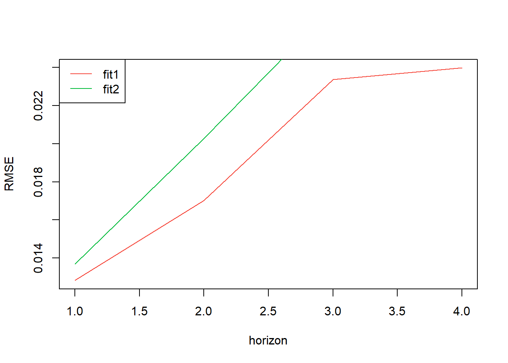
Code
colMeans( rmse1,na.rm=TRUE)[1] 0.01282484 0.01701977 0.02336799 0.02397791Code
colMeans( rmse2,na.rm=TRUE)[1] 0.01368543 0.02028240 0.02719078 0.02635619Based on the cross validation, we can see that the conclusion aligns, the fit1 which is (2,1,4) performs better with smaller errors.
Fit the model
Code
xreg1 <- cbind(saleprice = lg.dd.ts1[, "saleprice"],
rentalprice = lg.dd.ts1[, "rentalprice"])
fit1 <- Arima(lg.dd.ts1[, "homevalue"],order=c(2,1,4),xreg=xreg1)
summary(fit1)Series: lg.dd.ts1[, "homevalue"]
Regression with ARIMA(2,1,4) errors
Coefficients:
ar1 ar2 ma1 ma2 ma3 ma4 saleprice rentalprice
0.8151 0.0766 -1.2454 0.1814 -0.1233 0.1903 0.8651 0.1058
s.e. 0.1952 0.1493 0.1934 0.2331 0.0684 0.0400 0.0433 0.0358
sigma^2 = 0.007576: log likelihood = 1106.15
AIC=-2194.31 AICc=-2194.14 BIC=-2149.45
Training set error measures:
ME RMSE MAE MPE MAPE MASE
Training set 0.002244825 0.08667672 0.02677427 0.01221504 0.2010633 0.3656567
ACF1
Training set -0.001078051Write Down The equation:
Given that y_t represents the log-transformed homevalue at time t, the ARIMA(2,1,4) can be:
(1 - φ₁B - φ₂B²)(1 - B)yₜ = α + β₁ * salepriceₜ + β₂ * rentalpriceₜ + (1 + θ₁B + θ₂B² + θ₃B³ + θ₄B⁴)εₜ
Based on the summary, my equation is
(1 - 0.8151B - 0.0766B²)(1 - B)yₜ = α + 0.8651 * salepriceₜ + 0.1058 * rentalpriceₜ + (1 - 1.2454B + 0.1814B² - 0.1233B³ + 0.1903B⁴)εₜ
Forecasting
Code
spfit<-auto.arima(lg.dd.ts1[, "saleprice"])
summary(spfit) Series: lg.dd.ts1[, "saleprice"]
ARIMA(0,1,0)
sigma^2 = 0.004229: log likelihood = 1417.77
AIC=-2833.53 AICc=-2833.53 BIC=-2828.55
Training set error measures:
ME RMSE MAE MPE MAPE MASE
Training set 0.0005143487 0.06500146 0.02430292 0.002720093 0.1819437 0.3527218
ACF1
Training set 0.05157596Code
fsp<-forecast(spfit,80) #obtaining forecasts
rpfit<-auto.arima(lg.dd.ts1[, "rentalprice"]) #fitting an ARIMA model to the Import variable
summary(rpfit)Series: lg.dd.ts1[, "rentalprice"]
ARIMA(0,1,1)
Coefficients:
ma1
-0.1423
s.e. 0.0308
sigma^2 = 0.006889: log likelihood = 1155.01
AIC=-2306.01 AICc=-2306 BIC=-2296.05
Training set error measures:
ME RMSE MAE MPE MAPE MASE
Training set 0.00063182 0.08292248 0.02052085 0.001505318 0.2698055 0.3434587
ACF1
Training set 0.001944753Code
frp<-forecast(rpfit,80)
fxreg <- cbind(saleprice = fsp$mean,
rentalprice = frp$mean) #fimp$mean gives the forecasted values
fcast <- forecast(fit1, xreg=fxreg,80)
autoplot(fcast, main="Forecast of Home Values") + xlab("Year") +
ylab("Home")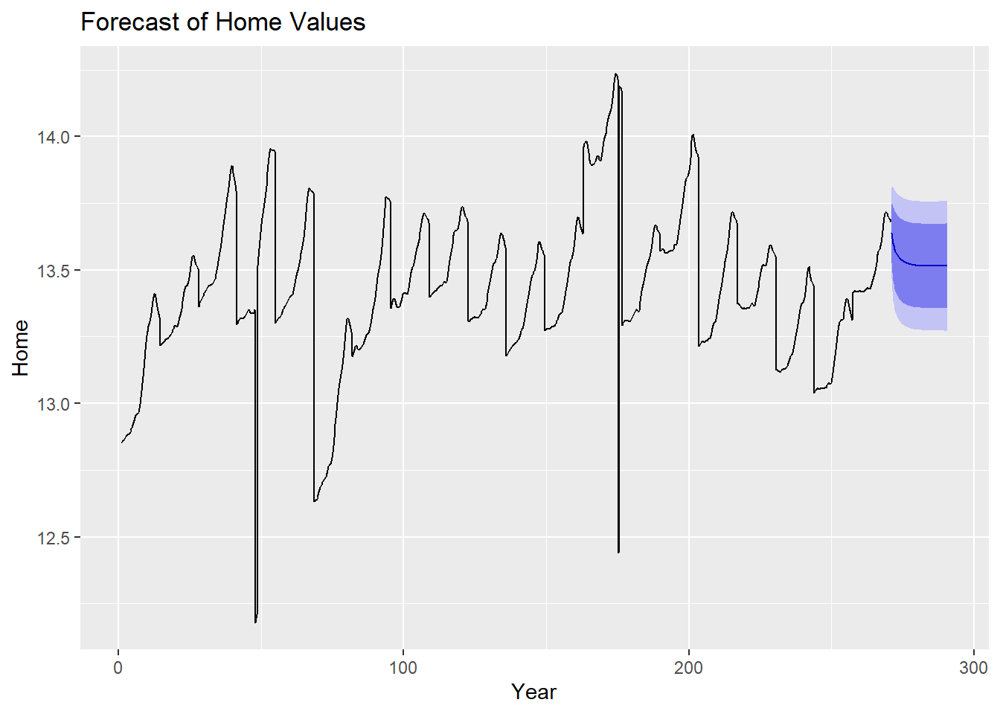
Based on the forecast, we can see that the model did capture the seasonal contents where it predict the downfall of the data.
2. (ARIMAX) Saving Rate ~ Household Income + Household Saving
Creating Ts Objects For Variables
Code
# Define start and end dates
start_date <- as.Date("1992-01-01")
end_date <- as.Date("2020-12-31")
# Subset data frames to include only data from 1992 through 2020
df1_sub <- subset(df1, DATE >= start_date & DATE <= end_date)
df2_sub <- subset(df2, DATE >= start_date & DATE <= end_date)
df6_sub <- subset(df6, DATE >= start_date & DATE <= end_date)
# Assuming the data is annual for this example. If it's quarterly, you'd use frequency = 4; if monthly, frequency = 12.
frequency <- 1
# Create ts objects
saving <- ts(df1_sub$W398RC1A027NBEA, start = c(1992, 1), end = c(2020, 1), frequency = frequency)
income <- ts(df2_sub$MEHOINUSA672N, start = c(1992, 1), end = c(2020, 1), frequency = frequency)
rate <- ts(df6_sub$PSAVERT, start = c(1992, 1), end = c(2020, 1), frequency = frequency)saving rate, income, saveing can be interesting to be evaluated
Combine the Varaibles
Code
dd2<-data.frame(rate,saving,income,df1_sub$DATE)
colnames(dd2)<-c("saving_rate","household_saving","household_income",'date')
knitr::kable(head(dd2))| saving_rate | household_saving | household_income | date |
|---|---|---|---|
| 9.4 | 431.693 | 58153 | 1992-01-01 |
| 9.8 | 377.899 | 57843 | 1993-01-01 |
| 9.7 | 345.198 | 58515 | 1994-01-01 |
| 9.9 | 366.774 | 60348 | 1995-01-01 |
| 9.9 | 353.639 | 61225 | 1996-01-01 |
| 10.1 | 339.566 | 62484 | 1997-01-01 |
Make a Log transformation For Seasonal Pattern
Code
lg.dd2 <- data.frame("date" =dd2$date,"saving_rate"=log(dd2$saving_rate),"household_saving"=log(dd2$household_saving),
"household_income"=log(dd2$household_income))
#### converting to time series component #########
lg.dd.ts2<-ts(lg.dd2,frequency = 4)
##### Facet Plot #######################
autoplot(lg.dd.ts2[,c(2:4)], facets=TRUE) +
xlab("Year") + ylab("") +
ggtitle("The Household Prices in USA")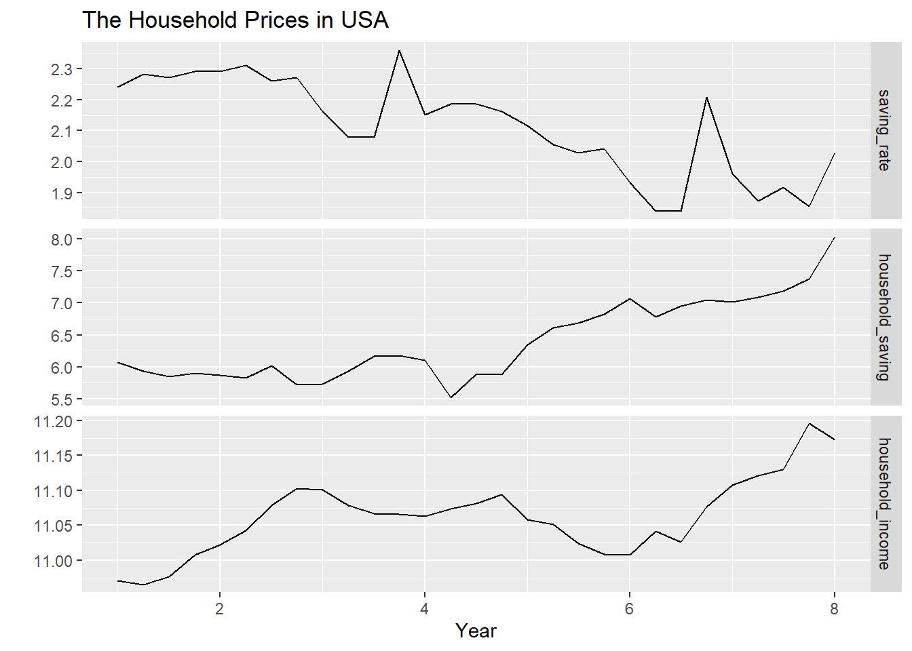
Auto Fit The Model
Code
xreg2 <- cbind(household_income = lg.dd.ts2[, "household_income"],
household_saving = lg.dd.ts2[, "household_saving"])
fit2 <- auto.arima(lg.dd.ts2[, "saving_rate"], xreg = xreg2)
summary(fit2)Series: lg.dd.ts2[, "saving_rate"]
Regression with ARIMA(0,0,0) errors
Coefficients:
household_income household_saving
0.3057 -0.1981
s.e. 0.0191 0.0328
sigma^2 = 0.01216: log likelihood = 23.83
AIC=-41.66 AICc=-40.7 BIC=-37.56
Training set error measures:
ME RMSE MAE MPE MAPE MASE
Training set 0.0001058585 0.1063899 0.08808777 -0.2509742 4.206073 0.7528751
ACF1
Training set 0.1430342Manual Fit The model
Code
fit.reg2 <- lm( saving_rate ~ household_saving + household_income, data=lg.dd.ts2)
summary(fit.reg2)
Call:
lm(formula = saving_rate ~ household_saving + household_income,
data = lg.dd.ts2)
Residuals:
Min 1Q Median 3Q Max
-0.20674 -0.06359 -0.01653 0.06697 0.23007
Coefficients:
Estimate Std. Error t value Pr(>|t|)
(Intercept) 5.24855 4.53045 1.159 0.257
household_saving -0.18141 0.03676 -4.934 4e-05 ***
household_income -0.17843 0.41833 -0.427 0.673
---
Signif. codes: 0 '***' 0.001 '**' 0.01 '*' 0.05 '.' 0.1 ' ' 1
Residual standard error: 0.1096 on 26 degrees of freedom
Multiple R-squared: 0.5556, Adjusted R-squared: 0.5214
F-statistic: 16.25 on 2 and 26 DF, p-value: 2.637e-05It seems that the household income did not play any important role. Therefore, We can consider to remove it.
Manual Fit Again Without Insignificant Variable
Code
fit.reg2 <- lm( saving_rate ~ household_saving, data=lg.dd.ts2)
summary(fit.reg2)
Call:
lm(formula = saving_rate ~ household_saving, data = lg.dd.ts2)
Residuals:
Min 1Q Median 3Q Max
-0.20039 -0.07323 -0.01942 0.07709 0.22147
Coefficients:
Estimate Std. Error t value Pr(>|t|)
(Intercept) 3.3183 0.2097 15.828 3.48e-15 ***
household_saving -0.1882 0.0326 -5.774 3.85e-06 ***
---
Signif. codes: 0 '***' 0.001 '**' 0.01 '*' 0.05 '.' 0.1 ' ' 1
Residual standard error: 0.1079 on 27 degrees of freedom
Multiple R-squared: 0.5525, Adjusted R-squared: 0.5359
F-statistic: 33.33 on 1 and 27 DF, p-value: 3.85e-06We can see that the variables are pretty significant.
Check residuals
Code
checkresiduals(fit2)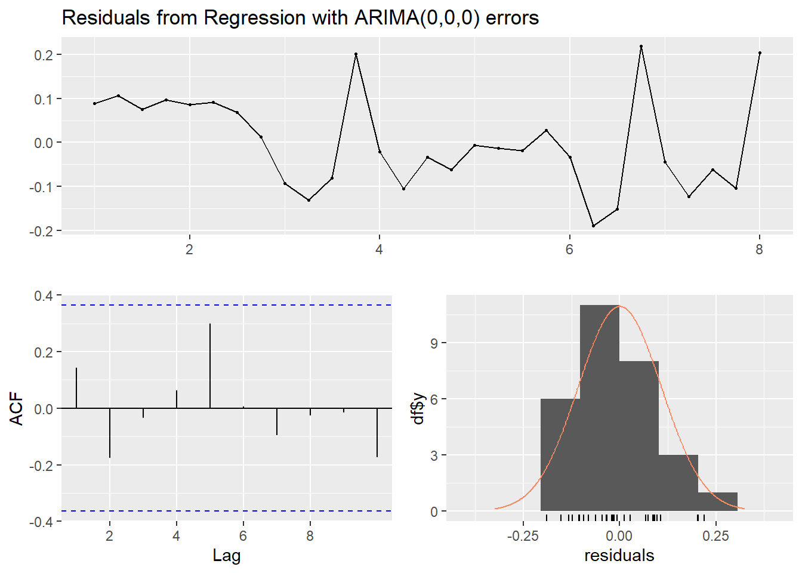
Ljung-Box test
data: Residuals from Regression with ARIMA(0,0,0) errors
Q* = 5.2247, df = 6, p-value = 0.5153
Model df: 0. Total lags used: 6Based on the output, there’s no indication that seasonal terms are being used and the datasets did not have too much seasonal pattern. Therefore, this is an ARIMAX model.
ACF and PACF Check
Code
########### Converting to Time Series component #######
res.fit2<-ts(residuals(fit.reg2),frequency = 2)
############## Then look at the residuals ############
ggAcf(res.fit2)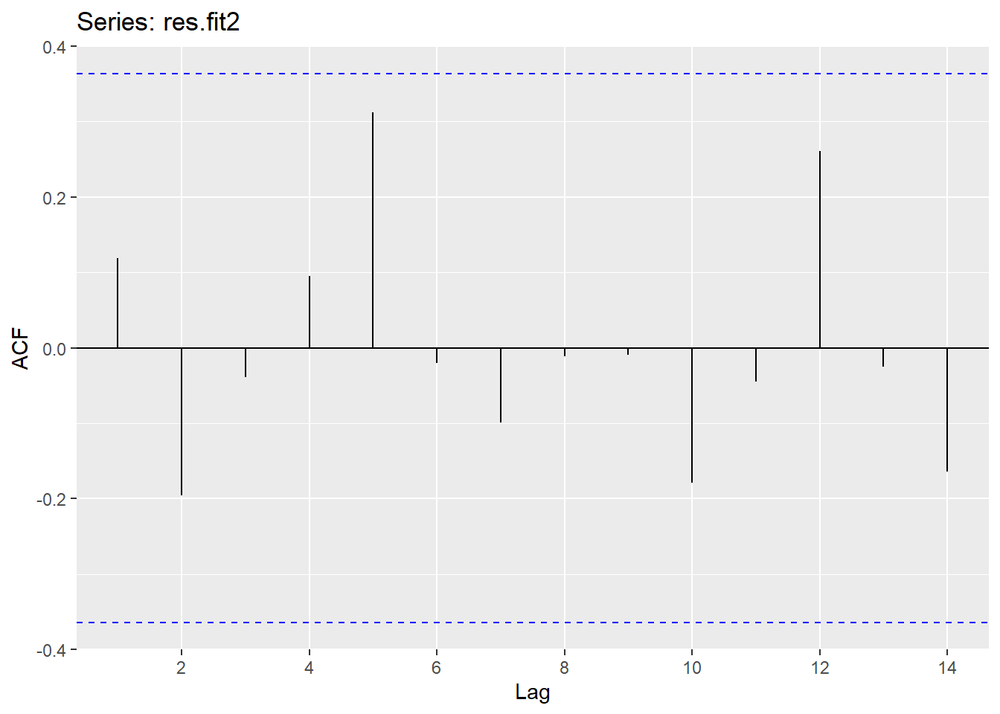
Code
ggPacf(res.fit2)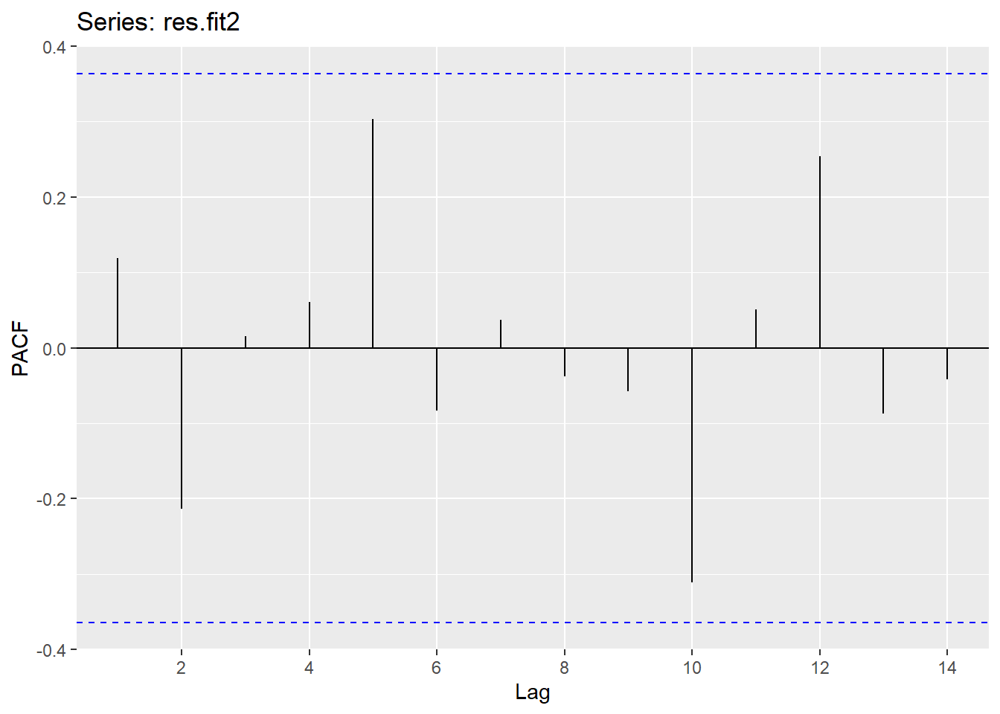
Since there is no major seasonal pattern. And it seems that the data is already stationary
No Need For Seasonal Differencing
Code
# Extract the ACF and PACF plots without the theme
acf_plot <- ggAcf(res.fit2) +
labs(title = "ACF for data") +
theme(
panel.background = element_rect(fill = "#E0E0E0", color = "#E0E0E0"),
plot.background = element_rect(fill = "#E0E0E0", color = "#E0E0E0")
)
pacf_plot <- ggPacf(res.fit2) +
labs(title = "PACF for data") +
theme(
panel.background = element_rect(fill = "#E0E0E0", color = "#E0E0E0"),
plot.background = element_rect(fill = "#E0E0E0", color = "#E0E0E0")
)
# Combine the plots
grid.arrange(acf_plot, pacf_plot, ncol = 1) 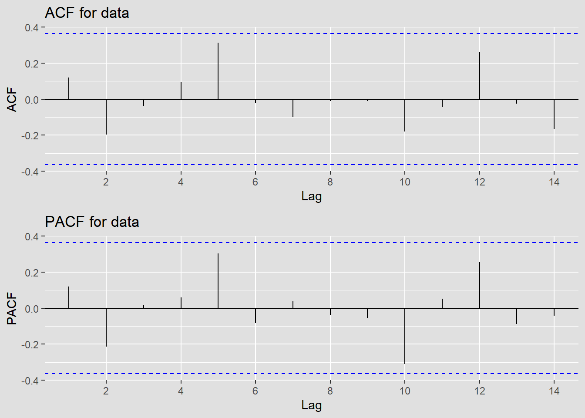
Now, it is mostly stationary for us to continue From ACF and PACF, it seems that we can consider: p = 1,2 q = 1,2. We use first order of differencing so d = 0. There is no major seasonal pattern, therefore, no P,Q,D in this case.
Model Diagnotistics
Finding the model parameters.
Code
d=1
i=1
temp= data.frame()
ls=matrix(rep(NA,6*23),nrow=23) # roughly nrow = 3x4x2
for (p in 3:5)# p=1,2,3 : 3
{
for(q in 3:5)# q=1,2,3,4 :4
{
for(d in 1:3)# d=1,2 :2
{
if(p-1+d+q-1<=8) #usual threshold
{
model<- Arima(res.fit2,order=c(p-1,d,q-1),include.drift=TRUE)
ls[i,]= c(p-1,d,q-1,model$aic,model$bic,model$aicc)
i=i+1
#print(i)
}
}
}
}
temp= as.data.frame(ls)
names(temp)= c("p","d","q","AIC","BIC","AICc")
#temp
knitr::kable(temp)| p | d | q | AIC | BIC | AICc |
|---|---|---|---|---|---|
| 2 | 1 | 2 | -35.62908 | -27.635848 | -31.629075 |
| 2 | 2 | 2 | -30.44483 | -23.965644 | -27.587686 |
| 2 | 3 | 2 | -14.32464 | -8.034157 | -11.324640 |
| 2 | 1 | 3 | -34.33747 | -25.012041 | -28.737473 |
| 2 | 2 | 3 | -27.95423 | -20.179204 | -23.754225 |
| 2 | 3 | 3 | -11.59444 | -4.045857 | -7.173384 |
| 2 | 1 | 4 | -32.35833 | -21.700692 | -24.779380 |
| 2 | 2 | 4 | -27.40495 | -18.334089 | -21.510210 |
| 3 | 1 | 2 | -34.29408 | -24.968649 | -28.694081 |
| 3 | 2 | 2 | -29.01339 | -21.238370 | -24.813392 |
| 3 | 3 | 2 | -13.51554 | -5.966961 | -9.094488 |
| 3 | 1 | 3 | -32.86641 | -22.208777 | -25.287466 |
| 3 | 2 | 3 | -27.18329 | -18.112427 | -21.288549 |
| 3 | 1 | 4 | -33.13762 | -21.147775 | -23.137616 |
| 4 | 1 | 2 | -34.88942 | -24.231784 | -27.310473 |
| 4 | 2 | 2 | -27.67647 | -18.605616 | -21.781737 |
| 4 | 1 | 3 | -33.00327 | -21.013431 | -23.003272 |
| NA | NA | NA | NA | NA | NA |
| NA | NA | NA | NA | NA | NA |
| NA | NA | NA | NA | NA | NA |
| NA | NA | NA | NA | NA | NA |
| NA | NA | NA | NA | NA | NA |
| NA | NA | NA | NA | NA | NA |
Code
temp[which.min(temp$AIC),] p d q AIC BIC AICc
1 2 1 2 -35.62907 -27.63585 -31.62907Code
temp[which.min(temp$BIC),] p d q AIC BIC AICc
1 2 1 2 -35.62907 -27.63585 -31.62907Code
temp[which.min(temp$AICc),] p d q AIC BIC AICc
1 2 1 2 -35.62907 -27.63585 -31.62907From here, we have two potential ones: (2,1,2) and (0,0,0) from part 1
Compare The Models
Code
set.seed(236)
model_output21 <- capture.output(sarima(res.fit2, 2,1,2)) 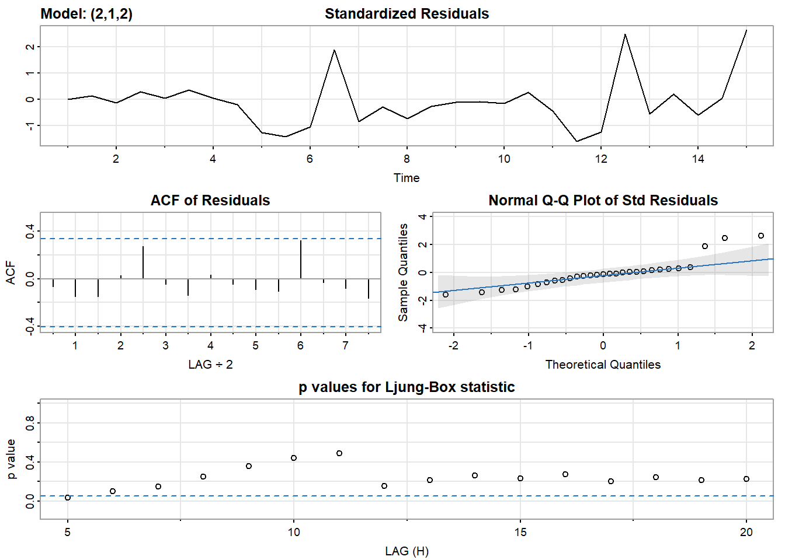
Code
model_output22 <- capture.output(sarima(res.fit2, 0,0,0)) 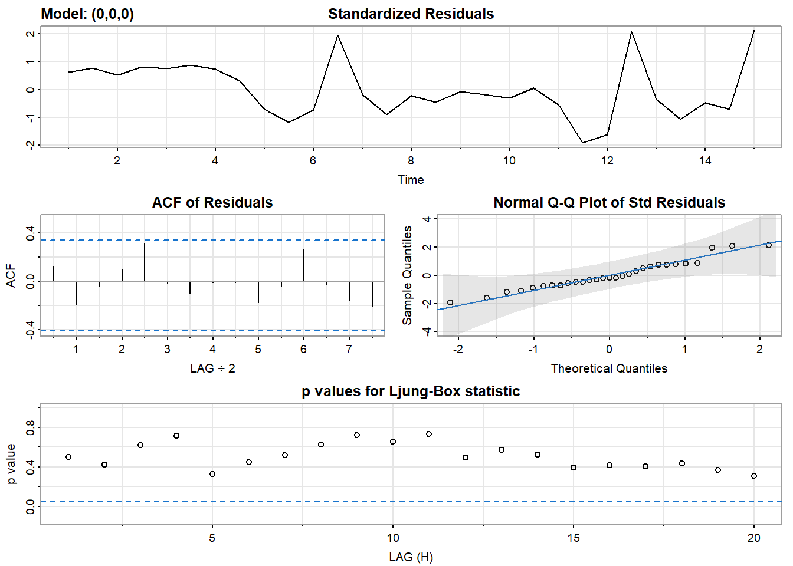
Code
cat(model_output21[145:160], model_output21[length(model_output21)], sep = "\n")$ttable
Estimate SE t.value p.value
ar1 -0.5752 0.3322 -1.7319 0.0967
ar2 -0.1902 0.2359 -0.8064 0.4283
ma1 -0.2555 0.2865 -0.8917 0.3818
ma2 -0.7445 0.2726 -2.7308 0.0119
constant -0.0032 0.0022 -1.4586 0.1582
$AIC
[1] -1.272467
$AICc
[1] -1.175064
$BIC
[1] -0.9869946Code
cat(model_output22[20:38], model_output22[length(model_output22)], sep = "\n")
sigma^2 estimated as 0.01084: log likelihood = 24.46, aic = -44.92
$degrees_of_freedom
[1] 28
$ttable
Estimate SE t.value p.value
xmean 0 0.0193 0 1
$AIC
[1] -1.548841
$AICc
[1] -1.543732
$BIC
[1] -1.454545Based on this, I think the first one (2,1,2) is slightly better with less correlation and closer to the significant level.
Cross validation
Code
n=length(res.fit2)
n *0.3 [1] 8.7Code
k=9
rmse1 <- matrix(NA, 40,2)
rmse2 <- matrix(NA,40,2)
rmse3 <- matrix(NA,40,2)
st <- tsp(res.fit1)[1]+(k-1)/4
for(i in 1:12)
{
xtrain <- window(res.fit2, end=st + i-1)
xtest <- window(res.fit2, start=st + (i-1) + 1/4, end=st + i)
fit <- Arima(xtrain, order=c(2,1,2),
include.drift=TRUE, method="ML")
fcast <- forecast(fit, h=4)
fit2 <- Arima(xtrain, order=c(0,0,0),
include.drift=TRUE, method="ML")
fcast2 <- forecast(fit2, h=4)
rmse1[i,1:length(xtest)] <- sqrt((fcast$mean-xtest)^2)
rmse2[i,1:length(xtest)] <- sqrt((fcast2$mean-xtest)^2)
}
plot(1:2, colMeans(rmse1,na.rm=TRUE), type="l", col=2, xlab="horizon", ylab="RMSE")
lines(1:2, colMeans(rmse2,na.rm=TRUE), type="l",col=3)
legend("topleft",legend=c("fit1","fit2"),col=2:3,lty=1)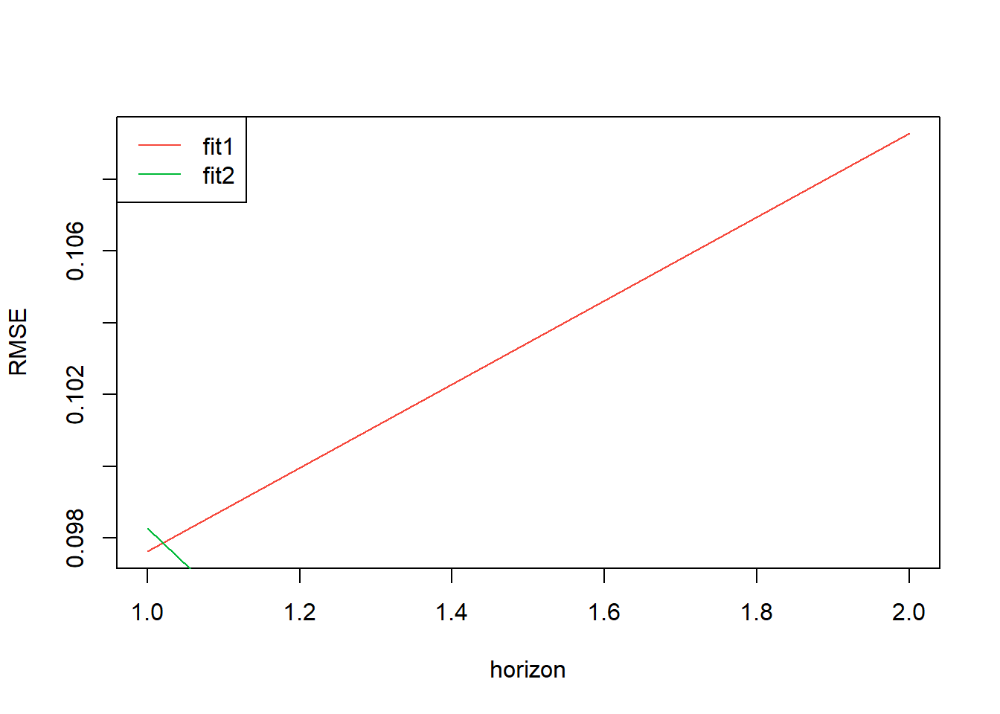
Here, although
Code
colMeans( rmse1,na.rm=TRUE)[1] 0.09762763 0.10927137Code
colMeans( rmse2,na.rm=TRUE)[1] 0.09827109 0.07812204Based on the cross validation, overall, the two method is simiarly within expectation. We can see that although model (0,0,0) has smaller errors after, the dataset is relatively biased due to the size of the date overlapping. We should still use the fit1 which is (2,1,2) to perform later analysis.
Fit the model With The Best One
Code
xreg2 <- cbind(household_income = lg.dd.ts2[, "household_income"],
household_saving = lg.dd.ts2[, "household_saving"])
fit2 <- Arima(lg.dd.ts2[, "saving_rate"],order=c(2,1,2),xreg=xreg2)
summary(fit2)Series: lg.dd.ts2[, "saving_rate"]
Regression with ARIMA(2,1,2) errors
Coefficients:
ar1 ar2 ma1 ma2 household_income household_saving
0.4885 -0.4602 -1.2187 0.5136 0.1188 -0.1330
s.e. 0.3344 0.2419 0.3265 0.3180 0.3668 0.0648
sigma^2 = 0.0124: log likelihood = 24.41
AIC=-34.81 AICc=-29.21 BIC=-25.48
Training set error measures:
ME RMSE MAE MPE MAPE MASE
Training set -0.01566954 0.0969955 0.06932111 -0.8864638 3.345804 0.5924788
ACF1
Training set -0.07898355Write Doen The equation:
Given that y_t represents the log-transformed homevalue at time t, the ARIMA(2,1,4) can be:
(1 - φ₁B - φ₂B²)(1 - B)yₜ = α + β₁ * salepriceₜ + β₂ * rentalpriceₜ + (1 + θ₁B + θ₂B² + θ₃B³ + θ₄B⁴)εₜ
Based on the summary, my equation for this model is
(1 - 0.4885B - (-0.4602)B^2)(1 - B)y_t = + 0.1188 _t - 0.1330 _t + (1 - 1.2187B + 0.5136B^2)_t
Forecasting
Code
hsfit<-auto.arima(lg.dd.ts2[, "household_saving"])
summary(hsfit) Series: lg.dd.ts2[, "household_saving"]
ARIMA(0,1,0) with drift
Coefficients:
drift
0.0701
s.e. 0.0447
sigma^2 = 0.05808: log likelihood = 0.62
AIC=2.76 AICc=3.24 BIC=5.42
Training set error measures:
ME RMSE MAE MPE MAPE MASE
Training set 0.0002068136 0.2325379 0.1666254 -0.1667371 2.642544 0.4511904
ACF1
Training set -0.04495977Code
fhs<-forecast(hsfit,12) #obtaining forecasts
hifit<-auto.arima(lg.dd.ts2[, "household_income"]) #fitting an ARIMA model to the Import variable
summary(rpfit)Series: lg.dd.ts1[, "rentalprice"]
ARIMA(0,1,1)
Coefficients:
ma1
-0.1423
s.e. 0.0308
sigma^2 = 0.006889: log likelihood = 1155.01
AIC=-2306.01 AICc=-2306 BIC=-2296.05
Training set error measures:
ME RMSE MAE MPE MAPE MASE
Training set 0.00063182 0.08292248 0.02052085 0.001505318 0.2698055 0.3434587
ACF1
Training set 0.001944753Code
fhi<-forecast(hifit,12)
fxreg <- cbind(household_income = fhi$mean,household_saving = fhs$mean
) #fimp$mean gives the forecasted values
fcast <- forecast(fit2, xreg=fxreg,12)
autoplot(fcast, main="Forecast of Saving Rate") + xlab("Year") +
ylab("Saving Rate")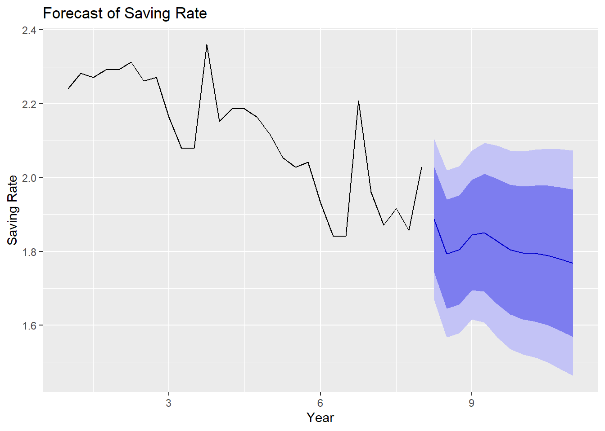
Based on the forecast, we can see that the model did capture the seasonal patterns where it predict the fluctuations and downfall of the data in the future.
3. (VAR) Sale Price & Saving Rate & Gdp Deflator
Transform all to time series
Code
saving =ts(df1$W398RC1A027NBEA)
income =ts(df2$MEHOINUSA672N)
sale = ts(df3$MSPUS)
gini =ts(df4$SIPOVGINIUSA)
afford =ts(df5$FIXHAI)
saverate =ts(df6$PSAVERT)
gdp =ts(df7$A191RI1Q225SBEA)
saleprice =ts(df8$Mean.Sale.Price)
homevalue =ts(df8$Mean.Home.Value)
rentalprice =ts(df8$mean)Prepare Variables: saving rate, sale price, gdp deflator
Code
# Define start and end dates
start_date <- as.Date("1965-01-01")
end_date <- as.Date("2020-12-31")
# Subset data frames to include only data from 1992 through 2020
df3_sub <- subset(df3, DATE >= start_date & DATE <= end_date)
df6_sub <- subset(df6, DATE >= start_date & DATE <= end_date)
df7_sub <- subset(df7, DATE >= start_date & DATE <= end_date)
# Assuming the data is annual for this example. If it's quarterly, you'd use frequency = 4; if monthly, frequency = 12.
frequency <- 5
# Create ts objects
sale_price <- ts(df3_sub$MSPUS, start = c(1965, 1), end = c(2020, 1), frequency = frequency)
saving_rate <- ts(df6_sub$PSAVERT, start = c(1965, 1), end = c(2020, 1), frequency = frequency)
gdp <- ts(df7_sub$A191RI1Q225SBEA, start = c(1965, 1), end = c(2020, 1), frequency = frequency)
DATE <- ts(df7_sub$DATE, start = c(1965, 1), end = c(2020, 1), frequency = frequency)Combine Variables
Code
dd3<-data.frame(sale_price,saving_rate,gdp,DATE)
colnames(dd3)<-c("sale_price","saving_rate","gdp_deflator",'date')
knitr::kable(head(dd3))| sale_price | saving_rate | gdp_deflator | date |
|---|---|---|---|
| 20200 | 12.1 | 2.0 | -1826 |
| 19800 | 10.7 | 1.8 | -1736 |
| 20200 | 10.8 | 1.6 | -1645 |
| 20300 | 10.2 | 2.8 | -1553 |
| 21000 | 11.2 | 2.6 | -1461 |
| 22100 | 12.1 | 3.3 | -1371 |
Plot the Variables Together
Code
lg.dd3 <- data.frame("date" =dd3$date,"sale_price"=log(dd3$sale_price),"saving_rate"=log(dd3$saving_rate),
"gdp_deflator"=log(dd3$gdp_deflator))
#### converting to time series component #########
lg.dd.ts3<-ts(lg.dd3,frequency = 5)
##### Facet Plot #######################
autoplot(lg.dd.ts3[,c(2:4)], facets=TRUE) +
xlab("Year") + ylab("") +
ggtitle("The GDP Deflator, Sale Price, Saving Rate in USA")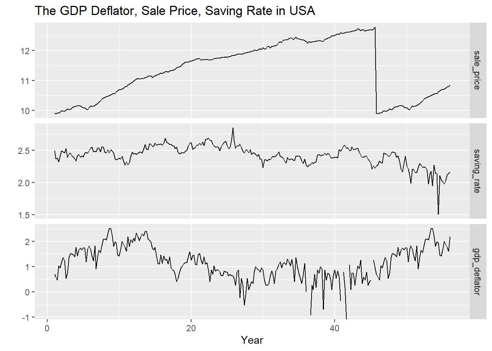
Finding out the best p:
Code
VARselect(dd3[, c(2:4)], lag.max=10, type="both")$selection
AIC(n) HQ(n) SC(n) FPE(n)
3 1 1 3
$criteria
1 2 3 4 5
AIC(n) 1.398087e+01 1.398082e+01 1.391871e+01 1.393094e+01 1.395240e+01
HQ(n) 1.406205e+01 1.411071e+01 1.409731e+01 1.415825e+01 1.422842e+01
SC(n) 1.418295e+01 1.430414e+01 1.436328e+01 1.449676e+01 1.463946e+01
FPE(n) 1.179834e+06 1.179822e+06 1.108866e+06 1.122687e+06 1.147305e+06
6 7 8 9 10
AIC(n) 1.398304e+01 1.403364e+01 1.406570e+01 1.408240e+01 1.412592e+01
HQ(n) 1.430777e+01 1.440708e+01 1.448785e+01 1.455325e+01 1.464549e+01
SC(n) 1.479134e+01 1.496320e+01 1.511650e+01 1.525444e+01 1.541922e+01
FPE(n) 1.183385e+06 1.245368e+06 1.286686e+06 1.309306e+06 1.368790e+06From the results, we can see that 3,4 have relatively smaller criterias: We can fit several models with p=1, 3, and 4.=> VAR(1), VAR(3), VAR(4)
Fitting a VAR model with different p:
Code
summary(vars::VAR(dd3[, c(2:4)], p=1, type='both'))
VAR Estimation Results:
=========================
Endogenous variables: saving_rate, gdp_deflator, date
Deterministic variables: both
Sample size: 275
Log Likelihood: -3075.874
Roots of the characteristic polynomial:
0.9816 0.8407 0.7771
Call:
vars::VAR(y = dd3[, c(2:4)], p = 1, type = "both")
Estimation results for equation saving_rate:
============================================
saving_rate = saving_rate.l1 + gdp_deflator.l1 + date.l1 + const + trend
Estimate Std. Error t value Pr(>|t|)
saving_rate.l1 8.296e-01 3.447e-02 24.070 < 2e-16 ***
gdp_deflator.l1 -1.619e-02 2.129e-02 -0.761 0.44760
date.l1 9.867e-06 9.057e-06 1.089 0.27692
const 2.241e+00 4.772e-01 4.696 4.23e-06 ***
trend -2.320e-03 7.247e-04 -3.202 0.00153 **
---
Signif. codes: 0 '***' 0.001 '**' 0.01 '*' 0.05 '.' 0.1 ' ' 1
Residual standard error: 0.7166 on 270 degrees of freedom
Multiple R-Squared: 0.8099, Adjusted R-squared: 0.807
F-statistic: 287.5 on 4 and 270 DF, p-value: < 2.2e-16
Estimation results for equation gdp_deflator:
=============================================
gdp_deflator = saving_rate.l1 + gdp_deflator.l1 + date.l1 + const + trend
Estimate Std. Error t value Pr(>|t|)
saving_rate.l1 -8.763e-02 5.740e-02 -1.527 0.12803
gdp_deflator.l1 8.022e-01 3.545e-02 22.625 < 2e-16 ***
date.l1 -4.714e-05 1.508e-05 -3.126 0.00197 **
const 2.191e+00 7.946e-01 2.757 0.00623 **
trend -7.055e-04 1.207e-03 -0.585 0.55934
---
Signif. codes: 0 '***' 0.001 '**' 0.01 '*' 0.05 '.' 0.1 ' ' 1
Residual standard error: 1.193 on 270 degrees of freedom
Multiple R-Squared: 0.7827, Adjusted R-squared: 0.7795
F-statistic: 243.1 on 4 and 270 DF, p-value: < 2.2e-16
Estimation results for equation date:
=====================================
date = saving_rate.l1 + gdp_deflator.l1 + date.l1 + const + trend
Estimate Std. Error t value Pr(>|t|)
saving_rate.l1 90.19249 59.02459 1.528 0.128
gdp_deflator.l1 -16.61672 36.45826 -0.456 0.649
date.l1 0.96759 0.01551 62.390 <2e-16 ***
const -811.20104 817.15553 -0.993 0.322
trend 0.63544 1.24101 0.512 0.609
---
Signif. codes: 0 '***' 0.001 '**' 0.01 '*' 0.05 '.' 0.1 ' ' 1
Residual standard error: 1227 on 270 degrees of freedom
Multiple R-Squared: 0.961, Adjusted R-squared: 0.9605
F-statistic: 1665 on 4 and 270 DF, p-value: < 2.2e-16
Covariance matrix of residuals:
saving_rate gdp_deflator date
saving_rate 0.513560 -0.007928 -8.194e+00
gdp_deflator -0.007928 1.424116 3.316e+01
date -8.193763 33.159659 1.506e+06
Correlation matrix of residuals:
saving_rate gdp_deflator date
saving_rate 1.000000 -0.009271 -0.009317
gdp_deflator -0.009271 1.000000 0.022643
date -0.009317 0.022643 1.000000Code
summary(vars::VAR(dd3[, c(2:4)], p=3, type='both'))
VAR Estimation Results:
=========================
Endogenous variables: saving_rate, gdp_deflator, date
Deterministic variables: both
Sample size: 273
Log Likelihood: -3025.413
Roots of the characteristic polynomial:
0.9806 0.9118 0.8704 0.4113 0.4113 0.3397 0.3397 0.2947 0.2947
Call:
vars::VAR(y = dd3[, c(2:4)], p = 3, type = "both")
Estimation results for equation saving_rate:
============================================
saving_rate = saving_rate.l1 + gdp_deflator.l1 + date.l1 + saving_rate.l2 + gdp_deflator.l2 + date.l2 + saving_rate.l3 + gdp_deflator.l3 + date.l3 + const + trend
Estimate Std. Error t value Pr(>|t|)
saving_rate.l1 6.770e-01 6.060e-02 11.172 < 2e-16 ***
gdp_deflator.l1 -1.671e-02 3.692e-02 -0.452 0.651324
date.l1 -4.871e-06 3.464e-05 -0.141 0.888274
saving_rate.l2 9.846e-02 7.264e-02 1.356 0.176419
gdp_deflator.l2 8.798e-02 4.378e-02 2.010 0.045496 *
date.l2 -2.431e-05 4.825e-05 -0.504 0.614747
saving_rate.l3 9.630e-02 6.066e-02 1.588 0.113581
gdp_deflator.l3 -9.371e-02 3.629e-02 -2.582 0.010364 *
date.l3 3.352e-05 3.475e-05 0.965 0.335646
const 1.786e+00 5.123e-01 3.487 0.000573 ***
trend -2.034e-03 7.360e-04 -2.763 0.006128 **
---
Signif. codes: 0 '***' 0.001 '**' 0.01 '*' 0.05 '.' 0.1 ' ' 1
Residual standard error: 0.6969 on 262 degrees of freedom
Multiple R-Squared: 0.8253, Adjusted R-squared: 0.8187
F-statistic: 123.8 on 10 and 262 DF, p-value: < 2.2e-16
Estimation results for equation gdp_deflator:
=============================================
gdp_deflator = saving_rate.l1 + gdp_deflator.l1 + date.l1 + saving_rate.l2 + gdp_deflator.l2 + date.l2 + saving_rate.l3 + gdp_deflator.l3 + date.l3 + const + trend
Estimate Std. Error t value Pr(>|t|)
saving_rate.l1 -2.610e-03 1.015e-01 -0.026 0.97949
gdp_deflator.l1 6.218e-01 6.182e-02 10.059 < 2e-16 ***
date.l1 2.358e-05 5.799e-05 0.407 0.68463
saving_rate.l2 -1.154e-01 1.216e-01 -0.949 0.34333
gdp_deflator.l2 4.379e-02 7.330e-02 0.597 0.55073
date.l2 -7.619e-06 8.078e-05 -0.094 0.92493
saving_rate.l3 6.686e-03 1.016e-01 0.066 0.94756
gdp_deflator.l3 1.687e-01 6.076e-02 2.776 0.00591 **
date.l3 -5.886e-05 5.817e-05 -1.012 0.31256
const 2.347e+00 8.578e-01 2.736 0.00663 **
trend -8.907e-04 1.232e-03 -0.723 0.47040
---
Signif. codes: 0 '***' 0.001 '**' 0.01 '*' 0.05 '.' 0.1 ' ' 1
Residual standard error: 1.167 on 262 degrees of freedom
Multiple R-Squared: 0.7974, Adjusted R-squared: 0.7897
F-statistic: 103.1 on 10 and 262 DF, p-value: < 2.2e-16
Estimation results for equation date:
=====================================
date = saving_rate.l1 + gdp_deflator.l1 + date.l1 + saving_rate.l2 + gdp_deflator.l2 + date.l2 + saving_rate.l3 + gdp_deflator.l3 + date.l3 + const + trend
Estimate Std. Error t value Pr(>|t|)
saving_rate.l1 5.357e+01 1.048e+02 0.511 0.60968
gdp_deflator.l1 -7.718e+00 6.386e+01 -0.121 0.90389
date.l1 9.861e-01 5.990e-02 16.464 < 2e-16 ***
saving_rate.l2 -5.835e+01 1.256e+02 -0.464 0.64269
gdp_deflator.l2 -2.332e+02 7.571e+01 -3.080 0.00229 **
date.l2 -7.233e-03 8.344e-02 -0.087 0.93099
saving_rate.l3 1.095e+02 1.049e+02 1.044 0.29752
gdp_deflator.l3 2.502e+02 6.276e+01 3.987 8.69e-05 ***
date.l3 -8.317e-03 6.009e-02 -0.138 0.89003
const -1.124e+03 8.860e+02 -1.269 0.20574
trend 8.568e-01 1.273e+00 0.673 0.50141
---
Signif. codes: 0 '***' 0.001 '**' 0.01 '*' 0.05 '.' 0.1 ' ' 1
Residual standard error: 1205 on 262 degrees of freedom
Multiple R-Squared: 0.963, Adjusted R-squared: 0.9616
F-statistic: 681.9 on 10 and 262 DF, p-value: < 2.2e-16
Covariance matrix of residuals:
saving_rate gdp_deflator date
saving_rate 0.48565 0.01418 20.31
gdp_deflator 0.01418 1.36133 -14.92
date 20.30792 -14.91718 1452449.04
Correlation matrix of residuals:
saving_rate gdp_deflator date
saving_rate 1.00000 0.01744 0.02418
gdp_deflator 0.01744 1.00000 -0.01061
date 0.02418 -0.01061 1.00000Code
summary(vars::VAR(dd3[, c(2:4)], p=4, type='both'))
VAR Estimation Results:
=========================
Endogenous variables: saving_rate, gdp_deflator, date
Deterministic variables: both
Sample size: 272
Log Likelihood: -3007.166
Roots of the characteristic polynomial:
0.9868 0.9304 0.8686 0.5835 0.5835 0.5395 0.4834 0.4834 0.416 0.416 0.1904 0.1904
Call:
vars::VAR(y = dd3[, c(2:4)], p = 4, type = "both")
Estimation results for equation saving_rate:
============================================
saving_rate = saving_rate.l1 + gdp_deflator.l1 + date.l1 + saving_rate.l2 + gdp_deflator.l2 + date.l2 + saving_rate.l3 + gdp_deflator.l3 + date.l3 + saving_rate.l4 + gdp_deflator.l4 + date.l4 + const + trend
Estimate Std. Error t value Pr(>|t|)
saving_rate.l1 6.421e-01 6.088e-02 10.546 < 2e-16 ***
gdp_deflator.l1 -1.304e-02 3.695e-02 -0.353 0.72434
date.l1 1.551e-06 3.519e-05 0.044 0.96487
saving_rate.l2 8.610e-02 7.251e-02 1.187 0.23615
gdp_deflator.l2 9.791e-02 4.326e-02 2.263 0.02444 *
date.l2 -3.474e-05 4.867e-05 -0.714 0.47604
saving_rate.l3 -4.977e-03 7.196e-02 -0.069 0.94491
gdp_deflator.l3 -5.673e-02 4.425e-02 -1.282 0.20102
date.l3 2.894e-05 4.753e-05 0.609 0.54317
saving_rate.l4 1.658e-01 6.035e-02 2.747 0.00645 **
gdp_deflator.l4 -5.754e-02 3.783e-02 -1.521 0.12943
date.l4 5.146e-06 3.435e-05 0.150 0.88102
const 1.631e+00 5.249e-01 3.108 0.00210 **
trend -1.970e-03 7.385e-04 -2.668 0.00811 **
---
Signif. codes: 0 '***' 0.001 '**' 0.01 '*' 0.05 '.' 0.1 ' ' 1
Residual standard error: 0.6861 on 258 degrees of freedom
Multiple R-Squared: 0.833, Adjusted R-squared: 0.8245
F-statistic: 98.96 on 13 and 258 DF, p-value: < 2.2e-16
Estimation results for equation gdp_deflator:
=============================================
gdp_deflator = saving_rate.l1 + gdp_deflator.l1 + date.l1 + saving_rate.l2 + gdp_deflator.l2 + date.l2 + saving_rate.l3 + gdp_deflator.l3 + date.l3 + saving_rate.l4 + gdp_deflator.l4 + date.l4 + const + trend
Estimate Std. Error t value Pr(>|t|)
saving_rate.l1 1.883e-02 1.041e-01 0.181 0.85656
gdp_deflator.l1 6.149e-01 6.315e-02 9.738 < 2e-16 ***
date.l1 1.349e-05 6.014e-05 0.224 0.82265
saving_rate.l2 -1.195e-01 1.239e-01 -0.964 0.33594
gdp_deflator.l2 3.769e-02 7.393e-02 0.510 0.61066
date.l2 5.842e-06 8.318e-05 0.070 0.94406
saving_rate.l3 5.427e-02 1.230e-01 0.441 0.65940
gdp_deflator.l3 1.298e-01 7.563e-02 1.716 0.08737 .
date.l3 -6.911e-05 8.124e-05 -0.851 0.39568
saving_rate.l4 -7.248e-02 1.031e-01 -0.703 0.48287
gdp_deflator.l4 5.796e-02 6.465e-02 0.896 0.37084
date.l4 8.775e-06 5.870e-05 0.149 0.88128
const 2.407e+00 8.971e-01 2.683 0.00776 **
trend -9.482e-04 1.262e-03 -0.751 0.45319
---
Signif. codes: 0 '***' 0.001 '**' 0.01 '*' 0.05 '.' 0.1 ' ' 1
Residual standard error: 1.173 on 258 degrees of freedom
Multiple R-Squared: 0.7984, Adjusted R-squared: 0.7882
F-statistic: 78.58 on 13 and 258 DF, p-value: < 2.2e-16
Estimation results for equation date:
=====================================
date = saving_rate.l1 + gdp_deflator.l1 + date.l1 + saving_rate.l2 + gdp_deflator.l2 + date.l2 + saving_rate.l3 + gdp_deflator.l3 + date.l3 + saving_rate.l4 + gdp_deflator.l4 + date.l4 + const + trend
Estimate Std. Error t value Pr(>|t|)
saving_rate.l1 3.404e+01 1.071e+02 0.318 0.75097
gdp_deflator.l1 8.281e+00 6.502e+01 0.127 0.89876
date.l1 1.012e+00 6.192e-02 16.340 < 2e-16 ***
saving_rate.l2 -3.016e+01 1.276e+02 -0.236 0.81334
gdp_deflator.l2 -2.322e+02 7.613e+01 -3.050 0.00253 **
date.l2 -3.837e-02 8.566e-02 -0.448 0.65459
saving_rate.l3 1.588e+02 1.266e+02 1.254 0.21100
gdp_deflator.l3 3.224e+02 7.788e+01 4.140 4.7e-05 ***
date.l3 2.568e-03 8.365e-02 0.031 0.97553
saving_rate.l4 -7.421e+01 1.062e+02 -0.699 0.48533
gdp_deflator.l4 -1.040e+02 6.657e+01 -1.562 0.11947
date.l4 -6.418e-03 6.044e-02 -0.106 0.91552
const -8.460e+02 9.237e+02 -0.916 0.36063
trend 6.347e-01 1.300e+00 0.488 0.62569
---
Signif. codes: 0 '***' 0.001 '**' 0.01 '*' 0.05 '.' 0.1 ' ' 1
Residual standard error: 1208 on 258 degrees of freedom
Multiple R-Squared: 0.9632, Adjusted R-squared: 0.9613
F-statistic: 518.9 on 13 and 258 DF, p-value: < 2.2e-16
Covariance matrix of residuals:
saving_rate gdp_deflator date
saving_rate 0.47080 0.02528 1.839e+01
gdp_deflator 0.02528 1.37521 -9.918e+00
date 18.38808 -9.91797 1.458e+06
Correlation matrix of residuals:
saving_rate gdp_deflator date
saving_rate 1.00000 0.031413 0.022193
gdp_deflator 0.03141 1.000000 -0.007004
date 0.02219 -0.007004 1.000000We can see that some models have some variables significant but not all. We will keep the variables and make comparison in the next steps to get the better one.
Cross Validations
Define length
Code
n=length(dd3$gdp_deflator)
k=85 #19*4
n*0.3[1] 82.8Code
dat = ts(dd3[,c(1,2,3)])Cross Validation For gdp deflator
Code
i=1
err1 = c()
err2 = c()
for(i in 1:(n-k))
{
xtrain <- dat[,c(3)][1:(k-1)+i]
xtest <- dat[,c(3)][k+i]
fit <- vars::VAR(dat, p=3, type='both')
fcast1 <- forecast(fit, h=4)
fcast1 = predict(fit, n.ahead = 12, ci = 0.95)
fit2 <- vars::VAR(dat, p=4, type='both')
fcast2 <- forecast(fit2, h=4)
fcast2 = predict(fit2, n.ahead = 12, ci = 0.95)
#capture error for each iteration
# This is RMSE
err1 = c(err1, sqrt((fcast1$fcst$gdp_deflator-xtest)^2))
err2 = c(err2, sqrt((fcast2$fcst$gdp_deflator-xtest)^2))
}Normalize the RMSE For Ploting
Code
# Normalize function
normalize <- function(x) {
return((x - min(x)) / (max(x) - min(x)))
}
# Normalize e1 and e2
normalized_e1 <- normalize(err1)
normalized_e2 <- normalize(err2)
e <- 0.03
# Set the background color of the plot region to #E0E0E0
par(bg = "#E0E0E0")
# Plot the normalized e1 with a red line
plot(normalized_e1+ e, type="l", col="red", ylim=range(c(normalized_e1, normalized_e2 + e)), xlab="Index", ylab="Normalized Values", main="Normalized RMSE Plot of e1 and e2 For GDP Deflator")
# Add the normalized e2 with an offset and a blue line
lines(normalized_e2 , type="l", col="blue")
# Add a legend to distinguish the lines
legend("topright", legend=c("e1", "e2"), col=c("red", "blue"), lty=1, cex=0.8)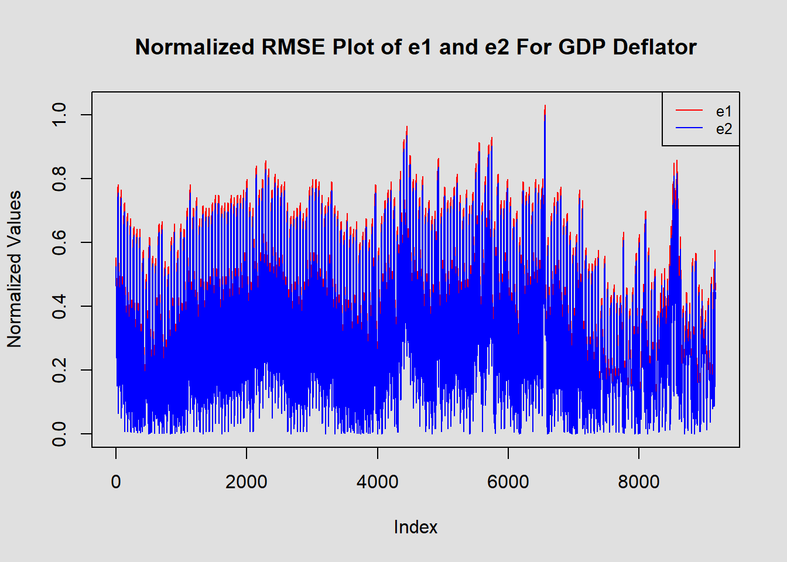
Compare the errors
Code
error1 <- as.numeric(err1)
error1 <- error1[!is.na(error1) & !is.nan(error1)]
error1 <- mean(error1)
error2 <- as.numeric(err2)
error2 <- error2[!is.na(error2) & !is.nan(error2)]
error2 <- mean(error2)
error1[1] 3.802198Code
error2[1] 3.871752The first one is better but not too different for GDP Deflator
Cross Validation For Saving rate
Code
i=1
err1 = c()
err2 = c()
for(i in 1:(n-k))
{
xtrain <- dat[,c(2)][1:(k-1)+i]
xtest <- dat[,c(2)][k+i]
fit <- vars::VAR(dat, p=3, type='both')
fcast1 <- forecast(fit, h=4)
fcast1 = predict(fit, n.ahead = 12, ci = 0.95)
fit2 <- vars::VAR(dat, p=4, type='both')
fcast2 <- forecast(fit2, h=4)
fcast2 = predict(fit2, n.ahead = 12, ci = 0.95)
#capture error for each iteration
# This is RMSE
err1 = c(err1, sqrt((fcast1$fcst$saving_rate-xtest)^2))
err2 = c(err2, sqrt((fcast2$fcst$saving_rate-xtest)^2))
}Normalize the errors for ploting
Code
# Normalize function
normalize <- function(x) {
return((x - min(x)) / (max(x) - min(x)))
}
# Normalize e1 and e2
normalized_e1 <- normalize(err1)
normalized_e2 <- normalize(err2)
e <- 0.03
# Set the background color of the plot region to #E0E0E0
par(bg = "#E0E0E0")
# Plot the normalized e1 with a red line
plot(normalized_e1, type="l", col="red", ylim=range(c(normalized_e1, normalized_e2 + e)), xlab="Index", ylab="Normalized Values", main="Normalized RMSE Plot of e1 and e2 For Saving Rate")
# Add the normalized e2 with an offset and a blue line
lines(normalized_e2 + e, type="l", col="blue")
# Add a legend to distinguish the lines
legend("topright", legend=c("e1", "e2"), col=c("red", "blue"), lty=1, cex=0.8)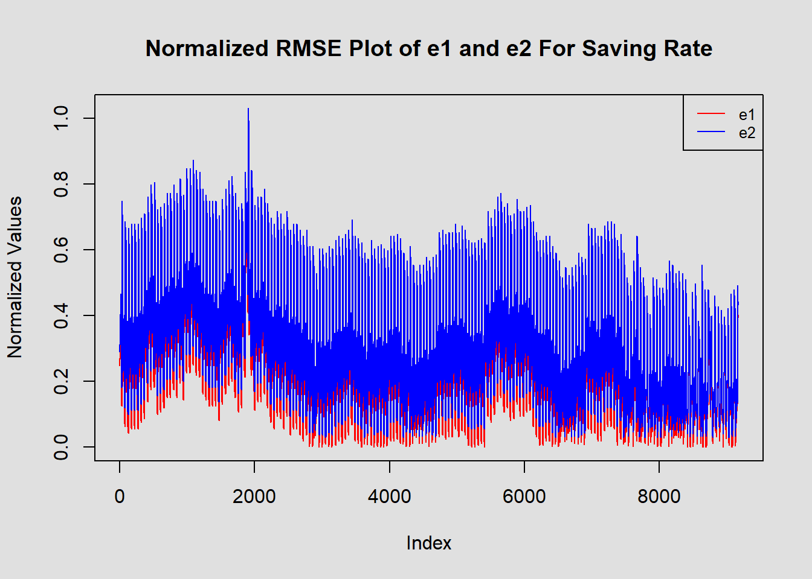
Compare errors
Let us reorganize the errors
Code
error1 <- as.numeric(err1)
error1 <- error1[!is.na(error1) & !is.nan(error1)]
error1 <- mean(error1)
error2 <- as.numeric(err2)
error2 <- error2[!is.na(error2) & !is.nan(error2)]
error2 <- mean(error2)
error1[1] 4.48152Code
error2[1] 4.607221The first one is also better for saving rate
Cross Validation For Sale price
Code
i=1
err1 = c()
err2 = c()
for(i in 1:(n-k))
{
xtrain <- dat[,c(1)][1:(k-1)+i]
xtest <- dat[,c(1)][k+i]
fit <- vars::VAR(dat, p=3, type='both')
fcast1 <- forecast(fit, h=4)
fcast1 = predict(fit, n.ahead = 12, ci = 0.95)
fit2 <- vars::VAR(dat, p=4, type='both')
fcast2 <- forecast(fit2, h=4)
fcast2 = predict(fit2, n.ahead = 12, ci = 0.95)
#capture error for each iteration
# This is RMSE
err1 = c(err1, sqrt((fcast1$fcst$sale_price-xtest)^2))
err2 = c(err2, sqrt((fcast2$fcst$sale_price-xtest)^2))
}Normalize The Errors
Code
# Normalize function
normalize <- function(x) {
return((x - min(x)) / (max(x) - min(x)))
}
# Normalize e1 and e2
normalized_e1 <- normalize(err1)
normalized_e2 <- normalize(err2)
e <- 0.03
# Set the background color of the plot region to #E0E0E0
par(bg = "#E0E0E0")
# Plot the normalized e1 with a red line
plot(normalized_e1, type="l", col="red", ylim=range(c(normalized_e1, normalized_e2 + e)), xlab="Index", ylab="Normalized Values", main="Normalized RMSE Plot of e1 and e2 For Sale Price")
# Add the normalized e2 with an offset and a blue line
lines(normalized_e2 + e, type="l", col="blue")
# Add a legend to distinguish the lines
legend("topright", legend=c("e1", "e2"), col=c("red", "blue"), lty=1, cex=0.8)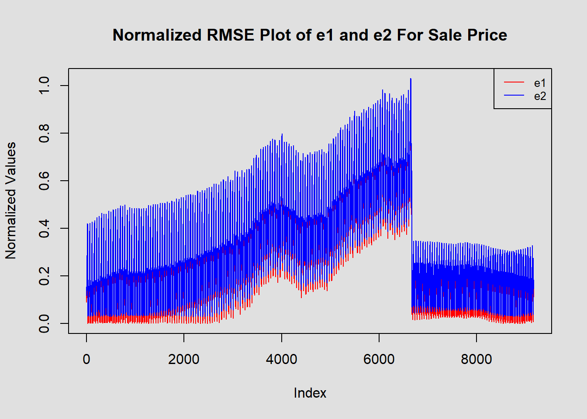
Compare The Errors
Code
error1 <- as.numeric(err1)
error1 <- error1[!is.na(error1) & !is.nan(error1)]
error1 <- mean(error1)
error2 <- as.numeric(err2)
error2 <- error2[!is.na(error2) & !is.nan(error2)]
error2 <- mean(error2)
error1[1] 125445.5Code
error2[1] 125987.7Overall, we can see that in my case, all variables have smaller RMSE with VAR(3)
Forecasting
Forecast using the best one which is VAR(3)
Code
fit1 <- vars::VAR(dat[,1:3], p=3, type="const")
fcast1 = predict(fit1, n.ahead = 8, ci = 0.95)
fcast1$fcst$gdp_deflator fcst lower upper CI
[1,] 7.894615 5.607798 10.181432 2.286817
[2,] 7.282398 4.582903 9.981893 2.699495
[3,] 7.492970 4.611125 10.374815 2.881845
[4,] 7.372062 4.294439 10.449686 3.077623
[5,] 7.295611 4.073932 10.517289 3.221678
[6,] 7.253375 3.915601 10.591150 3.337774
[7,] 7.186365 3.748134 10.624597 3.438231
[8,] 7.131866 3.607845 10.655887 3.524021Check Corresponind Forecasting
Code
fcast1$fcst$sale_price fcst lower upper CI
[1,] 52039.84 11740.19 92339.49 40299.65
[2,] 34492.15 -20395.42 89379.73 54887.58
[3,] 38522.27 -27352.88 104397.41 65875.14
[4,] 39360.19 -35082.57 113802.95 74442.76
[5,] 37722.35 -44022.64 119467.33 81744.99
[6,] 37462.86 -50890.48 125816.19 88353.33
[7,] 36986.76 -57304.47 131277.99 94291.23
[8,] 36584.86 -63106.89 136276.61 99691.75Code
fcast1$fcst$saving_rate fcst lower upper CI
[1,] 8.674407 7.292309 10.05651 1.382098
[2,] 9.136267 7.444615 10.82792 1.691652
[3,] 9.041880 7.142789 10.94097 1.899091
[4,] 9.091204 7.003047 11.17936 2.088156
[5,] 9.210690 6.970091 11.45129 2.240599
[6,] 9.265283 6.897064 11.63350 2.368219
[7,] 9.332344 6.853394 11.81129 2.478950
[8,] 9.401929 6.826736 11.97712 2.575193Forecast Results
Code
forecast(fit1,48) %>%
autoplot() + xlab("Year")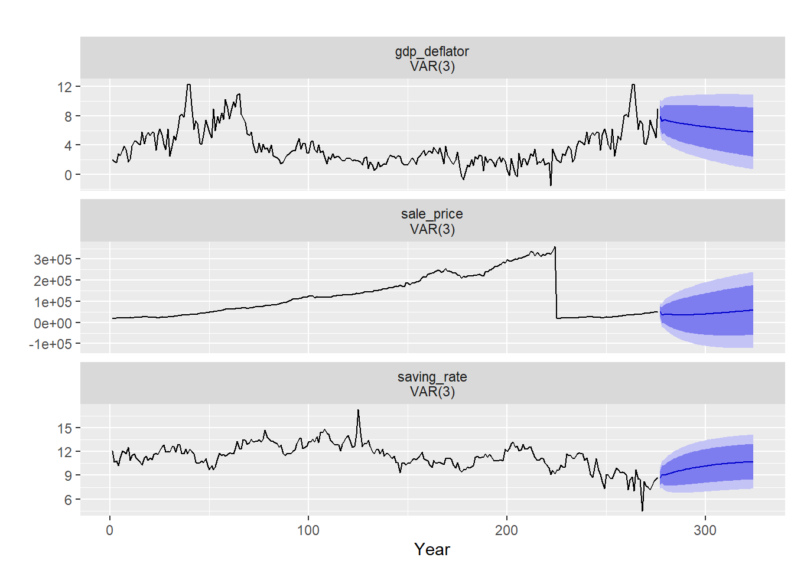
Based on the forecast, we can see that the model has help us forecast for each variable, for gdp deflator, and sale price, and saving rate, due to the model lacks of seasonal patterns, it did not capture the fluctuations very will. However, the forecast did capture the overall trends correctly.
4. (ARIMAX) GINI Index ~ Household Income + Household Saving + Sale Price
Prepare the Variables
Code
# Define start and end dates
start_date <- as.Date("1992-01-01")
end_date <- as.Date("2020-12-31")
# Subset data frames to include only data
df1_sub <- subset(df1, DATE >= start_date & DATE <= end_date)
df4_sub <- subset(df4, DATE >= start_date & DATE <= end_date)
df2_sub <- subset(df2, DATE >= start_date & DATE <= end_date)
df3_sub <- subset(df3, DATE >= start_date & DATE <= end_date)
# Assuming the data is annual for this example. If it's quarterly, you'd use frequency = 4; if monthly, frequency = 12.
frequency <- 1
# Create ts objects
saving <- ts(df1_sub$W398RC1A027NBEA, start = c(1992, 1), end = c(2020, 1), frequency = frequency)
income <- ts(df2_sub$MEHOINUSA672N, start = c(1992, 1), end = c(2020, 1), frequency = frequency)
sale <- ts(df3_sub$MSPUS, start = c(1992, 1), end = c(2020, 1), frequency = frequency)
gini <- ts(df4_sub$SIPOVGINIUSA, start = c(1992, 1), end = c(2020, 1), frequency = frequency)Combine the Variables
Code
dd1<-data.frame(gini,saving,income,sale,df1_sub$DATE)
colnames(dd1)<-c("gini","saving","income",'sale','date')
dd1$gini <- ts(as.numeric(dd1$gini))
knitr::kable(head(dd1))| gini | saving | income | sale | date |
|---|---|---|---|---|
| 38.4 | 431.693 | 58153 | 119500 | 1992-01-01 |
| 40.4 | 377.899 | 57843 | 120000 | 1993-01-01 |
| 40.0 | 345.198 | 58515 | 120000 | 1994-01-01 |
| 39.9 | 366.774 | 60348 | 126000 | 1995-01-01 |
| 40.3 | 353.639 | 61225 | 125000 | 1996-01-01 |
| 40.5 | 339.566 | 62484 | 127000 | 1997-01-01 |
Code
lg.dd1 <- data.frame("date" =dd1$date,"gini"=log(dd1$gini),"saving"=log(dd1$saving),
"income"=log(dd1$income),"sale"=log(dd1$sale))
#### converting to time series component #########
lg.dd.ts1<-ts(lg.dd1,frequency = 4)
##### Facet Plot #######################
autoplot(lg.dd.ts1[,c(2:5)], facets=TRUE) +
xlab("Year") + ylab("") +
ggtitle("The Household Prices in USA")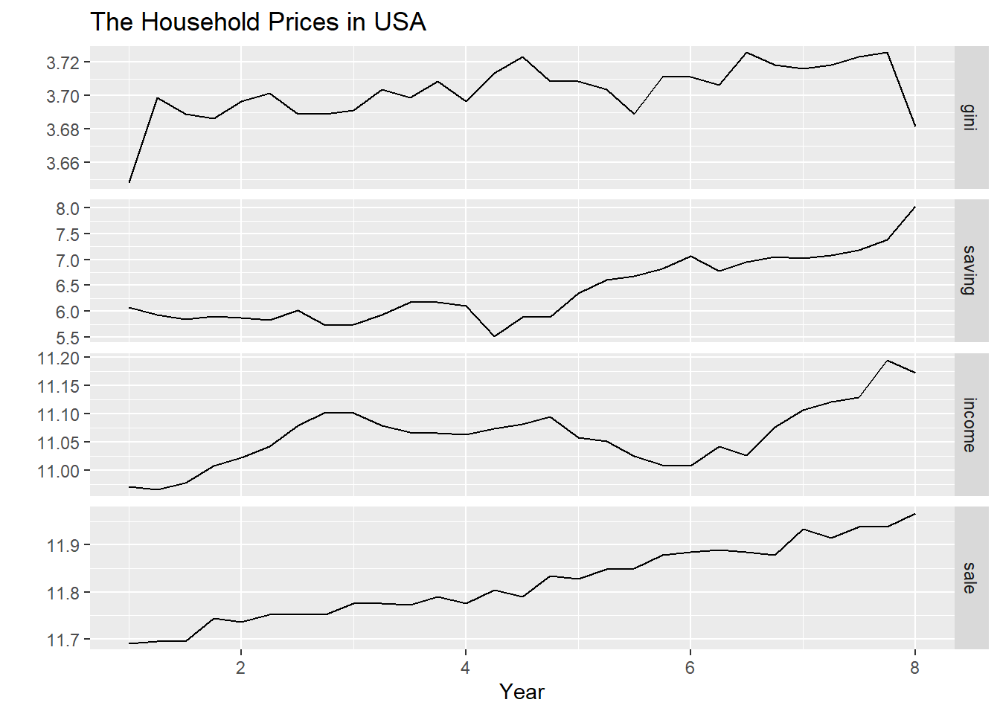
Auto Fit the Model
Code
xreg1 <- cbind(saving = lg.dd.ts1[, "saving"],
income = lg.dd.ts1[, "income"],
sale = lg.dd.ts1[, "sale"])
fit1 <- auto.arima(lg.dd.ts1[, "gini"], xreg = xreg1)
summary(fit1)Series: lg.dd.ts1[, "gini"]
Regression with ARIMA(0,0,0) errors
Coefficients:
saving income sale
-0.0304 -0.0279 0.3559
s.e. 0.0052 0.0516 0.0503
sigma^2 = 0.0001483: log likelihood = 88.27
AIC=-168.54 AICc=-166.87 BIC=-163.07
Training set error measures:
ME RMSE MAE MPE MAPE
Training set 6.9935e-06 0.01153159 0.009483874 -0.0005959199 0.2563307
MASE ACF1
Training set 0.7926458 -0.2180884Manual Fit The Model
Code
fit.reg1 <- lm( gini ~ saving+ income + sale, data=lg.dd.ts1)
summary(fit.reg1)
Call:
lm(formula = gini ~ saving + income + sale, data = lg.dd.ts1)
Residuals:
Min 1Q Median 3Q Max
-0.026995 -0.007527 0.001984 0.005942 0.019001
Coefficients:
Estimate Std. Error t value Pr(>|t|)
(Intercept) 0.660654 0.696434 0.949 0.351892
saving -0.024639 0.008162 -3.019 0.005773 **
income -0.039670 0.055946 -0.709 0.484839
sale 0.307851 0.073432 4.192 0.000302 ***
---
Signif. codes: 0 '***' 0.001 '**' 0.01 '*' 0.05 '.' 0.1 ' ' 1
Residual standard error: 0.0122 on 25 degrees of freedom
Multiple R-squared: 0.5148, Adjusted R-squared: 0.4566
F-statistic: 8.842 on 3 and 25 DF, p-value: 0.0003612We can see that the sale and saving are pretty significant. For income, it seems that it does not provide too much impact. We can consider to remove it
Manual Fit Again
Code
fit.reg1 <- lm( gini ~ saving+ sale, data=lg.dd.ts1)
summary(fit.reg1)
Call:
lm(formula = gini ~ saving + sale, data = lg.dd.ts1)
Residuals:
Min 1Q Median 3Q Max
-0.026489 -0.006684 0.002481 0.005509 0.020068
Coefficients:
Estimate Std. Error t value Pr(>|t|)
(Intercept) 0.551544 0.672696 0.820 0.41973
saving -0.022918 0.007718 -2.969 0.00634 **
sale 0.279022 0.060561 4.607 9.48e-05 ***
---
Signif. codes: 0 '***' 0.001 '**' 0.01 '*' 0.05 '.' 0.1 ' ' 1
Residual standard error: 0.01208 on 26 degrees of freedom
Multiple R-squared: 0.5051, Adjusted R-squared: 0.467
F-statistic: 13.27 on 2 and 26 DF, p-value: 0.000107Check Residuals
Code
checkresiduals(fit1)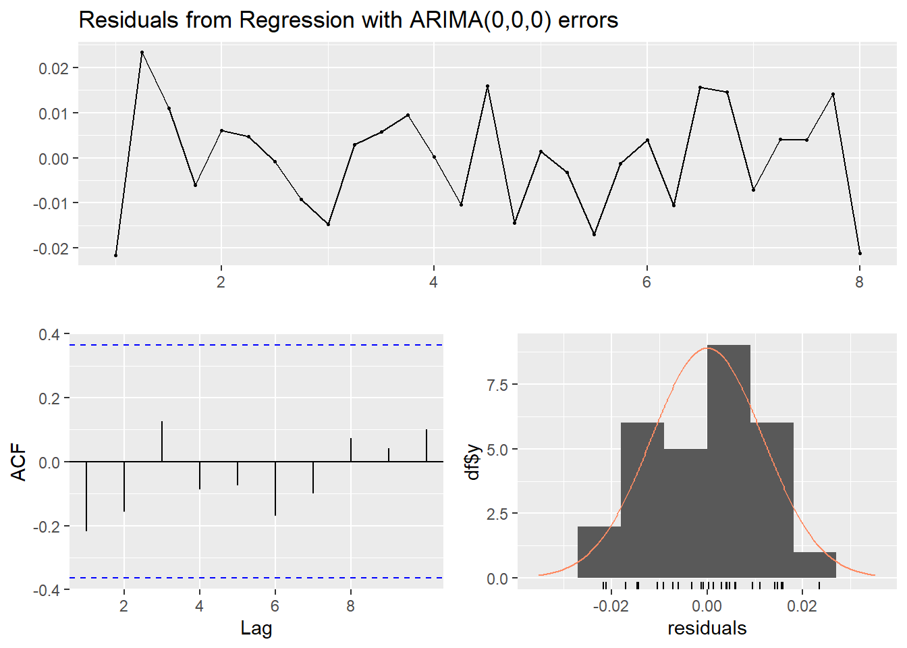
Ljung-Box test
data: Residuals from Regression with ARIMA(0,0,0) errors
Q* = 4.509, df = 6, p-value = 0.6081
Model df: 0. Total lags used: 6Based on the output, there’s no indication that seasonal terms are being used and the datasets did not have too much seasonal pattern. Therefore, this is an ARIMAX model.
Check ACF and PACF
Code
########### Converting to Time Series component #######
res.fit1<-ts(residuals(fit.reg1),frequency = 4)
############## Then look at the residuals ############
ggAcf(res.fit1)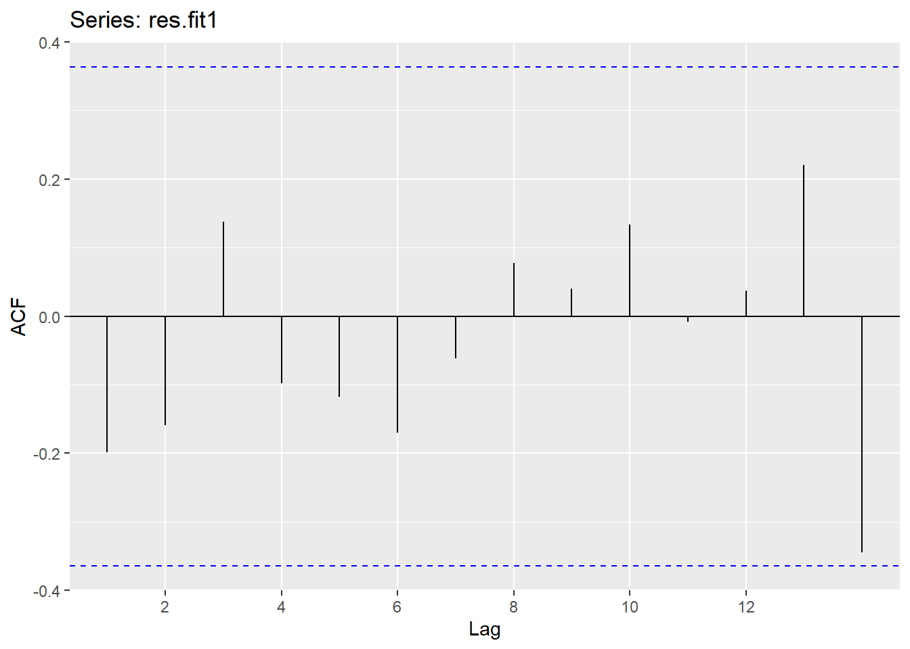
Code
ggPacf(res.fit1)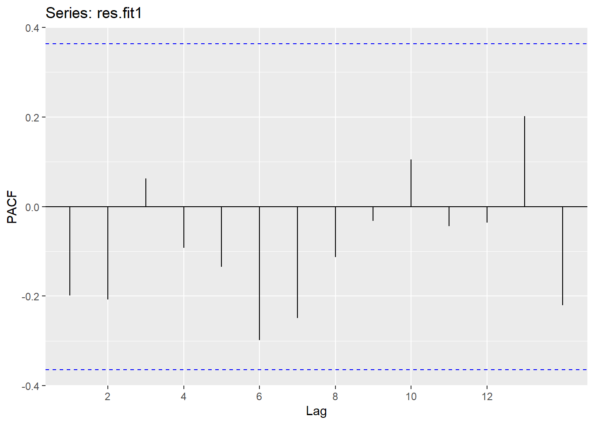
Since there is no major seasonal pattern. And the dataset is stationary, We can actually use it as it is
NO Need To Differencing
Code
# Extract the ACF and PACF plots without the theme
acf_plot <- ggAcf(res.fit1) +
labs(title = "ACF ") +
theme(
panel.background = element_rect(fill = "#E0E0E0", color = "#E0E0E0"),
plot.background = element_rect(fill = "#E0E0E0", color = "#E0E0E0")
)
pacf_plot <- ggPacf(res.fit1) +
labs(title = "PACF ") +
theme(
panel.background = element_rect(fill = "#E0E0E0", color = "#E0E0E0"),
plot.background = element_rect(fill = "#E0E0E0", color = "#E0E0E0")
)
# Combine the plots
grid.arrange(acf_plot, pacf_plot, ncol = 1) 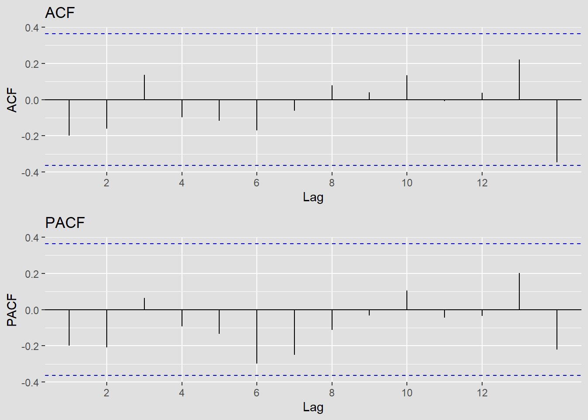
Now, it is stationary for us to continue
From ACF and PACF, although there are not too many spikes and seasonal patterns, it seems that we can still consider: p = 1,2 q = 1,2. We use d = 0. There is no major seasonal pattern, therefore, no P,Q,D in this case.
Model Diagnotistics
Finding the model parameters.
Code
d=0
i=1
temp= data.frame()
ls=matrix(rep(NA,6*70),nrow=70)
for (p in 1:5)# p=1,2,3 : 3
{
for(q in 1:5)# q=1,2,3,4 :4
{
for(d in 1:3)# d=1,2 :2
{
if(p-1+d+q-1<=8) #usual threshold
{
model<- Arima(res.fit1,order=c(p-1,d-1,q-1),include.drift=TRUE)
ls[i,]= c(p-1,d-1,q-1,model$aic,model$bic,model$aicc)
i=i+1
#print(i)
}
}
}
}
temp= as.data.frame(ls)
names(temp)= c("p","d","q","AIC","BIC","AICc")
#temp
knitr::kable(temp)| p | d | q | AIC | BIC | AICc |
|---|---|---|---|---|---|
| 0 | 0 | 0 | -171.1425 | -167.0406 | -170.1825 |
| 0 | 1 | 0 | -145.8315 | -143.1671 | -145.3515 |
| 0 | 2 | 0 | -120.2833 | -118.9874 | -120.1233 |
| 0 | 0 | 1 | -172.1225 | -166.6533 | -170.4559 |
| 0 | 1 | 1 | -160.6843 | -156.6877 | -159.6843 |
| 0 | 2 | 1 | -136.1663 | -133.5746 | -135.6663 |
| 0 | 0 | 2 | -175.6608 | -168.8243 | -173.0521 |
| 0 | 1 | 2 | -160.6057 | -155.2769 | -158.8665 |
| 0 | 2 | 2 | -146.7495 | -142.8620 | -145.7060 |
| 0 | 0 | 3 | -174.5409 | -166.3371 | -170.7227 |
| 0 | 1 | 3 | -161.7076 | -155.0466 | -158.9804 |
| 0 | 2 | 3 | -145.5431 | -140.3598 | -143.7250 |
| 0 | 0 | 4 | -174.8678 | -165.2967 | -169.5345 |
| 0 | 1 | 4 | -158.8306 | -150.8374 | -154.8306 |
| 0 | 2 | 4 | -140.6901 | -134.2109 | -137.8329 |
| 1 | 0 | 0 | -171.0691 | -165.6000 | -169.4025 |
| 1 | 1 | 0 | -149.5256 | -145.5290 | -148.5256 |
| 1 | 2 | 0 | -125.4846 | -122.8930 | -124.9846 |
| 1 | 0 | 1 | -174.9728 | -168.1363 | -172.3641 |
| 1 | 1 | 1 | -160.0436 | -154.7148 | -158.3045 |
| 1 | 2 | 1 | -138.8040 | -134.9164 | -137.7605 |
| 1 | 0 | 2 | -175.2214 | -167.0176 | -171.4032 |
| 1 | 1 | 2 | -161.2007 | -154.5397 | -158.4735 |
| 1 | 2 | 2 | -145.3671 | -140.1837 | -143.5489 |
| 1 | 0 | 3 | -173.4902 | -163.9191 | -168.1568 |
| 1 | 1 | 3 | -160.8444 | -152.8512 | -156.8444 |
| 1 | 2 | 3 | -144.4574 | -137.9782 | -141.6003 |
| 1 | 0 | 4 | -173.1838 | -162.2455 | -165.9838 |
| 1 | 1 | 4 | -157.5276 | -148.2022 | -151.9276 |
| 1 | 2 | 4 | -144.0399 | -136.2649 | -139.8399 |
| 2 | 0 | 0 | -170.7698 | -163.9333 | -168.1611 |
| 2 | 1 | 0 | -156.3436 | -151.0148 | -154.6045 |
| 2 | 2 | 0 | -135.5731 | -131.6856 | -134.5296 |
| 2 | 0 | 1 | -170.4178 | -162.2140 | -166.5996 |
| 2 | 1 | 1 | -159.2853 | -152.6243 | -156.5580 |
| 2 | 2 | 1 | -144.3626 | -139.1793 | -142.5444 |
| 2 | 0 | 2 | -173.5908 | -164.0197 | -168.2575 |
| 2 | 1 | 2 | -159.2471 | -151.2539 | -155.2471 |
| 2 | 2 | 2 | -142.8931 | -136.4140 | -140.0360 |
| 2 | 0 | 3 | -171.6011 | -160.6627 | -164.4011 |
| 2 | 1 | 3 | -157.3864 | -148.0609 | -151.7864 |
| 2 | 2 | 3 | -144.3482 | -136.5732 | -140.1482 |
| 2 | 0 | 4 | -171.8233 | -159.5177 | -162.3496 |
| 2 | 1 | 4 | -155.9225 | -145.2648 | -148.3435 |
| 3 | 0 | 0 | -169.1140 | -160.9102 | -165.2958 |
| 3 | 1 | 0 | -155.1027 | -148.4417 | -152.3754 |
| 3 | 2 | 0 | -137.2481 | -132.0647 | -135.4299 |
| 3 | 0 | 1 | -168.7809 | -159.2099 | -163.4476 |
| 3 | 1 | 1 | -157.8894 | -149.8962 | -153.8894 |
| 3 | 2 | 1 | -142.7900 | -136.3108 | -139.9329 |
| 3 | 0 | 2 | -171.6359 | -160.6975 | -164.4359 |
| 3 | 1 | 2 | -156.0375 | -146.7120 | -150.4375 |
| 3 | 2 | 2 | -143.0555 | -135.2804 | -138.8555 |
| 3 | 0 | 3 | -169.6948 | -157.3891 | -160.2211 |
| 3 | 1 | 3 | -157.8215 | -147.1639 | -150.2426 |
| 3 | 0 | 4 | -177.8730 | -164.2001 | -165.6508 |
| 4 | 0 | 0 | -167.5350 | -157.9639 | -162.2017 |
| 4 | 1 | 0 | -153.4391 | -145.4459 | -149.4391 |
| 4 | 2 | 0 | -139.8623 | -133.3832 | -137.0052 |
| 4 | 0 | 1 | -173.9016 | -162.9633 | -166.7016 |
| 4 | 1 | 1 | -156.1053 | -146.7798 | -150.5053 |
| 4 | 2 | 1 | -140.9387 | -133.1636 | -136.7387 |
| 4 | 0 | 2 | -179.3839 | -167.0783 | -169.9102 |
| 4 | 1 | 2 | -155.4640 | -144.8063 | -147.8850 |
| 4 | 0 | 3 | -175.6302 | -161.9573 | -163.4080 |
| NA | NA | NA | NA | NA | NA |
| NA | NA | NA | NA | NA | NA |
| NA | NA | NA | NA | NA | NA |
| NA | NA | NA | NA | NA | NA |
| NA | NA | NA | NA | NA | NA |
Code
temp[which.min(temp$AIC),] p d q AIC BIC AICc
63 4 0 2 -179.3839 -167.0783 -169.9102Code
temp[which.min(temp$BIC),] p d q AIC BIC AICc
7 0 0 2 -175.6608 -168.8243 -173.0521Code
temp[which.min(temp$AICc),] p d q AIC BIC AICc
7 0 0 2 -175.6608 -168.8243 -173.0521From here, we can see that (4,0,2) and (0,0,2) is better. Therefore, we will compare them
Compare with the two models
Code
set.seed(236)
model_output11 <- capture.output(sarima(res.fit1, 4,0,2)) 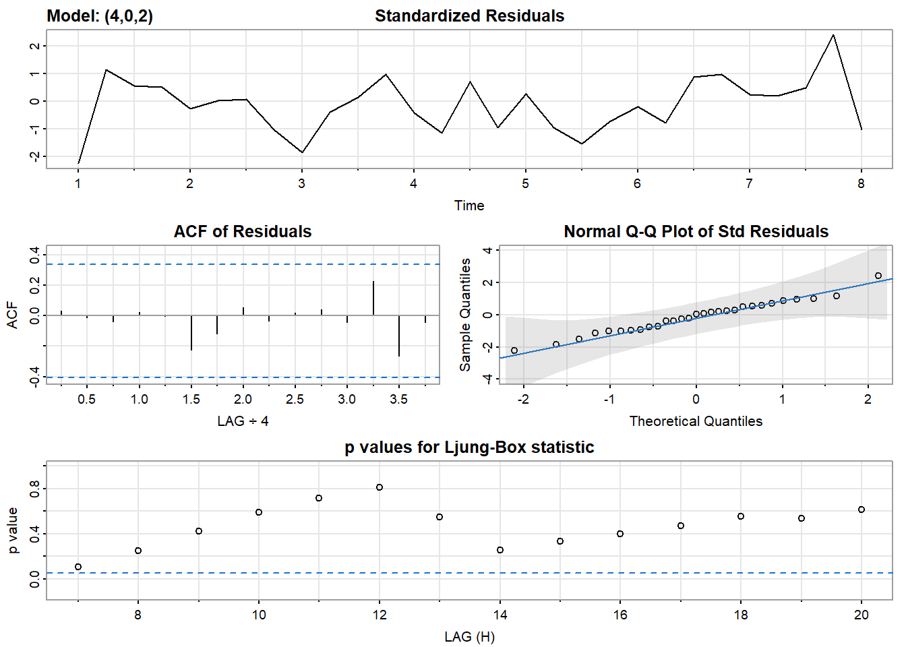
Code
model_output12 <- capture.output(sarima(res.fit1, 0,0,2)) 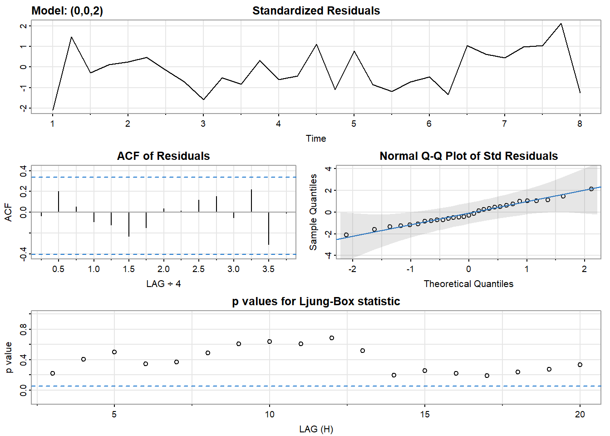
Code
cat(model_output11[150:173], model_output11[length(model_output11)], sep = "\n")sigma^2 estimated as 8.309e-05: log likelihood = 92.98, aic = -169.95
$degrees_of_freedom
[1] 22
$ttable
Estimate SE t.value p.value
ar1 0.8855 0.3372 2.6261 0.0154
ar2 -0.2522 0.3647 -0.6915 0.4965
ar3 0.3589 0.3174 1.1306 0.2704
ar4 -0.4707 0.2172 -2.1672 0.0413
ma1 -1.4055 0.3923 -3.5824 0.0017
ma2 0.4056 0.3622 1.1198 0.2749
xmean 0.0002 0.0004 0.6298 0.5353
$AIC
[1] -5.860371
$AICc
[1] -5.676463
$BIC
[1] -5.483186Code
cat(model_output12[40:67], model_output12[length(model_output12)], sep = "\n") optim.control = list(trace = trc, REPORT = 1, reltol = tol))
Coefficients:
ma1 ma2 xmean
-0.2594 -0.7406 2e-04
s.e. 0.3312 0.3122 4e-04
sigma^2 estimated as 0.000101: log likelihood = 90.7, aic = -173.4
$degrees_of_freedom
[1] 26
$ttable
Estimate SE t.value p.value
ma1 -0.2594 0.3312 -0.7831 0.4406
ma2 -0.7406 0.3122 -2.3721 0.0254
xmean 0.0002 0.0004 0.5482 0.5883
$AIC
[1] -5.979431
$AICc
[1] -5.946327
$BIC
[1] -5.790838
NABased on this, I think the second one (0,0,2) is slightly better with less correlation and smaller AIC value.
Cross validation
Code
n=length(res.fit1)
n *0.3 [1] 8.7Code
dat = ts(dd1[,c(1,2,4)])Code
# The number of folds for cross-validation
n_folds <- 5
horizon <- 4 # Forecasting horizon
window_size <- length(dat[, 3]) - (n_folds * horizon)
# Initialize an empty list to store forecasts
forecasts <- list()
forecasts2 <- list()
# Initialize vectors to store error metrics for each model
rmse1 <- numeric(n_folds)
rmse2 <- numeric(n_folds)
for (i in 1:n_folds) {
# Define the training set for this fold
train_set <- window(dat[, 3], end = c(window_size + ((i - 1) * horizon)))
# Fit the ARIMA models on the training set
fit <- Arima(train_set, order = c(4, 0, 2), include.drift = TRUE, method = "ML")
fit2 <- Arima(train_set, order = c(0, 0, 2), include.drift = TRUE, method = "ML")
# Forecast on the horizon
fcast <- forecast(fit, h = horizon)
fcast2 <- forecast(fit2, h = horizon)
# Store forecasts
forecasts[[i]] <- fcast
forecasts2[[i]] <- fcast2
# Define the test set for this fold
test_set <- window(dat[, 3], start = window_size + ((i - 1) * horizon) + 1, end = window_size + (i * horizon))
# Calculate and store the RMSE for each model
rmse1[i] <- sqrt(mean((fcast$mean - test_set)^2, na.rm = TRUE))
rmse2[i] <- sqrt(mean((fcast2$mean - test_set)^2, na.rm = TRUE))
}
# Calculate the average RMSE for each model
mean_rmse1 <- mean(rmse1)
mean_rmse2 <- mean(rmse2)
# Plot RMSE values for both models
plot(rmse1, type = "b", col = "blue", ylim = range(c(rmse1, rmse2)),
xlab = "Fold", ylab = "RMSE", pch = 19,
main = "Cross-Validation RMSE for ARIMA Models")
lines(rmse2, type = "b", col = "red", pch = 18)
points(rmse2, type = "b", col = "red", pch = 18)
# Add a legend to the plot
legend("topright", legend = c("Model 1 (ARIMA(4,0,2))", "Model 2 (ARIMA(0,0,2))"),
col = c("blue", "red"), pch = c(19, 18), lty = 1)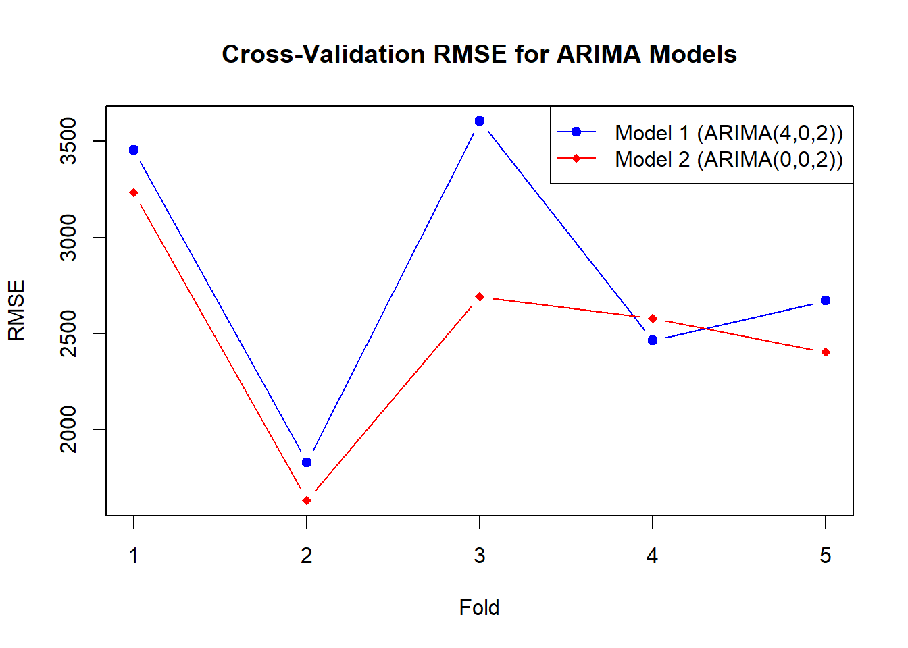
Code
# Output
mean_rmse1[1] 2804.59Code
mean_rmse2[1] 2507.994Based on the cross validation, we can see that the conclusion aligns, the fit1 which is (0,0,2) performs better with smaller errors.
Fit the model
Code
xreg1 <- cbind(saving = lg.dd.ts1[, "saving"],
sale = lg.dd.ts1[, "sale"])
fit1 <- Arima(lg.dd.ts1[, "gini"],order=c(0,0,2),xreg=xreg1)
summary(fit1)Series: lg.dd.ts1[, "gini"]
Regression with ARIMA(0,0,2) errors
Coefficients:
ma1 ma2 intercept saving sale
-0.4973 -0.5027 0.5375 -0.0204 0.2789
s.e. 0.2694 0.2576 0.1358 0.0007 0.0119
sigma^2 = 0.0001067: log likelihood = 92.76
AIC=-173.52 AICc=-169.7 BIC=-165.31
Training set error measures:
ME RMSE MAE MPE MAPE
Training set -9.655453e-05 0.00939564 0.007461685 -0.00333216 0.201711
MASE ACF1
Training set 0.6236347 -0.06097811The equation: Given that y_t represents the log-transformed homevalue at time t, the ARIMA(0,0,2) can be:
( y_t = c + 1 e{t-1} + 2 e{t-2} + _1 _t + _2 _t + e_t )
Based on the summary, my equation is
( y_t = 0.5375 - 0.4973 e_{t-1} - 0.5027 e_{t-2} - 0.0204 _t + 0.2789 _t + e_t )
Forecast
Code
sfit<-auto.arima(lg.dd.ts1[, "sale"])
summary(sfit) Series: lg.dd.ts1[, "sale"]
ARIMA(1,1,0) with drift
Coefficients:
ar1 drift
-0.6624 0.0097
s.e. 0.1365 0.0016
sigma^2 = 0.0002195: log likelihood = 79.3
AIC=-152.6 AICc=-151.6 BIC=-148.6
Training set error measures:
ME RMSE MAE MPE MAPE MASE
Training set 0.0003253088 0.01402717 0.01068364 0.002634758 0.0903859 0.2864612
ACF1
Training set -0.1025856Code
fs<-forecast(sfit,80) #obtaining forecasts
s2fit<-auto.arima(lg.dd.ts1[, "saving"]) #fitting an ARIMA model to the Import variable
summary(s2fit)Series: lg.dd.ts1[, "saving"]
ARIMA(0,1,0) with drift
Coefficients:
drift
0.0701
s.e. 0.0447
sigma^2 = 0.05808: log likelihood = 0.62
AIC=2.76 AICc=3.24 BIC=5.42
Training set error measures:
ME RMSE MAE MPE MAPE MASE
Training set 0.0002068136 0.2325379 0.1666254 -0.1667371 2.642544 0.4511904
ACF1
Training set -0.04495977Code
fs2<-forecast(s2fit,80)
fxreg <- cbind(
sale = fs2$mean,saving = fs$mean) #fimp$mean gives the forecasted values
fcast <- forecast(fit1, xreg=fxreg,80)
autoplot(fcast, main="Forecast of Home Values") + xlab("Year") +
ylab("Home")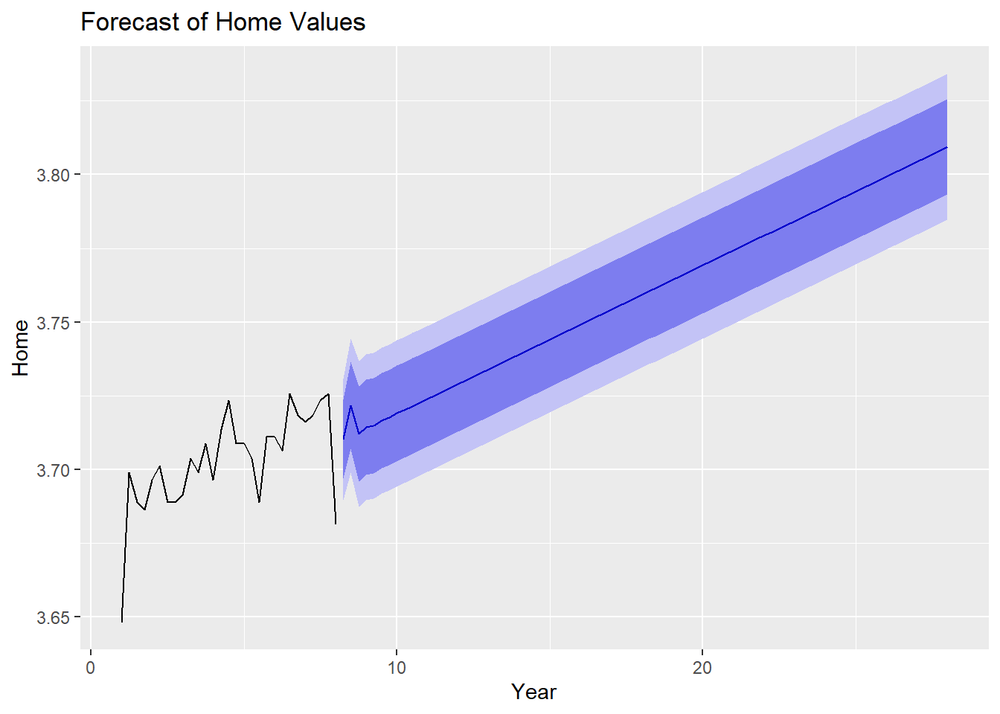
5. (VAR) Home Value ~ Saving Rate + Gdp Deflator + Sale Price
Time Series Transformation
Select the Variables with common Dates
Home Value ~ Saving Rate + Gdp Deflator + Sale Price
Code
# Define start and end dates
start_date <- as.Date("2000-01-01")
end_date <- as.Date("2020-12-31")
# Subset data frames to include only data from 1992 through 2020
df3_sub <- subset(df3, DATE >= start_date & DATE <= end_date)
df6_sub <- subset(df6, DATE >= start_date & DATE <= end_date)
df7_sub <- subset(df7, DATE >= start_date & DATE <= end_date)
df9_sub <- subset(df9, DATE >= start_date & DATE <= end_date)
# Assuming the data is annual for this example. If it's quarterly, you'd use frequency = 4; if monthly, frequency = 12.
frequency <- 4
# Create ts objects
sale <- ts(df3_sub$MSPUS, start = c(2000, 1), end = c(2020, 1), frequency = frequency)
saving <- ts(df6_sub$PSAVERT, start = c(2000, 1), end = c(2020, 1), frequency = frequency)
gdp <- ts(df7_sub$A191RI1Q225SBEA, start = c(2000, 1), end = c(2020, 1), frequency = frequency)
homevalue <- ts(df9_sub$USAUCSFRCONDOSMSAMID, start = c(2000, 1), end = c(2020, 1), frequency = frequency)
DATE <- ts(df7_sub$DATE, start = c(2000, 1), end = c(2020, 1), frequency = frequency)Combine the Variables
Code
dd3<-data.frame(homevalue,saving,gdp,sale,DATE)
colnames(dd3)<-c("homevalue","saving","gdp_deflator", "sale",'date')
knitr::kable(head(dd3))| homevalue | saving | gdp_deflator | sale | date |
|---|---|---|---|---|
| 121428.3 | 5.0 | 2.7 | 165300 | 10957 |
| 121642.0 | 4.5 | 2.5 | 163200 | 11048 |
| 121906.9 | 4.3 | 2.4 | 168800 | 11139 |
| 122475.1 | 4.8 | 2.2 | 172900 | 11231 |
| 123129.1 | 4.8 | 2.6 | 169800 | 11323 |
| 123830.3 | 4.8 | 2.4 | 179000 | 11413 |
Plot the Figure Together
Code
lg.dd3 <- data.frame("date" =dd3$date,"sale"=log(dd3$sale),"saving"=log(dd3$saving),"homevalue"=log(dd3$homevalue),
"gdp_deflator"=log(dd3$gdp))
#### converting to time series component #########
lg.dd.ts3<-ts(lg.dd3,frequency = 4)
##### Facet Plot #######################
autoplot(lg.dd.ts3[,c(2:5)], facets=TRUE) +
xlab("Year") + ylab("") +
ggtitle("The GDP Deflator, Sale Price, Saving Rate, Home value in USA")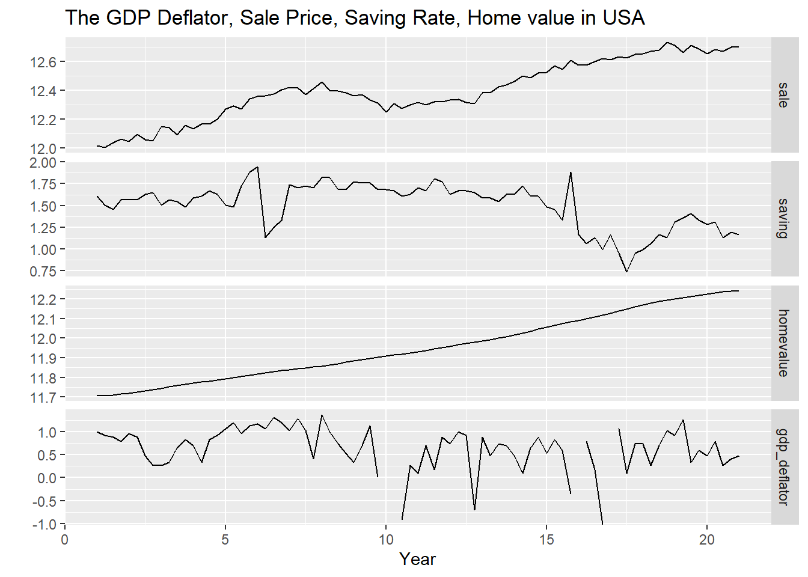
Fitting a VAR model
Finding out the best p:
Code
VARselect(dd3[, c(2:5)], lag.max=14, type="both")$selection
AIC(n) HQ(n) SC(n) FPE(n)
14 14 1 14
$criteria
1 2 3 4 5
AIC(n) 1.623230e+01 1.585994e+01 1.597680e+01 1.591038e+01 1.530104e+01
HQ(n) 1.654480e+01 1.638078e+01 1.670598e+01 1.684788e+01 1.644688e+01
SC(n) 1.702204e+01 1.717618e+01 1.781953e+01 1.827960e+01 1.819676e+01
FPE(n) 1.123135e+07 7.794514e+06 8.902039e+06 8.575733e+06 4.886908e+06
6 7 8 9 10
AIC(n) 1.540760e+01 1.514539e+01 1.518739e+01 1.460313e+01 1.459530e+01
HQ(n) 1.676178e+01 1.670790e+01 1.695824e+01 1.658231e+01 1.678281e+01
SC(n) 1.882981e+01 1.909409e+01 1.966259e+01 1.960482e+01 2.012348e+01
FPE(n) 5.834120e+06 4.967706e+06 5.969293e+06 4.042891e+06 5.231765e+06
11 12 13 14
AIC(n) 1.364742e+01 1.256891e+01 1.182785e+01 9.56155
HQ(n) 1.604327e+01 1.517310e+01 1.464037e+01 12.58241
SC(n) 1.970209e+01 1.915008e+01 1.893551e+01 17.19571
FPE(n) 2.917799e+06 1.647224e+06 1.628958e+06 519454.19470From the results, we can see that 13,14 have relatively smaller criterias:
We can fit several models with p=13, 14.=> VAR(13), VAR(14)
Code
summary(vars::VAR(dd3[, c(2:5)], p=13, type='both'))
VAR Estimation Results:
=========================
Endogenous variables: saving, gdp_deflator, sale, date
Deterministic variables: both
Sample size: 68
Log Likelihood: -567.72
Roots of the characteristic polynomial:
1.035 1.021 1.021 1.008 1.008 1.004 1.004 1 1 0.9997 0.9997 0.9985 0.9985 0.9915 0.9915 0.9857 0.9834 0.9834 0.9832 0.9832 0.9815 0.9815 0.9749 0.9749 0.9734 0.9734 0.9729 0.9729 0.9669 0.9669 0.9637 0.9637 0.9621 0.9621 0.9476 0.9476 0.9337 0.9337 0.9328 0.9328 0.9302 0.9302 0.9299 0.9299 0.909 0.909 0.8471 0.7737 0.695 0.695 0.4355 0.4355
Call:
vars::VAR(y = dd3[, c(2:5)], p = 13, type = "both")
Estimation results for equation saving:
=======================================
saving = saving.l1 + gdp_deflator.l1 + sale.l1 + date.l1 + saving.l2 + gdp_deflator.l2 + sale.l2 + date.l2 + saving.l3 + gdp_deflator.l3 + sale.l3 + date.l3 + saving.l4 + gdp_deflator.l4 + sale.l4 + date.l4 + saving.l5 + gdp_deflator.l5 + sale.l5 + date.l5 + saving.l6 + gdp_deflator.l6 + sale.l6 + date.l6 + saving.l7 + gdp_deflator.l7 + sale.l7 + date.l7 + saving.l8 + gdp_deflator.l8 + sale.l8 + date.l8 + saving.l9 + gdp_deflator.l9 + sale.l9 + date.l9 + saving.l10 + gdp_deflator.l10 + sale.l10 + date.l10 + saving.l11 + gdp_deflator.l11 + sale.l11 + date.l11 + saving.l12 + gdp_deflator.l12 + sale.l12 + date.l12 + saving.l13 + gdp_deflator.l13 + sale.l13 + date.l13 + const + trend
Estimate Std. Error t value Pr(>|t|)
saving.l1 2.908e-01 2.872e-01 1.013 0.3285
gdp_deflator.l1 1.711e-01 3.511e-01 0.487 0.6336
sale.l1 2.098e-05 3.099e-05 0.677 0.5094
date.l1 1.046e+00 6.562e-01 1.594 0.1333
saving.l2 -1.198e-01 2.610e-01 -0.459 0.6533
gdp_deflator.l2 1.933e-02 3.535e-01 0.055 0.9572
sale.l2 -2.719e-05 2.607e-05 -1.043 0.3146
date.l2 -3.554e-01 6.401e-01 -0.555 0.5875
saving.l3 -1.422e-01 2.480e-01 -0.574 0.5753
gdp_deflator.l3 5.727e-02 3.110e-01 0.184 0.8565
sale.l3 -4.226e-06 2.668e-05 -0.158 0.8764
date.l3 5.122e-01 6.753e-01 0.758 0.4608
saving.l4 -2.747e-02 2.182e-01 -0.126 0.9016
gdp_deflator.l4 6.959e-01 2.947e-01 2.362 0.0332 *
sale.l4 -3.909e-05 2.674e-05 -1.462 0.1658
date.l4 -8.648e-01 6.756e-01 -1.280 0.2213
saving.l5 1.842e-01 2.431e-01 0.758 0.4612
gdp_deflator.l5 5.206e-02 3.233e-01 0.161 0.8744
sale.l5 2.488e-05 2.213e-05 1.124 0.2798
date.l5 3.609e-02 6.480e-01 0.056 0.9564
saving.l6 4.881e-02 2.016e-01 0.242 0.8122
gdp_deflator.l6 8.258e-02 2.831e-01 0.292 0.7748
sale.l6 -2.184e-05 2.360e-05 -0.925 0.3705
date.l6 -2.468e-01 6.530e-01 -0.378 0.7111
saving.l7 -5.310e-01 2.362e-01 -2.248 0.0412 *
gdp_deflator.l7 5.376e-02 2.009e-01 0.268 0.7929
sale.l7 1.010e-05 2.576e-05 0.392 0.7008
date.l7 1.775e+00 7.591e-01 2.339 0.0347 *
saving.l8 3.975e-01 3.213e-01 1.237 0.2363
gdp_deflator.l8 3.341e-01 1.765e-01 1.893 0.0792 .
sale.l8 -6.328e-05 4.354e-05 -1.453 0.1682
date.l8 -1.411e-01 7.180e-01 -0.196 0.8471
saving.l9 -1.211e-01 3.235e-01 -0.374 0.7138
gdp_deflator.l9 5.550e-02 1.902e-01 0.292 0.7747
sale.l9 3.448e-05 3.337e-05 1.033 0.3190
date.l9 4.678e-01 8.289e-01 0.564 0.5815
saving.l10 -2.254e-01 2.921e-01 -0.772 0.4530
gdp_deflator.l10 -1.552e-01 1.714e-01 -0.905 0.3805
sale.l10 -2.976e-05 3.162e-05 -0.941 0.3624
date.l10 1.580e-01 9.071e-01 0.174 0.8642
saving.l11 -2.268e-02 2.522e-01 -0.090 0.9296
gdp_deflator.l11 1.209e-01 1.778e-01 0.680 0.5075
sale.l11 9.539e-05 3.521e-05 2.709 0.0169 *
date.l11 -8.571e-01 7.812e-01 -1.097 0.2911
saving.l12 3.879e-01 2.473e-01 1.569 0.1390
gdp_deflator.l12 1.344e-01 1.553e-01 0.865 0.4014
sale.l12 -2.117e-05 4.142e-05 -0.511 0.6172
date.l12 7.070e-01 6.852e-01 1.032 0.3196
saving.l13 4.278e-02 2.301e-01 0.186 0.8552
gdp_deflator.l13 2.689e-01 2.413e-01 1.114 0.2838
sale.l13 -1.205e-05 3.414e-05 -0.353 0.7293
date.l13 -2.870e-01 6.661e-01 -0.431 0.6731
const -2.031e+04 3.379e+04 -0.601 0.5573
trend -1.780e+02 3.017e+02 -0.590 0.5646
---
Signif. codes: 0 '***' 0.001 '**' 0.01 '*' 0.05 '.' 0.1 ' ' 1
Residual standard error: 0.6358 on 14 degrees of freedom
Multiple R-Squared: 0.9397, Adjusted R-squared: 0.7116
F-statistic: 4.119 on 53 and 14 DF, p-value: 0.002798
Estimation results for equation gdp_deflator:
=============================================
gdp_deflator = saving.l1 + gdp_deflator.l1 + sale.l1 + date.l1 + saving.l2 + gdp_deflator.l2 + sale.l2 + date.l2 + saving.l3 + gdp_deflator.l3 + sale.l3 + date.l3 + saving.l4 + gdp_deflator.l4 + sale.l4 + date.l4 + saving.l5 + gdp_deflator.l5 + sale.l5 + date.l5 + saving.l6 + gdp_deflator.l6 + sale.l6 + date.l6 + saving.l7 + gdp_deflator.l7 + sale.l7 + date.l7 + saving.l8 + gdp_deflator.l8 + sale.l8 + date.l8 + saving.l9 + gdp_deflator.l9 + sale.l9 + date.l9 + saving.l10 + gdp_deflator.l10 + sale.l10 + date.l10 + saving.l11 + gdp_deflator.l11 + sale.l11 + date.l11 + saving.l12 + gdp_deflator.l12 + sale.l12 + date.l12 + saving.l13 + gdp_deflator.l13 + sale.l13 + date.l13 + const + trend
Estimate Std. Error t value Pr(>|t|)
saving.l1 -4.611e-01 2.481e-01 -1.859 0.08420 .
gdp_deflator.l1 4.021e-01 3.032e-01 1.326 0.20603
sale.l1 2.180e-05 2.676e-05 0.815 0.42889
date.l1 4.124e-01 5.667e-01 0.728 0.47874
saving.l2 3.869e-01 2.254e-01 1.716 0.10819
gdp_deflator.l2 6.262e-02 3.053e-01 0.205 0.84044
sale.l2 -1.508e-06 2.251e-05 -0.067 0.94753
date.l2 -7.359e-01 5.528e-01 -1.331 0.20441
saving.l3 -3.211e-02 2.141e-01 -0.150 0.88296
gdp_deflator.l3 2.799e-02 2.686e-01 0.104 0.91848
sale.l3 4.193e-07 2.305e-05 0.018 0.98574
date.l3 -2.387e-01 5.832e-01 -0.409 0.68851
saving.l4 -4.318e-01 1.885e-01 -2.291 0.03798 *
gdp_deflator.l4 3.419e-01 2.545e-01 1.344 0.20043
sale.l4 1.016e-05 2.309e-05 0.440 0.66679
date.l4 -1.510e-02 5.835e-01 -0.026 0.97972
saving.l5 4.398e-03 2.099e-01 0.021 0.98358
gdp_deflator.l5 4.860e-02 2.792e-01 0.174 0.86430
sale.l5 -4.313e-05 1.911e-05 -2.257 0.04050 *
date.l5 -6.851e-02 5.597e-01 -0.122 0.90431
saving.l6 4.401e-01 1.741e-01 2.527 0.02415 *
gdp_deflator.l6 6.141e-02 2.445e-01 0.251 0.80532
sale.l6 2.741e-05 2.039e-05 1.344 0.20018
date.l6 9.817e-01 5.640e-01 1.741 0.10366
saving.l7 -6.433e-01 2.040e-01 -3.154 0.00704 **
gdp_deflator.l7 -9.428e-02 1.735e-01 -0.543 0.59539
sale.l7 -5.432e-05 2.225e-05 -2.441 0.02852 *
date.l7 -5.684e-01 6.556e-01 -0.867 0.40052
saving.l8 5.461e-03 2.775e-01 0.020 0.98458
gdp_deflator.l8 -8.684e-02 1.525e-01 -0.570 0.57800
sale.l8 4.609e-05 3.760e-05 1.226 0.24054
date.l8 1.083e+00 6.201e-01 1.747 0.10248
saving.l9 3.778e-01 2.794e-01 1.352 0.19781
gdp_deflator.l9 1.485e-01 1.642e-01 0.904 0.38123
sale.l9 -3.166e-05 2.882e-05 -1.098 0.29056
date.l9 -1.140e+00 7.159e-01 -1.592 0.13369
saving.l10 -7.754e-02 2.522e-01 -0.307 0.76306
gdp_deflator.l10 1.545e-01 1.480e-01 1.043 0.31449
sale.l10 -2.887e-05 2.730e-05 -1.057 0.30832
date.l10 3.145e-03 7.834e-01 0.004 0.99685
saving.l11 -6.629e-02 2.178e-01 -0.304 0.76536
gdp_deflator.l11 -9.043e-02 1.536e-01 -0.589 0.56541
sale.l11 3.491e-05 3.041e-05 1.148 0.27019
date.l11 8.235e-01 6.747e-01 1.221 0.24243
saving.l12 -1.859e-01 2.136e-01 -0.871 0.39861
gdp_deflator.l12 2.547e-01 1.342e-01 1.898 0.07846 .
sale.l12 7.403e-06 3.578e-05 0.207 0.83905
date.l12 -9.841e-01 5.918e-01 -1.663 0.11856
saving.l13 2.576e-01 1.987e-01 1.296 0.21588
gdp_deflator.l13 -2.652e-01 2.084e-01 -1.272 0.22397
sale.l13 1.495e-05 2.948e-05 0.507 0.61990
date.l13 6.931e-01 5.752e-01 1.205 0.24820
const -2.276e+03 2.918e+04 -0.078 0.93894
trend -2.257e+01 2.606e+02 -0.087 0.93221
---
Signif. codes: 0 '***' 0.001 '**' 0.01 '*' 0.05 '.' 0.1 ' ' 1
Residual standard error: 0.5491 on 14 degrees of freedom
Multiple R-Squared: 0.9365, Adjusted R-squared: 0.696
F-statistic: 3.895 on 53 and 14 DF, p-value: 0.003752
Estimation results for equation sale:
=====================================
sale = saving.l1 + gdp_deflator.l1 + sale.l1 + date.l1 + saving.l2 + gdp_deflator.l2 + sale.l2 + date.l2 + saving.l3 + gdp_deflator.l3 + sale.l3 + date.l3 + saving.l4 + gdp_deflator.l4 + sale.l4 + date.l4 + saving.l5 + gdp_deflator.l5 + sale.l5 + date.l5 + saving.l6 + gdp_deflator.l6 + sale.l6 + date.l6 + saving.l7 + gdp_deflator.l7 + sale.l7 + date.l7 + saving.l8 + gdp_deflator.l8 + sale.l8 + date.l8 + saving.l9 + gdp_deflator.l9 + sale.l9 + date.l9 + saving.l10 + gdp_deflator.l10 + sale.l10 + date.l10 + saving.l11 + gdp_deflator.l11 + sale.l11 + date.l11 + saving.l12 + gdp_deflator.l12 + sale.l12 + date.l12 + saving.l13 + gdp_deflator.l13 + sale.l13 + date.l13 + const + trend
Estimate Std. Error t value Pr(>|t|)
saving.l1 -4.084e+03 2.979e+03 -1.371 0.1920
gdp_deflator.l1 -9.744e+02 3.642e+03 -0.268 0.7929
sale.l1 7.623e-01 3.214e-01 2.372 0.0326 *
date.l1 2.490e+03 6.806e+03 0.366 0.7199
saving.l2 -4.804e+02 2.707e+03 -0.177 0.8617
gdp_deflator.l2 4.768e+03 3.666e+03 1.300 0.2145
sale.l2 5.903e-02 2.703e-01 0.218 0.8303
date.l2 -6.124e+02 6.639e+03 -0.092 0.9278
saving.l3 1.587e+03 2.572e+03 0.617 0.5471
gdp_deflator.l3 -5.637e+03 3.226e+03 -1.747 0.1024
sale.l3 2.499e-01 2.768e-01 0.903 0.3818
date.l3 -7.087e+02 7.005e+03 -0.101 0.9208
saving.l4 -2.482e+03 2.264e+03 -1.097 0.2913
gdp_deflator.l4 3.322e+03 3.056e+03 1.087 0.2955
sale.l4 -3.578e-01 2.773e-01 -1.290 0.2179
date.l4 1.388e+04 7.007e+03 1.981 0.0676 .
saving.l5 -5.417e+02 2.521e+03 -0.215 0.8330
gdp_deflator.l5 1.615e+03 3.353e+03 0.482 0.6376
sale.l5 -1.824e-01 2.295e-01 -0.795 0.4400
date.l5 -9.008e+03 6.721e+03 -1.340 0.2015
saving.l6 1.384e+03 2.091e+03 0.662 0.5188
gdp_deflator.l6 7.061e+02 2.936e+03 0.240 0.8134
sale.l6 -7.230e-02 2.448e-01 -0.295 0.7721
date.l6 9.888e+02 6.773e+03 0.146 0.8860
saving.l7 -2.816e+03 2.450e+03 -1.149 0.2696
gdp_deflator.l7 -8.100e+02 2.084e+03 -0.389 0.7033
sale.l7 3.045e-01 2.672e-01 1.139 0.2737
date.l7 3.220e+03 7.873e+03 0.409 0.6887
saving.l8 -2.854e+03 3.332e+03 -0.856 0.4062
gdp_deflator.l8 -9.438e+02 1.831e+03 -0.515 0.6143
sale.l8 -9.160e-02 4.516e-01 -0.203 0.8422
date.l8 -4.669e+03 7.447e+03 -0.627 0.5408
saving.l9 4.690e+03 3.356e+03 1.398 0.1840
gdp_deflator.l9 5.201e+03 1.973e+03 2.637 0.0195 *
sale.l9 1.949e-01 3.461e-01 0.563 0.5823
date.l9 1.035e+04 8.598e+03 1.204 0.2486
saving.l10 -1.195e+03 3.029e+03 -0.394 0.6993
gdp_deflator.l10 -6.464e+02 1.778e+03 -0.364 0.7216
sale.l10 -6.476e-01 3.279e-01 -1.975 0.0683 .
date.l10 -4.637e+03 9.408e+03 -0.493 0.6298
saving.l11 -4.289e+03 2.616e+03 -1.639 0.1234
gdp_deflator.l11 -1.225e+03 1.845e+03 -0.664 0.5173
sale.l11 5.896e-01 3.652e-01 1.615 0.1287
date.l11 7.608e+03 8.103e+03 0.939 0.3637
saving.l12 1.989e+03 2.565e+03 0.776 0.4509
gdp_deflator.l12 -9.021e+02 1.611e+03 -0.560 0.5844
sale.l12 -1.698e-02 4.296e-01 -0.040 0.9690
date.l12 -1.176e+04 7.107e+03 -1.654 0.1203
saving.l13 1.331e+03 2.387e+03 0.558 0.5859
gdp_deflator.l13 2.295e+03 2.503e+03 0.917 0.3747
sale.l13 -2.559e-01 3.541e-01 -0.723 0.4817
date.l13 9.671e+03 6.909e+03 1.400 0.1833
const -1.721e+08 3.504e+08 -0.491 0.6310
trend -1.535e+06 3.130e+06 -0.490 0.6314
---
Signif. codes: 0 '***' 0.001 '**' 0.01 '*' 0.05 '.' 0.1 ' ' 1
Residual standard error: 6595 on 14 degrees of freedom
Multiple R-Squared: 0.9948, Adjusted R-squared: 0.9751
F-statistic: 50.47 on 53 and 14 DF, p-value: 3.505e-10
Estimation results for equation date:
=====================================
date = saving.l1 + gdp_deflator.l1 + sale.l1 + date.l1 + saving.l2 + gdp_deflator.l2 + sale.l2 + date.l2 + saving.l3 + gdp_deflator.l3 + sale.l3 + date.l3 + saving.l4 + gdp_deflator.l4 + sale.l4 + date.l4 + saving.l5 + gdp_deflator.l5 + sale.l5 + date.l5 + saving.l6 + gdp_deflator.l6 + sale.l6 + date.l6 + saving.l7 + gdp_deflator.l7 + sale.l7 + date.l7 + saving.l8 + gdp_deflator.l8 + sale.l8 + date.l8 + saving.l9 + gdp_deflator.l9 + sale.l9 + date.l9 + saving.l10 + gdp_deflator.l10 + sale.l10 + date.l10 + saving.l11 + gdp_deflator.l11 + sale.l11 + date.l11 + saving.l12 + gdp_deflator.l12 + sale.l12 + date.l12 + saving.l13 + gdp_deflator.l13 + sale.l13 + date.l13 + const + trend
Estimate Std. Error t value Pr(>|t|)
saving.l1 9.351e-02 8.226e-02 1.137 0.27471
gdp_deflator.l1 1.711e-02 1.005e-01 0.170 0.86728
sale.l1 -1.142e-05 8.874e-06 -1.287 0.21899
date.l1 1.523e-02 1.879e-01 0.081 0.93656
saving.l2 -9.768e-02 7.475e-02 -1.307 0.21237
gdp_deflator.l2 -1.439e-01 1.012e-01 -1.422 0.17696
sale.l2 1.466e-05 7.464e-06 1.964 0.06976 .
date.l2 -4.554e-01 1.833e-01 -2.485 0.02624 *
saving.l3 -5.419e-02 7.100e-02 -0.763 0.45800
gdp_deflator.l3 1.575e-01 8.905e-02 1.769 0.09868 .
sale.l3 4.743e-06 7.641e-06 0.621 0.54474
date.l3 -2.674e-01 1.934e-01 -1.383 0.18847
saving.l4 1.874e-01 6.249e-02 2.998 0.00959 **
gdp_deflator.l4 -1.150e-01 8.438e-02 -1.363 0.19454
sale.l4 -5.368e-06 7.656e-06 -0.701 0.49469
date.l4 -2.522e-01 1.935e-01 -1.304 0.21338
saving.l5 -9.269e-02 6.961e-02 -1.332 0.20428
gdp_deflator.l5 3.426e-02 9.257e-02 0.370 0.71686
sale.l5 -1.229e-06 6.336e-06 -0.194 0.84902
date.l5 -1.950e-01 1.856e-01 -1.051 0.31127
saving.l6 -4.992e-03 5.774e-02 -0.086 0.93233
gdp_deflator.l6 3.084e-02 8.107e-02 0.380 0.70932
sale.l6 -3.542e-06 6.760e-06 -0.524 0.60848
date.l6 -6.598e-01 1.870e-01 -3.528 0.00334 **
saving.l7 -1.778e-02 6.763e-02 -0.263 0.79650
gdp_deflator.l7 -1.476e-02 5.753e-02 -0.257 0.80119
sale.l7 5.976e-07 7.378e-06 0.081 0.93659
date.l7 -2.933e-01 2.174e-01 -1.349 0.19861
saving.l8 5.116e-02 9.201e-02 0.556 0.58692
gdp_deflator.l8 -7.410e-02 5.055e-02 -1.466 0.16480
sale.l8 1.489e-05 1.247e-05 1.194 0.25226
date.l8 4.650e-03 2.056e-01 0.023 0.98228
saving.l9 -1.112e-01 9.265e-02 -1.200 0.25004
gdp_deflator.l9 -6.423e-02 5.446e-02 -1.179 0.25794
sale.l9 -6.880e-06 9.556e-06 -0.720 0.48339
date.l9 -6.280e-01 2.374e-01 -2.646 0.01920 *
saving.l10 1.487e-01 8.364e-02 1.777 0.09724 .
gdp_deflator.l10 1.083e-01 4.909e-02 2.206 0.04455 *
sale.l10 -1.814e-06 9.053e-06 -0.200 0.84405
date.l10 2.086e-02 2.598e-01 0.080 0.93714
saving.l11 1.941e-02 7.223e-02 0.269 0.79208
gdp_deflator.l11 4.475e-02 5.093e-02 0.879 0.39444
sale.l11 -1.522e-05 1.008e-05 -1.509 0.15343
date.l11 -8.110e-01 2.237e-01 -3.625 0.00276 **
saving.l12 -1.298e-01 7.081e-02 -1.833 0.08822 .
gdp_deflator.l12 -9.417e-02 4.448e-02 -2.117 0.05267 .
sale.l12 1.914e-05 1.186e-05 1.614 0.12886
date.l12 -3.757e-02 1.962e-01 -0.191 0.85092
saving.l13 6.755e-02 6.589e-02 1.025 0.32267
gdp_deflator.l13 -3.158e-02 6.910e-02 -0.457 0.65469
sale.l13 -5.844e-06 9.775e-06 -0.598 0.55952
date.l13 -6.054e-01 1.907e-01 -3.174 0.00676 **
const 5.316e+04 9.675e+03 5.494 7.90e-05 ***
trend 4.716e+02 8.641e+01 5.457 8.44e-05 ***
---
Signif. codes: 0 '***' 0.001 '**' 0.01 '*' 0.05 '.' 0.1 ' ' 1
Residual standard error: 0.1821 on 14 degrees of freedom
Multiple R-Squared: 1, Adjusted R-squared: 1
F-statistic: 1.243e+08 on 53 and 14 DF, p-value: < 2.2e-16
Covariance matrix of residuals:
saving gdp_deflator sale date
saving 0.40430 -0.02814 -128.6 0.03227
gdp_deflator -0.02814 0.30155 1527.7 0.02139
sale -128.63360 1527.68477 43494825.8 -140.74083
date 0.03227 0.02139 -140.7 0.03315
Correlation matrix of residuals:
saving gdp_deflator sale date
saving 1.00000 -0.08061 -0.03067 0.2787
gdp_deflator -0.08061 1.00000 0.42182 0.2139
sale -0.03067 0.42182 1.00000 -0.1172
date 0.27873 0.21394 -0.11720 1.0000Code
summary(vars::VAR(dd3[, c(2:5)], p=14, type='both'))
VAR Estimation Results:
=========================
Endogenous variables: saving, gdp_deflator, sale, date
Deterministic variables: both
Sample size: 67
Log Likelihood: -468.587
Roots of the characteristic polynomial:
1.016 1.016 1.009 1.007 1.007 1.005 1.005 1.001 1.001 1 1 0.9992 0.9992 0.9966 0.9966 0.9939 0.9939 0.9908 0.9908 0.9863 0.9863 0.9859 0.9859 0.9855 0.9855 0.9851 0.9851 0.9789 0.9762 0.9762 0.9755 0.9755 0.9669 0.9669 0.9593 0.9593 0.9561 0.9561 0.9555 0.9555 0.9545 0.9545 0.9493 0.9489 0.9489 0.9425 0.9425 0.9253 0.9253 0.9249 0.9249 0.8538 0.8383 0.8383 0.7951 0.5564
Call:
vars::VAR(y = dd3[, c(2:5)], p = 14, type = "both")
Estimation results for equation saving:
=======================================
saving = saving.l1 + gdp_deflator.l1 + sale.l1 + date.l1 + saving.l2 + gdp_deflator.l2 + sale.l2 + date.l2 + saving.l3 + gdp_deflator.l3 + sale.l3 + date.l3 + saving.l4 + gdp_deflator.l4 + sale.l4 + date.l4 + saving.l5 + gdp_deflator.l5 + sale.l5 + date.l5 + saving.l6 + gdp_deflator.l6 + sale.l6 + date.l6 + saving.l7 + gdp_deflator.l7 + sale.l7 + date.l7 + saving.l8 + gdp_deflator.l8 + sale.l8 + date.l8 + saving.l9 + gdp_deflator.l9 + sale.l9 + date.l9 + saving.l10 + gdp_deflator.l10 + sale.l10 + date.l10 + saving.l11 + gdp_deflator.l11 + sale.l11 + date.l11 + saving.l12 + gdp_deflator.l12 + sale.l12 + date.l12 + saving.l13 + gdp_deflator.l13 + sale.l13 + date.l13 + saving.l14 + gdp_deflator.l14 + sale.l14 + date.l14 + const + trend
Estimate Std. Error t value Pr(>|t|)
saving.l1 1.463e-01 2.654e-01 0.551 0.5949
gdp_deflator.l1 4.820e-01 3.451e-01 1.397 0.1960
sale.l1 1.220e-05 3.068e-05 0.398 0.7001
date.l1 7.393e-01 9.500e-01 0.778 0.4564
saving.l2 -9.046e-02 3.074e-01 -0.294 0.7752
gdp_deflator.l2 -5.264e-01 3.864e-01 -1.362 0.2062
sale.l2 8.937e-06 3.454e-05 0.259 0.8017
date.l2 -2.666e-01 6.697e-01 -0.398 0.6999
saving.l3 -5.992e-01 3.002e-01 -1.996 0.0771 .
gdp_deflator.l3 2.768e-01 3.652e-01 0.758 0.4678
sale.l3 -1.071e-05 2.917e-05 -0.367 0.7218
date.l3 6.780e-01 7.349e-01 0.923 0.3803
saving.l4 1.815e-01 2.328e-01 0.780 0.4557
gdp_deflator.l4 5.535e-01 3.862e-01 1.433 0.1855
sale.l4 -3.200e-05 2.680e-05 -1.194 0.2631
date.l4 -1.277e+00 6.798e-01 -1.878 0.0931 .
saving.l5 1.830e-01 3.068e-01 0.597 0.5655
gdp_deflator.l5 3.652e-01 3.758e-01 0.972 0.3566
sale.l5 -1.319e-05 2.858e-05 -0.461 0.6555
date.l5 -3.563e-01 7.888e-01 -0.452 0.6622
saving.l6 -1.334e-01 2.455e-01 -0.543 0.6000
gdp_deflator.l6 3.820e-01 3.002e-01 1.273 0.2351
sale.l6 2.371e-07 2.365e-05 0.010 0.9922
date.l6 -8.171e-01 6.998e-01 -1.168 0.2729
saving.l7 -6.584e-01 2.305e-01 -2.856 0.0189 *
gdp_deflator.l7 2.827e-01 2.916e-01 0.969 0.3578
sale.l7 -1.994e-05 2.543e-05 -0.784 0.4531
date.l7 1.395e+00 9.481e-01 1.472 0.1752
saving.l8 7.202e-01 3.210e-01 2.244 0.0515 .
gdp_deflator.l8 3.057e-01 1.972e-01 1.550 0.1556
sale.l8 -3.316e-05 4.185e-05 -0.792 0.4486
date.l8 5.727e-01 8.882e-01 0.645 0.5352
saving.l9 -2.317e-01 3.587e-01 -0.646 0.5344
gdp_deflator.l9 2.613e-01 2.002e-01 1.305 0.2242
sale.l9 -5.261e-05 4.653e-05 -1.131 0.2874
date.l9 -1.794e-01 8.084e-01 -0.222 0.8293
saving.l10 -2.787e-01 3.470e-01 -0.803 0.4425
gdp_deflator.l10 -1.458e-01 2.135e-01 -0.683 0.5117
sale.l10 6.185e-06 3.344e-05 0.185 0.8574
date.l10 1.604e+00 1.151e+00 1.394 0.1968
saving.l11 -2.069e-02 3.097e-01 -0.067 0.9482
gdp_deflator.l11 9.249e-03 1.897e-01 0.049 0.9622
sale.l11 7.680e-05 3.803e-05 2.020 0.0742 .
date.l11 -1.994e+00 8.221e-01 -2.425 0.0383 *
saving.l12 3.251e-01 2.492e-01 1.305 0.2244
gdp_deflator.l12 2.376e-01 1.676e-01 1.418 0.1900
sale.l12 2.661e-06 4.714e-05 0.056 0.9562
date.l12 4.892e-01 1.058e+00 0.463 0.6547
saving.l13 2.713e-01 2.801e-01 0.969 0.3581
gdp_deflator.l13 1.783e-01 2.297e-01 0.776 0.4575
sale.l13 -1.524e-05 4.259e-05 -0.358 0.7287
date.l13 9.146e-02 7.736e-01 0.118 0.9085
saving.l14 -2.111e-01 2.352e-01 -0.897 0.3929
gdp_deflator.l14 5.930e-01 2.528e-01 2.346 0.0436 *
sale.l14 2.412e-05 3.334e-05 0.723 0.4878
date.l14 -6.787e-01 8.703e-01 -0.780 0.4555
const -4.824e+02 5.852e+04 -0.008 0.9936
trend -8.263e-02 5.245e+02 0.000 0.9999
---
Signif. codes: 0 '***' 0.001 '**' 0.01 '*' 0.05 '.' 0.1 ' ' 1
Residual standard error: 0.5664 on 9 degrees of freedom
Multiple R-Squared: 0.9692, Adjusted R-squared: 0.7742
F-statistic: 4.971 on 57 and 9 DF, p-value: 0.00691
Estimation results for equation gdp_deflator:
=============================================
gdp_deflator = saving.l1 + gdp_deflator.l1 + sale.l1 + date.l1 + saving.l2 + gdp_deflator.l2 + sale.l2 + date.l2 + saving.l3 + gdp_deflator.l3 + sale.l3 + date.l3 + saving.l4 + gdp_deflator.l4 + sale.l4 + date.l4 + saving.l5 + gdp_deflator.l5 + sale.l5 + date.l5 + saving.l6 + gdp_deflator.l6 + sale.l6 + date.l6 + saving.l7 + gdp_deflator.l7 + sale.l7 + date.l7 + saving.l8 + gdp_deflator.l8 + sale.l8 + date.l8 + saving.l9 + gdp_deflator.l9 + sale.l9 + date.l9 + saving.l10 + gdp_deflator.l10 + sale.l10 + date.l10 + saving.l11 + gdp_deflator.l11 + sale.l11 + date.l11 + saving.l12 + gdp_deflator.l12 + sale.l12 + date.l12 + saving.l13 + gdp_deflator.l13 + sale.l13 + date.l13 + saving.l14 + gdp_deflator.l14 + sale.l14 + date.l14 + const + trend
Estimate Std. Error t value Pr(>|t|)
saving.l1 -5.310e-01 2.657e-01 -1.998 0.0768 .
gdp_deflator.l1 5.984e-01 3.456e-01 1.731 0.1174
sale.l1 2.347e-06 3.072e-05 0.076 0.9408
date.l1 7.860e-03 9.513e-01 0.008 0.9936
saving.l2 2.042e-01 3.078e-01 0.663 0.5238
gdp_deflator.l2 -2.973e-01 3.870e-01 -0.768 0.4621
sale.l2 2.167e-05 3.459e-05 0.627 0.5465
date.l2 -2.858e-01 6.707e-01 -0.426 0.6800
saving.l3 -2.568e-01 3.007e-01 -0.854 0.4152
gdp_deflator.l3 2.612e-01 3.657e-01 0.714 0.4932
sale.l3 1.394e-05 2.921e-05 0.477 0.6444
date.l3 -2.505e-02 7.359e-01 -0.034 0.9736
saving.l4 -2.762e-01 2.331e-01 -1.185 0.2665
gdp_deflator.l4 2.561e-01 3.867e-01 0.662 0.5244
sale.l4 4.054e-08 2.684e-05 0.002 0.9988
date.l4 -2.489e-01 6.808e-01 -0.366 0.7231
saving.l5 3.847e-02 3.072e-01 0.125 0.9031
gdp_deflator.l5 1.682e-01 3.764e-01 0.447 0.6655
sale.l5 -7.211e-05 2.862e-05 -2.520 0.0328 *
date.l5 1.852e-01 7.899e-01 0.234 0.8199
saving.l6 1.954e-01 2.458e-01 0.795 0.4471
gdp_deflator.l6 3.326e-01 3.006e-01 1.107 0.2972
sale.l6 3.402e-05 2.369e-05 1.436 0.1847
date.l6 2.362e-01 7.008e-01 0.337 0.7438
saving.l7 -5.999e-01 2.309e-01 -2.598 0.0288 *
gdp_deflator.l7 1.030e-01 2.920e-01 0.353 0.7325
sale.l7 -6.390e-05 2.547e-05 -2.509 0.0334 *
date.l7 -8.538e-01 9.494e-01 -0.899 0.3919
saving.l8 1.751e-01 3.214e-01 0.545 0.5991
gdp_deflator.l8 -1.805e-01 1.975e-01 -0.914 0.3846
sale.l8 7.564e-05 4.191e-05 1.805 0.1046
date.l8 1.581e+00 8.895e-01 1.777 0.1093
saving.l9 6.421e-02 3.592e-01 0.179 0.8621
gdp_deflator.l9 2.489e-01 2.004e-01 1.242 0.2457
sale.l9 -7.093e-05 4.660e-05 -1.522 0.1623
date.l9 -1.109e+00 8.095e-01 -1.370 0.2038
saving.l10 2.516e-02 3.475e-01 0.072 0.9439
gdp_deflator.l10 3.055e-01 2.138e-01 1.429 0.1868
sale.l10 -2.801e-05 3.349e-05 -0.836 0.4246
date.l10 6.123e-01 1.152e+00 0.531 0.6081
saving.l11 -2.733e-02 3.101e-01 -0.088 0.9317
gdp_deflator.l11 -8.317e-02 1.900e-01 -0.438 0.6719
sale.l11 1.825e-05 3.808e-05 0.479 0.6432
date.l11 5.851e-01 8.233e-01 0.711 0.4953
saving.l12 -3.538e-01 2.495e-01 -1.418 0.1899
gdp_deflator.l12 1.778e-01 1.678e-01 1.059 0.3171
sale.l12 1.953e-05 4.720e-05 0.414 0.6888
date.l12 -1.210e+00 1.059e+00 -1.142 0.2828
saving.l13 2.470e-01 2.805e-01 0.880 0.4015
gdp_deflator.l13 -3.622e-01 2.300e-01 -1.575 0.1497
sale.l13 4.599e-05 4.265e-05 1.078 0.3090
date.l13 6.696e-01 7.747e-01 0.864 0.4099
saving.l14 2.484e-01 2.356e-01 1.054 0.3192
gdp_deflator.l14 4.051e-01 2.531e-01 1.600 0.1440
sale.l14 -1.083e-05 3.339e-05 -0.324 0.7531
date.l14 -9.017e-02 8.716e-01 -0.103 0.9199
const -3.195e+02 5.860e+04 -0.005 0.9958
trend -4.929e+00 5.253e+02 -0.009 0.9927
---
Signif. codes: 0 '***' 0.001 '**' 0.01 '*' 0.05 '.' 0.1 ' ' 1
Residual standard error: 0.5672 on 9 degrees of freedom
Multiple R-Squared: 0.9563, Adjusted R-squared: 0.6792
F-statistic: 3.452 on 57 and 9 DF, p-value: 0.02509
Estimation results for equation sale:
=====================================
sale = saving.l1 + gdp_deflator.l1 + sale.l1 + date.l1 + saving.l2 + gdp_deflator.l2 + sale.l2 + date.l2 + saving.l3 + gdp_deflator.l3 + sale.l3 + date.l3 + saving.l4 + gdp_deflator.l4 + sale.l4 + date.l4 + saving.l5 + gdp_deflator.l5 + sale.l5 + date.l5 + saving.l6 + gdp_deflator.l6 + sale.l6 + date.l6 + saving.l7 + gdp_deflator.l7 + sale.l7 + date.l7 + saving.l8 + gdp_deflator.l8 + sale.l8 + date.l8 + saving.l9 + gdp_deflator.l9 + sale.l9 + date.l9 + saving.l10 + gdp_deflator.l10 + sale.l10 + date.l10 + saving.l11 + gdp_deflator.l11 + sale.l11 + date.l11 + saving.l12 + gdp_deflator.l12 + sale.l12 + date.l12 + saving.l13 + gdp_deflator.l13 + sale.l13 + date.l13 + saving.l14 + gdp_deflator.l14 + sale.l14 + date.l14 + const + trend
Estimate Std. Error t value Pr(>|t|)
saving.l1 -5.784e+03 2.978e+03 -1.942 0.0840 .
gdp_deflator.l1 1.594e+02 3.873e+03 0.041 0.9681
sale.l1 6.880e-01 3.443e-01 1.998 0.0767 .
date.l1 1.287e+04 1.066e+04 1.208 0.2580
saving.l2 -2.261e+03 3.450e+03 -0.656 0.5285
gdp_deflator.l2 1.876e+03 4.337e+03 0.433 0.6755
sale.l2 6.351e-01 3.876e-01 1.638 0.1357
date.l2 3.733e+03 7.516e+03 0.497 0.6313
saving.l3 1.248e+03 3.369e+03 0.370 0.7196
gdp_deflator.l3 -1.625e+03 4.098e+03 -0.396 0.7010
sale.l3 -4.350e-02 3.273e-01 -0.133 0.8972
date.l3 7.415e+03 8.247e+03 0.899 0.3920
saving.l4 -1.349e+02 2.612e+03 -0.052 0.9599
gdp_deflator.l4 9.301e+02 4.334e+03 0.215 0.8348
sale.l4 -4.541e-01 3.008e-01 -1.510 0.1654
date.l4 1.650e+04 7.629e+03 2.163 0.0588 .
saving.l5 -2.476e+03 3.443e+03 -0.719 0.4902
gdp_deflator.l5 6.603e+03 4.218e+03 1.565 0.1519
sale.l5 -5.115e-01 3.207e-01 -1.595 0.1452
date.l5 -6.944e+03 8.852e+03 -0.784 0.4530
saving.l6 1.271e+03 2.755e+03 0.461 0.6555
gdp_deflator.l6 2.518e+03 3.369e+03 0.747 0.4739
sale.l6 1.281e-01 2.654e-01 0.483 0.6409
date.l6 -4.265e+02 7.853e+03 -0.054 0.9579
saving.l7 -3.353e+03 2.587e+03 -1.296 0.2272
gdp_deflator.l7 -1.840e+03 3.273e+03 -0.562 0.5877
sale.l7 1.813e-01 2.854e-01 0.635 0.5411
date.l7 1.409e+04 1.064e+04 1.324 0.2180
saving.l8 -1.446e+03 3.602e+03 -0.401 0.6975
gdp_deflator.l8 -1.376e+03 2.214e+03 -0.621 0.5497
sale.l8 8.313e-02 4.697e-01 0.177 0.8634
date.l8 9.431e+03 9.968e+03 0.946 0.3688
saving.l9 4.737e+03 4.025e+03 1.177 0.2695
gdp_deflator.l9 6.886e+03 2.246e+03 3.066 0.0134 *
sale.l9 -5.729e-01 5.222e-01 -1.097 0.3011
date.l9 8.875e+03 9.072e+03 0.978 0.3535
saving.l10 1.197e+03 3.894e+03 0.308 0.7654
gdp_deflator.l10 1.482e+03 2.396e+03 0.618 0.5516
sale.l10 -3.825e-01 3.753e-01 -1.019 0.3346
date.l10 9.854e+03 1.292e+04 0.763 0.4650
saving.l11 -7.255e+03 3.475e+03 -2.088 0.0664 .
gdp_deflator.l11 -3.763e+03 2.129e+03 -1.767 0.1110
sale.l11 6.217e-01 4.267e-01 1.457 0.1791
date.l11 2.048e+02 9.226e+03 0.022 0.9828
saving.l12 7.267e+02 2.796e+03 0.260 0.8008
gdp_deflator.l12 -8.956e+02 1.881e+03 -0.476 0.6453
sale.l12 5.491e-01 5.290e-01 1.038 0.3264
date.l12 -2.756e+03 1.187e+04 -0.232 0.8216
saving.l13 5.873e+03 3.144e+03 1.868 0.0946 .
gdp_deflator.l13 2.631e+03 2.577e+03 1.021 0.3339
sale.l13 -4.564e-01 4.780e-01 -0.955 0.3646
date.l13 1.527e+04 8.682e+03 1.759 0.1125
saving.l14 -3.648e+03 2.640e+03 -1.382 0.2003
gdp_deflator.l14 4.575e+03 2.837e+03 1.613 0.1413
sale.l14 -2.910e-02 3.742e-01 -0.078 0.9397
date.l14 1.203e+04 9.767e+03 1.232 0.2493
const -1.019e+09 6.567e+08 -1.551 0.1553
trend -9.144e+06 5.886e+06 -1.553 0.1547
---
Signif. codes: 0 '***' 0.001 '**' 0.01 '*' 0.05 '.' 0.1 ' ' 1
Residual standard error: 6356 on 9 degrees of freedom
Multiple R-Squared: 0.9968, Adjusted R-squared: 0.9762
F-statistic: 48.56 on 57 and 9 DF, p-value: 5.12e-07
Estimation results for equation date:
=====================================
date = saving.l1 + gdp_deflator.l1 + sale.l1 + date.l1 + saving.l2 + gdp_deflator.l2 + sale.l2 + date.l2 + saving.l3 + gdp_deflator.l3 + sale.l3 + date.l3 + saving.l4 + gdp_deflator.l4 + sale.l4 + date.l4 + saving.l5 + gdp_deflator.l5 + sale.l5 + date.l5 + saving.l6 + gdp_deflator.l6 + sale.l6 + date.l6 + saving.l7 + gdp_deflator.l7 + sale.l7 + date.l7 + saving.l8 + gdp_deflator.l8 + sale.l8 + date.l8 + saving.l9 + gdp_deflator.l9 + sale.l9 + date.l9 + saving.l10 + gdp_deflator.l10 + sale.l10 + date.l10 + saving.l11 + gdp_deflator.l11 + sale.l11 + date.l11 + saving.l12 + gdp_deflator.l12 + sale.l12 + date.l12 + saving.l13 + gdp_deflator.l13 + sale.l13 + date.l13 + saving.l14 + gdp_deflator.l14 + sale.l14 + date.l14 + const + trend
Estimate Std. Error t value Pr(>|t|)
saving.l1 8.299e-02 7.324e-02 1.133 0.286439
gdp_deflator.l1 1.194e-01 9.525e-02 1.254 0.241473
sale.l1 -1.590e-05 8.467e-06 -1.878 0.093170 .
date.l1 -4.492e-01 2.622e-01 -1.713 0.120843
saving.l2 -7.984e-02 8.484e-02 -0.941 0.371238
gdp_deflator.l2 -2.103e-01 1.067e-01 -1.972 0.080143 .
sale.l2 9.861e-06 9.533e-06 1.034 0.327939
date.l2 -4.547e-01 1.848e-01 -2.460 0.036172 *
saving.l3 -1.341e-01 8.286e-02 -1.619 0.139954
gdp_deflator.l3 1.625e-01 1.008e-01 1.612 0.141445
sale.l3 1.319e-05 8.049e-06 1.638 0.135816
date.l3 -3.961e-01 2.028e-01 -1.953 0.082614 .
saving.l4 1.795e-01 6.425e-02 2.794 0.020915 *
gdp_deflator.l4 -9.927e-02 1.066e-01 -0.931 0.375966
sale.l4 -5.617e-06 7.398e-06 -0.759 0.467135
date.l4 -5.027e-01 1.876e-01 -2.679 0.025241 *
saving.l5 -1.752e-02 8.467e-02 -0.207 0.840662
gdp_deflator.l5 -4.003e-02 1.037e-01 -0.386 0.708537
sale.l5 -5.790e-06 7.888e-06 -0.734 0.481610
date.l5 -2.319e-01 2.177e-01 -1.065 0.314529
saving.l6 -7.085e-02 6.775e-02 -1.046 0.322971
gdp_deflator.l6 1.248e-01 8.285e-02 1.506 0.166408
sale.l6 -2.178e-06 6.528e-06 -0.334 0.746331
date.l6 -8.145e-01 1.931e-01 -4.217 0.002248 **
saving.l7 -1.446e-02 6.363e-02 -0.227 0.825273
gdp_deflator.l7 -8.114e-03 8.049e-02 -0.101 0.921911
sale.l7 -2.832e-06 7.019e-06 -0.404 0.695986
date.l7 -7.434e-01 2.617e-01 -2.841 0.019371 *
saving.l8 1.013e-01 8.858e-02 1.144 0.282109
gdp_deflator.l8 -4.556e-02 5.444e-02 -0.837 0.424296
sale.l8 2.081e-05 1.155e-05 1.801 0.105199
date.l8 -1.276e-01 2.451e-01 -0.521 0.615182
saving.l9 -1.781e-01 9.900e-02 -1.799 0.105569
gdp_deflator.l9 -5.781e-02 5.524e-02 -1.047 0.322605
sale.l9 -1.051e-05 1.284e-05 -0.818 0.434331
date.l9 -7.510e-01 2.231e-01 -3.366 0.008311 **
saving.l10 1.108e-01 9.577e-02 1.157 0.276891
gdp_deflator.l10 8.634e-02 5.892e-02 1.465 0.176890
sale.l10 1.325e-06 9.229e-06 0.144 0.888979
date.l10 -6.388e-02 3.176e-01 -0.201 0.845087
saving.l11 7.038e-02 8.547e-02 0.823 0.431554
gdp_deflator.l11 6.357e-02 5.237e-02 1.214 0.255697
sale.l11 -1.509e-05 1.050e-05 -1.438 0.184362
date.l11 -8.454e-01 2.269e-01 -3.726 0.004727 **
saving.l12 -1.632e-01 6.878e-02 -2.372 0.041738 *
gdp_deflator.l12 -8.413e-02 4.625e-02 -1.819 0.102280
sale.l12 7.241e-06 1.301e-05 0.557 0.591356
date.l12 -4.219e-01 2.919e-01 -1.445 0.182287
saving.l13 4.446e-02 7.732e-02 0.575 0.579376
gdp_deflator.l13 -8.406e-02 6.339e-02 -1.326 0.217429
sale.l13 1.197e-05 1.176e-05 1.019 0.335032
date.l13 -6.007e-01 2.135e-01 -2.813 0.020262 *
saving.l14 5.157e-02 6.493e-02 0.794 0.447430
gdp_deflator.l14 8.936e-02 6.977e-02 1.281 0.232283
sale.l14 -1.014e-05 9.203e-06 -1.101 0.299312
date.l14 -5.418e-01 2.402e-01 -2.255 0.050550 .
const 8.139e+04 1.615e+04 5.040 0.000700 ***
trend 7.255e+02 1.448e+02 5.011 0.000728 ***
---
Signif. codes: 0 '***' 0.001 '**' 0.01 '*' 0.05 '.' 0.1 ' ' 1
Residual standard error: 0.1563 on 9 degrees of freedom
Multiple R-Squared: 1, Adjusted R-squared: 1
F-statistic: 1.5e+08 on 57 and 9 DF, p-value: < 2.2e-16
Covariance matrix of residuals:
saving gdp_deflator sale date
saving 3.208e-01 -0.16908 -1.498e+03 0.002709
gdp_deflator -1.691e-01 0.32167 2.226e+03 -0.011232
sale -1.498e+03 2225.66391 4.040e+07 44.867011
date 2.709e-03 -0.01123 4.487e+01 0.024434
Correlation matrix of residuals:
saving gdp_deflator sale date
saving 1.0000 -0.5264 -0.41625 0.03060
gdp_deflator -0.5264 1.0000 0.61741 -0.12670
sale -0.4162 0.6174 1.00000 0.04516
date 0.0306 -0.1267 0.04516 1.00000We can see that some models have some variables significant but not all. We will keep the variables and make comparison in the next steps to get the better one.
Cross Validations
Code
n=length(dd3$gdp_deflator)
n*0.3[1] 24.3Code
k=25 #19*4
n-k[1] 56Code
dd3 homevalue saving gdp_deflator sale date
1 121428.3 5.0 2.7 165300 10957
2 121642.0 4.5 2.5 163200 11048
3 121906.9 4.3 2.4 168800 11139
4 122475.1 4.8 2.2 172900 11231
5 123129.1 4.8 2.6 169800 11323
6 123830.3 4.8 2.4 179000 11413
7 124572.9 5.1 1.6 172500 11504
8 125374.5 5.2 1.3 171100 11596
9 126208.3 4.5 1.3 188700 11688
10 127045.3 4.8 1.4 187200 11778
11 127878.3 4.7 1.9 178100 11869
12 128712.4 4.4 2.3 190100 11961
13 129478.1 4.9 2.0 186000 12053
14 130156.2 5.0 1.4 191800 12143
15 130810.2 5.3 2.3 191900 12234
16 131517.4 5.1 2.5 198800 12326
17 132280.5 4.5 2.9 212700 12418
18 133063.4 4.4 3.3 217600 12509
19 133869.0 5.6 2.6 213500 12600
20 134710.7 6.6 3.1 228800 12692
21 135559.8 7.0 3.2 232500 12784
22 136405.3 3.1 2.9 233700 12874
23 137193.3 3.5 3.7 236400 12965
24 137932.1 3.8 3.3 243600 13057
25 138585.5 5.7 2.8 247700 13149
26 139210.5 5.5 3.6 246300 13239
27 139847.6 5.6 2.8 235600 13330
28 140540.8 5.5 1.5 245400 13422
29 141306.4 6.2 3.9 257400 13514
30 142135.7 6.2 2.7 242200 13604
31 143044.9 5.4 2.1 241800 13695
32 144015.6 5.4 1.7 238400 13787
33 144999.2 5.9 1.4 233900 13879
34 145981.3 5.8 2.0 235300 13970
35 146916.7 5.8 3.1 226500 14061
36 147827.4 5.4 1.0 222500 14153
37 148651.4 5.4 -0.2 208400 14245
38 149440.0 5.3 -0.7 220900 14335
39 150228.1 5.0 0.4 214300 14426
40 151086.1 5.1 1.3 219000 14518
41 152030.1 5.5 1.1 222900 14610
42 153009.4 5.3 2.0 219500 14700
43 154040.0 6.1 1.2 224100 14791
44 155134.6 5.9 2.4 224300 14883
45 156292.9 5.1 2.1 226900 14975
46 157461.6 5.3 2.7 228100 15065
47 158548.5 5.3 2.5 223500 15156
48 159570.5 5.2 0.5 221100 15248
49 160546.3 4.9 2.4 238400 15340
50 161588.7 4.9 1.6 238700 15431
51 162738.7 4.7 2.1 248800 15522
52 164024.4 5.1 2.0 251700 15614
53 165472.1 5.1 1.6 258400 15706
54 167048.8 5.6 1.1 268100 15796
55 168747.7 5.0 1.9 264800 15887
56 170471.2 5.0 2.4 273600 15979
57 172172.7 4.4 1.7 275200 16071
58 173803.4 4.3 2.3 288000 16161
59 175333.8 3.8 1.8 281000 16252
60 176841.6 6.6 0.7 298900 16344
61 178300.5 3.2 -0.1 289200 16436
62 179788.9 2.9 2.2 289100 16526
63 181324.4 3.1 1.2 295800 16617
64 183054.1 2.7 0.0 302500 16709
65 184891.6 3.2 -0.3 299800 16801
66 186816.3 2.6 2.9 306000 16892
67 188755.2 2.1 1.1 303800 16983
68 190716.5 2.6 2.1 310900 17075
69 192645.2 2.7 2.1 313100 17167
70 194471.9 2.9 1.3 318200 17257
71 196139.6 3.2 2.0 320500 17348
72 197646.4 3.1 2.8 337900 17440
73 198936.7 3.7 2.5 331800 17532
74 200135.0 3.9 3.5 315600 17622
75 201342.0 4.1 1.4 330900 17713
76 202638.9 3.8 1.8 322800 17805
77 203918.9 3.6 1.6 313000 17897
78 205047.8 3.7 2.2 322500 17987
79 205932.3 3.1 1.3 318400 18078
80 206612.8 3.3 1.5 327100 18170
81 207058.4 3.2 1.6 329000 18262Code
dat = ts(dd3[,c(1,2,3,4)])Cross Validation For Home Value
Code
i=1
err1 = c()
err2 = c()
for(i in 1:(n-k))
{
xtrain <- dat[,c(1)][1:(k-1)+i]
xtest <- dat[,c(1)][k+i]
fit <- vars::VAR(dat, p=13, type='both')
fcast1 <- forecast(fit, h=4)
fcast1 = predict(fit, n.ahead = 12, ci = 0.95)
fit2 <- vars::VAR(dat, p=14, type='both')
fcast2 <- forecast(fit2, h=4)
fcast2 = predict(fit2, n.ahead = 12, ci = 0.95)
#capture error for each iteration
# This is RMSE
err1 = c(err1, sqrt((fcast1$fcst$gdp_deflator-xtest)^2))
err2 = c(err2, sqrt((fcast2$fcst$gdp_deflator-xtest)^2))
}RMSE Plot
Code
# Normalize function
normalize <- function(x) {
return((x - min(x)) / (max(x) - min(x)))
}
# Normalize e1 and e2
normalized_e1 <- normalize(err1)
normalized_e2 <- normalize(err2)
# Set the background color of the plot region to #E0E0E0
par(bg = "#E0E0E0")
# Plot the normalized e1 with a red line
plot(normalized_e1+ e, type="l", col="red", ylim=range(c(normalized_e1, normalized_e2 + e)), xlab="Index", ylab="Normalized Values", main="Normalized RMSE Plot of e1 and e2 For Home Value")
# Add the normalized e2 with an offset and a blue line
lines(normalized_e2 , type="l", col="blue")
# Add a legend to distinguish the lines
legend("topright", legend=c("e1", "e2"), col=c("red", "blue"), lty=1, cex=0.8)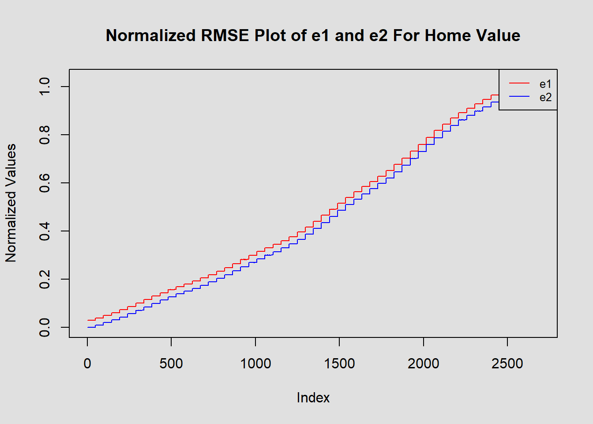
RSME Comparesions
Code
error1 <- as.numeric(err1)
error1 <- error1[!is.na(error1) & !is.nan(error1)]
error1 <- mean(error1)
error2 <- as.numeric(err2)
error2 <- error2[!is.na(error2) & !is.nan(error2)]
error2 <- mean(error2)
error1[1] 170107.3Code
error2[1] 170105.8Cross Validation For Saving Rate
Code
i=1
err1 = c()
err2 = c()
for(i in 1:(n-k))
{
xtrain <- dat[,c(2)][1:(k-1)+i]
xtest <- dat[,c(2)][k+i]
fit <- vars::VAR(dat, p=13, type='both')
fcast1 <- forecast(fit, h=4)
fcast1 = predict(fit, n.ahead = 12, ci = 0.95)
fit2 <- vars::VAR(dat, p=14, type='both')
fcast2 <- forecast(fit2, h=4)
fcast2 = predict(fit2, n.ahead = 12, ci = 0.95)
#capture error for each iteration
# This is RMSE
err1 = c(err1, sqrt((fcast1$fcst$gdp_deflator-xtest)^2))
err2 = c(err2, sqrt((fcast2$fcst$gdp_deflator-xtest)^2))
}RMSE PLOT
Code
# Normalize function
normalize <- function(x) {
return((x - min(x)) / (max(x) - min(x)))
}
# Normalize e1 and e2
normalized_e1 <- normalize(err1)
normalized_e2 <- normalize(err2)
# Set the background color of the plot region to #E0E0E0
par(bg = "#E0E0E0")
# Plot the normalized e1 with a red line
plot(normalized_e1+ e, type="l", col="red", ylim=range(c(normalized_e1, normalized_e2 + e)), xlab="Index", ylab="Normalized Values", main="Normalized RMSE Plot of e1 and e2 For Saving Rate")
# Add the normalized e2 with an offset and a blue line
lines(normalized_e2 , type="l", col="blue")
# Add a legend to distinguish the lines
legend("topright", legend=c("e1", "e2"), col=c("red", "blue"), lty=1, cex=0.8)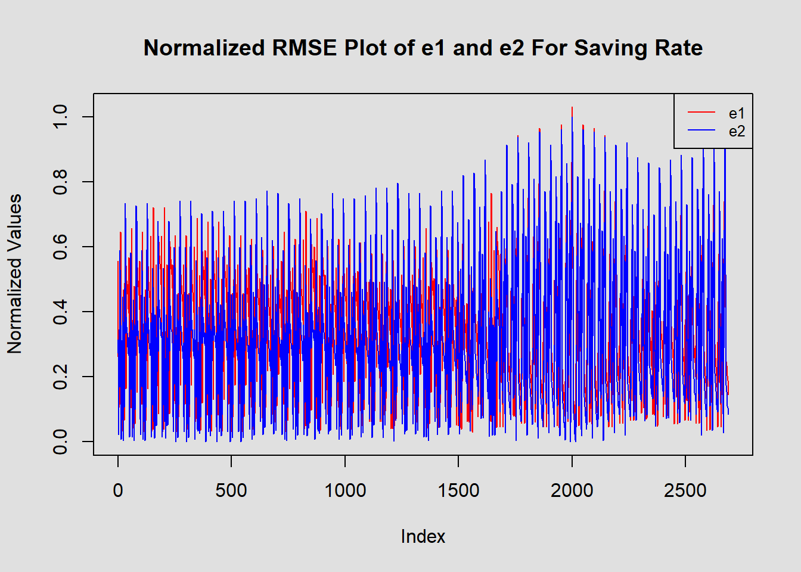
RMSE Compares
Code
error1 <- as.numeric(err1)
error1 <- error1[!is.na(error1) & !is.nan(error1)]
error1 <- mean(error1)
error2 <- as.numeric(err2)
error2 <- error2[!is.na(error2) & !is.nan(error2)]
error2 <- mean(error2)
error1[1] 2.784849Code
error2[1] 4.109366Cross Validation For GDP Deflator
Code
i=1
err1 = c()
err2 = c()
for(i in 1:(n-k))
{
xtrain <- dat[,c(3)][1:(k-1)+i]
xtest <- dat[,c(3)][k+i]
fit <- vars::VAR(dat, p=13, type='both')
fcast1 <- forecast(fit, h=4)
fcast1 = predict(fit, n.ahead = 12, ci = 0.95)
fit2 <- vars::VAR(dat, p=14, type='both')
fcast2 <- forecast(fit2, h=4)
fcast2 = predict(fit2, n.ahead = 12, ci = 0.95)
#capture error for each iteration
# This is RMSE
err1 = c(err1, sqrt((fcast1$fcst$gdp_deflator-xtest)^2))
err2 = c(err2, sqrt((fcast2$fcst$gdp_deflator-xtest)^2))
}RMSE Plots
Code
# Normalize function
normalize <- function(x) {
return((x - min(x)) / (max(x) - min(x)))
}
# Normalize e1 and e2
normalized_e1 <- normalize(err1)
normalized_e2 <- normalize(err2)
# Set the background color of the plot region to #E0E0E0
par(bg = "#E0E0E0")
# Plot the normalized e1 with a red line
plot(normalized_e1+ e, type="l", col="red", ylim=range(c(normalized_e1, normalized_e2 + e)), xlab="Index", ylab="Normalized Values", main="Normalized RMSE Plot of e1 and e2 For GDP Deflator")
# Add the normalized e2 with an offset and a blue line
lines(normalized_e2 , type="l", col="blue")
# Add a legend to distinguish the lines
legend("topright", legend=c("e1", "e2"), col=c("red", "blue"), lty=1, cex=0.8)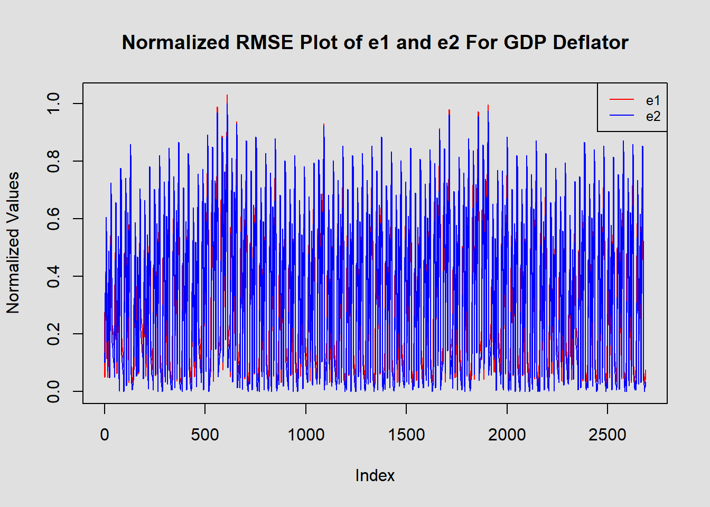
RMSE Compares
Code
error1 <- as.numeric(err1)
error1 <- error1[!is.na(error1) & !is.nan(error1)]
error1 <- mean(error1)
error2 <- as.numeric(err2)
error2 <- error2[!is.na(error2) & !is.nan(error2)]
error2 <- mean(error2)
error1[1] 3.594482Code
error2[1] 5.038616Cross Validation For Sale Price
Code
i=1
err1 = c()
err2 = c()
for(i in 1:(n-k))
{
xtrain <- dat[,c(4)][1:(k-1)+i]
xtest <- dat[,c(4)][k+i]
fit <- vars::VAR(dat, p=13, type='both')
fcast1 <- forecast(fit, h=4)
fcast1 = predict(fit, n.ahead = 12, ci = 0.95)
fit2 <- vars::VAR(dat, p=14, type='both')
fcast2 <- forecast(fit2, h=4)
fcast2 = predict(fit2, n.ahead = 12, ci = 0.95)
#capture error for each iteration
# This is RMSE
err1 = c(err1, sqrt((fcast1$fcst$gdp_deflator-xtest)^2))
err2 = c(err2, sqrt((fcast2$fcst$gdp_deflator-xtest)^2))
}RMSE Plots
Code
# Normalize function
normalize <- function(x) {
return((x - min(x)) / (max(x) - min(x)))
}
# Normalize e1 and e2
normalized_e1 <- normalize(err1)
normalized_e2 <- normalize(err2)
# Set the background color of the plot region to #E0E0E0
par(bg = "#E0E0E0")
# Plot the normalized e1 with a red line
plot(normalized_e1+ e, type="l", col="red", ylim=range(c(normalized_e1, normalized_e2 + e)), xlab="Index", ylab="Normalized Values", main="Normalized RMSE Plot of e1 and e2 For Sale Price")
# Add the normalized e2 with an offset and a blue line
lines(normalized_e2 , type="l", col="blue")
# Add a legend to distinguish the lines
legend("topright", legend=c("e1", "e2"), col=c("red", "blue"), lty=1, cex=0.8)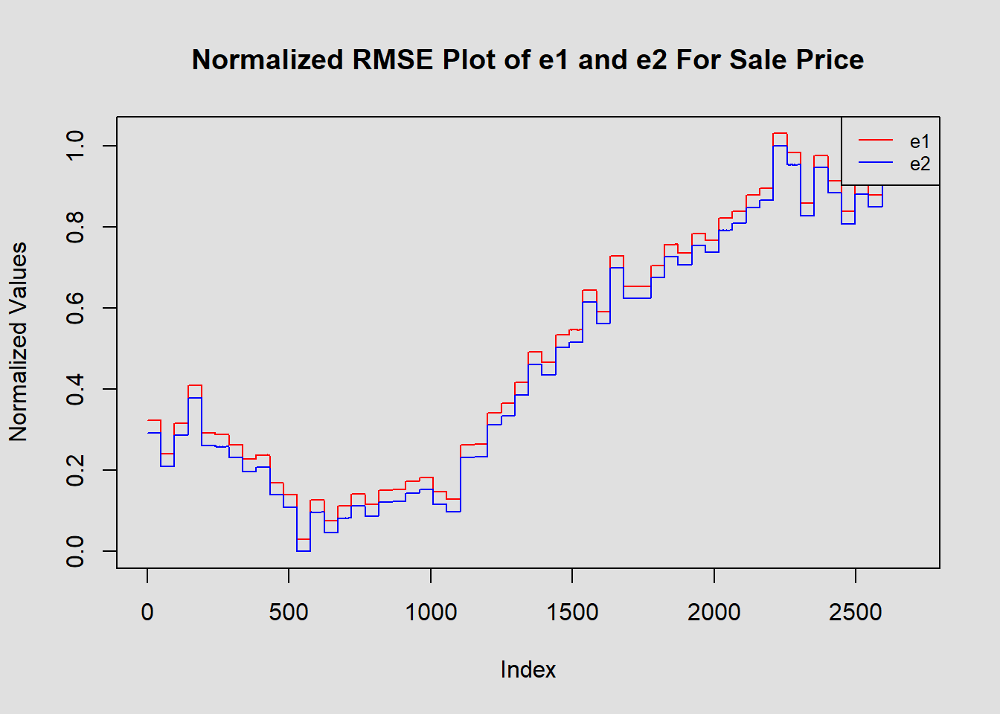
RMSE Values Compares
Code
error1 <- as.numeric(err1)
error1 <- error1[!is.na(error1) & !is.nan(error1)]
error1 <- mean(error1)
error2 <- as.numeric(err2)
error2 <- error2[!is.na(error2) & !is.nan(error2)]
error2 <- mean(error2)
error1[1] 268955.8Code
error2[1] 268954.3The second one VAR(14) is better for Home Value and Sale Price, However, overall, not too different The first one VAR(13) is better for GDP Deflator and Saving Rate Therefore, VAR(13) is relatively better than VAR(14)
Forecasts
Code
fit1 <- vars::VAR(dat[,1:4], p=13, type="const")
fcast1 = predict(fit1, n.ahead = 8, ci = 0.95)
fcast1$fcst$gdp_deflator fcst lower upper CI
[1,] 3.718453 2.6102444 4.826661 1.108208
[2,] 5.602610 4.4620373 6.743183 1.140573
[3,] 7.872473 6.4972147 9.247731 1.375258
[4,] 4.592520 3.0702843 6.114757 1.522236
[5,] 5.953920 4.3310094 7.576831 1.622911
[6,] 2.901753 0.8499155 4.953590 2.051837
[7,] 4.187176 2.0589012 6.315450 2.128275
[8,] 2.717952 0.3920197 5.043885 2.325933Code
fcast1$fcst$sale fcst lower upper CI
[1,] 348102.2 336133.1 360071.2 11969.06
[2,] 353458.9 339669.3 367248.4 13789.55
[3,] 350327.6 336109.4 364545.8 14218.21
[4,] 321335.8 304967.9 337703.7 16367.93
[5,] 309302.3 291867.5 326737.0 17434.72
[6,] 286105.4 268004.7 304206.1 18100.70
[7,] 271981.5 253762.0 290200.9 18219.43
[8,] 248976.4 229541.9 268410.9 19434.55Code
fcast1$fcst$saving fcst lower upper CI
[1,] 3.774885 2.665978 4.883793 1.108907
[2,] 4.885199 3.206902 6.563496 1.678297
[3,] 9.928629 8.142069 11.715188 1.786559
[4,] 10.166946 8.366419 11.967473 1.800527
[5,] 12.688735 10.877602 14.499869 1.811134
[6,] 10.564305 8.658945 12.469664 1.905360
[7,] 9.590800 7.567340 11.614261 2.023461
[8,] 8.682248 6.444347 10.920149 2.237901Code
fcast1$fcst$homevalue fcst lower upper CI
[1,] 207370.9 207313.3 207428.5 57.61206
[2,] 207451.6 207280.8 207622.4 170.81360
[3,] 207354.1 206979.7 207728.4 374.33551
[4,] 207004.8 206375.3 207634.3 629.46283
[5,] 206534.7 205611.8 207457.5 922.84057
[6,] 206003.4 204767.3 207239.5 1236.10298
[7,] 205538.6 203971.4 207105.8 1567.18724
[8,] 205002.0 203098.4 206905.6 1903.59212Code
fcast1$fcst$sale fcst lower upper CI
[1,] 348102.2 336133.1 360071.2 11969.06
[2,] 353458.9 339669.3 367248.4 13789.55
[3,] 350327.6 336109.4 364545.8 14218.21
[4,] 321335.8 304967.9 337703.7 16367.93
[5,] 309302.3 291867.5 326737.0 17434.72
[6,] 286105.4 268004.7 304206.1 18100.70
[7,] 271981.5 253762.0 290200.9 18219.43
[8,] 248976.4 229541.9 268410.9 19434.55Code
forecast(fit1,48) %>%
autoplot() + xlab("Year")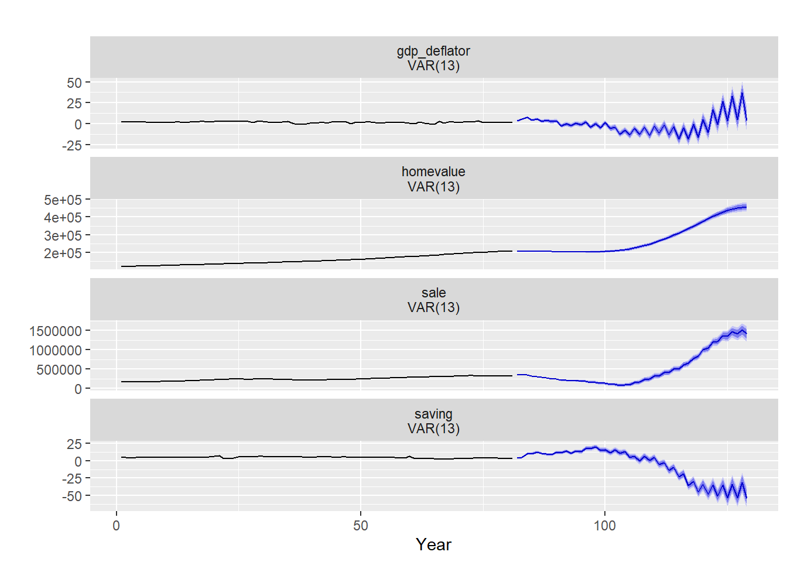